DISTINCTIO III — IN MENSURATIONE OMNIUM CAMPORUM¶
Distinctio Tertia: In Mensuratione Omnium Camporum Superficialium
Fons Criticus: boncompagni:1862 (Scritti di Leonardo Pisano, Vol. II, pp. 30–110 · Cod. Urb. Lat. 292, fol. 18v–67v) · English Translation · Summary · GEOMETOR Notes
De Mensuratione Trigonorum per Cathetum et Casum¶
Versio Anglica: Triangles by Cathetus & Casus (pp. 30–39) · Commentarius: Notae ad Trigonometriam Rationalem
Incipit distinctio tertia in mensuratione omnium camporum.
HANC itaque distinctionem in quinque partes diuidere decreui. In prima quarum mensurabimus triangulos. In secunda quadrilateros. In tertia multilateros, qui ex rectis lineis constant. In quarta circulos, et eorum portiones, et obliquas figuras insuper, et commixtas ex rectis et curuis lineis. In quinta mensurabimus ipsos campos, qui in ascensione montium iacent.
Incipit pars prima tertię distinctionis de mensuratione triangulorum.
CAMPI qui triangulj uel trilateri sunt, alij orthogonij, scilicet rectianguli; alij oxigonij, scilicet acutianguli; alij quoque ampligonij appellantur: et hec nomina recipiunt ab angulis. Orthogonium quidem trigonum est, quod habet unum ex tribus angulis rectum. Reliqui uero duo anguli uni recto sunt equales. Oxigonium quoque trigonum est, quod omnes tres angulos acutos habet. Ampligonium autem est, quod unum ex tribus angulis habet maiorem recto. Recipiunt quidem trianguli nomina a lateribus, ex quibus quidam ysopleuri, idest equilateri; quidam uero ysocheli, idest equicrurij; et quidam diuersilateri, qui scaleni appellantur. Equilateri quidem sunt, quorum omnia tria latera sibi inuicem equantur. Equicrurij autem sunt, qui duo latera sibi inuicem equalia habent. Diuersilateri quippe sunt, qui omnia tria latera habent inequalia. Et notandum, quia in omni triangulo tres catheti, scilicet perpendiculares, exigi possunt. Ex quibus unaqueque cadit a quolibet angulorum super latus subtendens, uel recipiens ipsum angulum.
In orthogonijs autem trigonis una perpendicularium cadit infra trigonum ; et est illa que producitur ab angulo recto super latus subtendens ipsum angulum. Relique quidem perpendiculares sunt duo latera continentia angulum rectum. In oxigonijs autem trigonis omnes tres perpendiculares cadunt interius. In ampligonijs namque due cadunt exterius, et alia interius. Colligitur quippe embadum, scilicet area omnium triangulorum
f. 0038 · p. 31
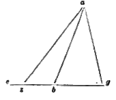


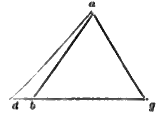
ex multiplicatione dimidij cathetus in totam basem, uel ex multiplicatione medietatis basis in totam perpendicularem; que cum demonstrationibus ostendere procurabo. Si in trigono ab angulo, qui non sit minor alicui reliquorum angulorum, cathetus supra latus subtendens ipsum angulum erigatur, infra trigonum cadet. SI in trigono .abg. sit angulus .bag. non minor angulo .abg. uel .bga.; dico, si a puncto .a. super rectam .bg. cathetus erigatur, infra trigonum .abg. cadet.
Non enim; sed si possibile est, cadat extra trigonum a latere .b.; et ducatur itaque .gb. in directo in infinitum super punctum .e.; et protrahatur super .ge. recta cathetus .az.; eritque trigonum .azb. orthogonium habens angulum, qui sub .azb. rectum: et quoniam in trigono .azb. unum latus eductum est extra trigonum, scilicet .zb. in .bg. Exterior quidem angulus, qui sub .abg. maiorem opposito et interiori, qui sub .azb.: rectus quidem, qui sub .azb.; maior ergo recto, qui sub .abg. Sed qui sub .bag. non minor est eo, qui sub .abg.; maior enim recto, qui sub .abg. Similiter et qui sub .bag. maior est recto. In trigono quidem .abg. sunt duo anguli duobus rectis maiores; quod est impossibile. Cum omnes tres anguli cuiuslibet trigoni duobus rectis sint equales, ut ait euclides 32.a primi: non ergo cathetus ab .a. super latus .bg. ducta extra trigonum cadet ex parte .b. Similiter ostendetur, neque extra ex parte .g. intus enim cadet; quod oportebat ostendere. Ex hoc enim comprehenditur, quod in oxigonio trigono ab angulo minore existente in ipso, et in ortogonio ab angulo recto, et in ampligonio ab angulo obtuso; si cathetus supra latera subtendentia ipsos angulos erigatur, infra ipsa trigona cadet. Demonstremus itaque, qualiter in orthogonio trigono latera continentia angulum rectum sit cathetus in ipso. Adiaceat quidem trigonum orthogonium .bgd. rectum habens angulum, qui sub .bgd. Dico, rectam .bg. perpendicularem esse super .gd. rectam, et .dg. super .bg.: protrahatur recta .gd. in directo ad punctum .a.; et quoniam super rectam .ad. stat recta .bg., facit circa se duos angulos, aut rectos, aut duobus rectis equales. Rectus quidem, qui sub .bgd. rectus manet, qui sub .bga. Quare .bg. cathetus est super .ad. Similiter si protrahatur recta .bg., ostendetur, rectam .dg. esse cathetum super .bg. Dico iterum: a puncto .b. alia cathetus cadere non posse super rectam .ad. preter cathetum .bg. Sed si possibile est; esto .ba. cathetus super .ad., erit tunc in trigono .bag. duo angulj rectj; quod est inconueniens. Similiter si fecerimus eam cadere inter .g.d. super punctum .e., erit in triangulo .abe. duo anguli recti, qui sub .bge., et qui sub .geb.; quod est impossibile: non enim super rectam .ad. cathetus cadit preter .bg. Similiter ostendetur, nec a puncto .d. super .bg. cathetum cadere posse preter .dg.; quod oportebat ostendere. SI in oxogonio trigono ab angulo minore existente in ipso super latus subtendens ipsum angulum cathetus trahatur, infra trigonum cadet. Exempli causa: sit oxogonium trigonum .abg. minorem habens angulum, qui sub .bag. Dico; si ab .a. erigatur cathetus super rectam .bg., infra trigonum cadet. Non enim; sed si possibile est cadat exterius super .d. punctum. Et quoniam recta .ad. cathetus est super rectam .dbg., rectus est angulus, qui sub .adb. Sed angulus qui sub .abg., qui est extra trigonum .adb., maior est interiori sibi opposito, qui sub .adb. Sed qui sub .adb. est rectus; quare angulus, qui sub .abg. maior est recto; quod est inconueniens, cum acutiangulum sit trigonum .abg.: non enim cadit cathetus ab .a. extra trigonum .abg.: intus enim cadit; quod oportebat ostendere.
f. 0039 · p. 32

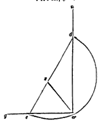

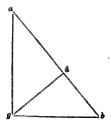
In ampligonio trigono si ab angulo acuto cathetus trahatur super latus subtendens ipsum angulum, extra trigonum cadet. Sit trigonum ampligonium .bdg., amplum habens angulum, qui sub .bdg. Dico, si ab angulo .dbg. cathetus ducatur super .gd. rectam, extra trigonum .bdg. cadet. Non enim; sed si possibile est, cadat inter .dg. ad punctum .a. Et quoniam .ba. cathetus est super rectam .gd.; angulus quidem, qui sub .bad., rectus est. Est enim maior recto, qui sub .bda. Quare in trigono .bda. sunt duo anguli duobus rectis maiores; quod est impossibile. Non enim a puncto .b. super .gd. cathetus infra trigonum .bdg. cadit. Similiter ostendetur, nec a puncto .g. super lineam .bd. cathetum posse infra trigonum .bgd.: exterius enim cadunt; quod oportebat ostendere. SI in duabus lineis angulum continentibus recta aliqua inciderit; et in medio ipsius sumatur punctus; et a puncto ad angulum protrahatur recta; si ipsa recta equalis fuerit linee iacenti a dicto puncto usque ad unam linearum continentium angulum, tunc angulus ille rectus erit. Exempli causa: sint due linee .ab. et .bg. continentes angulum .abg.; et in eis incidit recta (sic) .de.; in medio cuius accipiatur punctus .z., protrahatur .zb. Dico quoniam si .zb. recta equalis est recte .ze. uel .zd., quod angulus .abg. est rectus. Quoniam tres linee, que sunt .zb. et .zd. et .ze. sibi inuicem equales sunt; si a puncto .z. spatio unius ipsarum circulus circinabitur, nimirum per puncta .d.b.e. ueniet; infra quem circulum coaptata est quedam recta .de., infra quam est centrum circuli; ideo recta .de. est dyameter illius circuli; a quo dyametro comprehensus est arcus .d.b.e.: ergo semicirculus est .d.b.e., infra quem est angulus .dbe. Angulus quidem, qui est in semicirculo, rectus est; ut Euclides in tertio suo libro ostendit. Ex hoc enim manifestum est, quod si recta .zb. maior esset quam recta .zd. uel .ze.; angulus quidem .dbe. acutus esset. Si uero minor esset .zb. quam .zd. uel .ze., obtusus esset angulus .abg.
In orthogonio quidem trigono quadratus lateris subtendentis angulum rectum equus est duobus quadratis laterum continentium angulum rectum. Sit trigonum orthogonium .abg. rectum habens angulum, qui sub .agb. Dico quoniam quadratum linee .ab. equalem esse duobus quadratis linearum .ag. et .gb.: protraham super rectam .ab. a puncto .g. cathetum .gd.; eritque trigonum .abg. diuisum in duobus trigonis orthogonijs, que sunt .gdb. et .gda.; et sunt sibi inuicem similia et toti, ut Euclides in sexto libro demonstrauit. Et quoniam simile est trigonum .gdb. trigono .agb., circa comunem angulum .b. habent latera proportionalia. Est enim sicut .db. ad .bg. ex trigono .dbg., ita .gb. ex trigono .bag. est ad lineam .ab. Quare multiplicatio .db. in .ba. equa est quadrato linee .bg. Rursus quoniam simile est trigonum .gda. trigono .agb., trigono .agb., circa comunem angulum ipsorum .a. latera habent proportionalia. Est ergo sicut recta .da. ad .ag. ex triangulo .gda., ita recta .ga. ex triangulo .agb. est ad rectam .ab. Quare .ad. in .ab. equatur quadrato linee .ag. Demonstratum quidem est et .db. in .ba. equari quadrato linee .gb. Quare multiplicatio .db. in .ba. cum multiplicatione linee .ad. in .ab. equatur duobus quadratis linearum .bg. et .ga. Sed multiplicatio .db. in .ab. cum .da. in .ab. equa est quadrato linee .ab.; ergo quadratus linee .ab. equatur duobus quadratis linearum .bg. et .ga.; quod oportebat ostendere. Iis itaque demonstratis, qualiter trigona mensurentur, demonstramus. Sed notandum primum, quod ex trigonis orthogonijs ampligonijs alia
f. 0040 · p. 33

sunt equicruria, alia diuersilatera. Oxigoniorum quidem, alia sunt equilatera, alia equicruria, alia uero diuersilatera. Vnde, ut doctrinam mensurandi omnia genera trigonorum perfecte habeamus, hanc partem, scilicet primam huius tertie distinctionis, in tres differentias diuidimus. In prima quarum mensurabimus trigona orthogonia : in secunda oxigonia : in tertia ampligonia.
Incipit differentia prima.
AREA omnium trigonorum orthogoniorum colligitur ex multiplicatione unius lateris in dimidium alterius continentibus angulum rectum. Exempli causa: Sit trigonum orthogonium et equicrurium .abc. habens in singulis lateribus .ab. et .bc. perticas .10.; latus quoque .ac. sit radix de perticis .200.; multiplicabis dimidium lateris .ab. in totum latus .bc., uel e conuerso, scilicet .5. per .10.; et sic reddet pro area totius trigoni perticas .50. superficiales: et hoc probabitur, si a puncto .a. super lineam .ba., secundum rectum angulum, lineam .ad. equalem linee .bc. protraxeris; et copulaueris lineam .dc., que erit equalis linee .ab. Ideo quia quadrilaterum est .abcd. equilaterum, et orthogonium, ex quo trigonum .abc. dimidium continere in suprascripta figura aperte declaratur: totum ergo quadratum .abcd. est perticarum .100., que colliguntur ex multiplicatione de .10. in .10., scilicet ex uno latere in se ipso: quare trigonum .abc. cum sit dimidium ipsius quadrati, perticas 50 continere necesse est. Item est trigonum orthogonium diuersilaterum .bcd., cuius latus .bc. est perticarum .6.; latus quoque .cd. est perticarum .8.; latus uero .bd. perticarum .10.; et angulus rectus est, qui ad .c. Quare multiplicabis dimidium .bc. per totam .cd., hoc est .4. per .6.; uel dimidium .cd. in totam .cb., scilicet .3. per .8., et habebis perticas .24. pro area trigoni .bcd.; quod esse uerum cognoscitur suprascripti trigonj doctrina: uel aliter diuidatur .bc. in duo equalia supra punctum .e.; et a puncto .e. equidistans et equalis linee .cd. protrahatur linea .ef.; et copuletur .df. Et quoniam linea .cd. equidistans est et equalis linee .df., erit linea .fd. equalis, et equidistans linee .ce., ut in geometria aperte declaratur. Quare linea .df. est pertice .4., et est equalis linee .eb.; et .bh. est equalis .hd.; et angulus .ebh. angulo .hdf. est equalis: unde recta .eh. recte .hf. equatur. Quare trigonum .hfd. equalis trigono .beh.: totum ergo trigonum .bcd. equalis est quadrilatero .ecfd. orthogonio, quod continetur ex multiplicatione linee .ec. in lineam .cd., scilicet de .4. in .6. Quare trigonum .bcd. continetur ex multiplicatione dimidij .bc., scilicet ex .ec. in .cd., ut prediximus.
SImiliter ostendetur, si a puncto .i., scilicet dimidio .cd., protrahatur linea .ia. equidistans et equalis linee .cb.; et copuletur recta .ba.; et erit triangulus .abh. equalis triangulo .hid.: comuniter si addatur quadrilaterum .bcih., erit totum quadrilaterum .abci. equale triangulo .bcd.; cuius quadrilateri area habetur ex .ic. in .cb., hoc est de .3. in .8., ut supradiximus. Nam si latus .bd. per reliqua latera inuenire uolueris, multiplica latus .bc. in se, scilicet per .8., erunt .64.; cui superadde multiplicationem lateris .cd. in se, scilicet .36., erunt .100.; cuius radix, que est .10., est longitudo .bd. ypotenuse. Sit ypotenusa .bd. pertice .10., et basis .cd. pertice .6.; et queratur longitudo catheti .bc.; multiplicabis ypotenusam in se, scilicet .10. per .10., erunt .100.; de quibus tolle multiplicationem basis in se, scilicet .36., remanent .64.; quorum radix, scilicet .8., est longitudo catheti .bc. Item ypotenusa sit .10., et cathetus sit .8.;
f. 0041 · p. 34

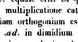

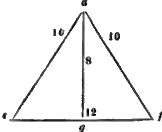

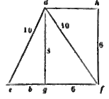
et ignoraueris basem .cd. Ex tetragono quidem .bd., scilicet de .100., extrahe tetragonum .bc., scilicet .64., remanent .36.; quorum radix, scilicet .6., est latus .cd.
Incipit Differentia secunda.
OMNIUM trigonorum oxigoniorum area colligitur ex multiplicatione catheti in dimidium basis, uel ex multiplicatione basis in dimidium catheti. Ad cuius rei euidentiam sit trigonum acutiangulum, et equilaterum .abc. habens in singulis lateribus perticas .10.: protrahatur super rectam .bc. cathetus .ad.; quoniam .ad. cathetus est super rectam .bc., equalis est uterque angulorum, qui ad .d.: ergo orthogonia sunt trigona .adb. et .adc.: et quoniam equalis est linea (sic) .ab. linee .ac.; et linea .ad. comunis est utrique triangulo; basis ergo .bd. basi .bc. equalis erit; et trigonum .adb. trigono .adc. equale erit. Et quoniam orthogonium est trigonum .adb., area ipsius colligitur ex multiplicatione catheti .ad. in dimidium basis .bd., scilicet in 2 1/2. Similiter quoniam orthogonium est trigonum .adc., area ipsius colligitur ex multiplicatione catheti .ad. in dimidium basis .dc.; quare area totius trigoni .abc. colligitur ex multiplicatione catheti .ad. in dimidium basis .bc., ut supra diximus.
Eisdem uero dispositis ostendetur, quod area .abc. trigonj colligitur ex multiplicatione totius basis .bc. in dimidium catheti .ad. Nam si longitudinem catheti .ad. scire desideras, tetragonum linee .bd., hoc est multiplicationem ipsius, uel potentiam extrahe ex potentia totius linee .ab., scilicet .25., de .100., remanebunt .75.; cuius numeri radix, scilicet parum minus de perticis 8 2/3, est longitudo catheti .ad.: quibus perticis 8 2/3 multiplicatis per medietatem basis .bc., scilicet per .5., reddunt parum minus de perticis 43 1/3 pro area totius trigoni .abc. Similiter multiplicatio totius basis, scilicet .10., in dimidio catheti, qui est parum minus de perticis 4 1/3, facit fere de perticis 43 1/3; uel .bd. per .ad., hoc est .5. per radicem de .75. multiplica, et habebis radicem de .1875. pro embado trianguli .abc.; que radix est secundum propinquitatem 43 1/3, minus 1/26. Et si embadum suprascripti triangulj aliter inuenire uis ex quadrato unius laterum, scilicet de .100., tertiam et decimam partem accipe; et quod prouenerit, erit embadum secundum propinquitatem. Est enim proportio aree cuiuscumque trianguli equilateris ad quadratum sui lateris parum minus de proportione, quam habent .13. ad .30. Item sit equicrurium trigonum et acutiangulum .def., habens latera .de. et .df. equalia; quorum unumquodque sit pertice .10.; latus quoque .ef. sit pertice .12.: inter equalia quidem crura ipsius, scilicet super basem .ef. cathetus protrahenda est; ideo quia cadit super dimidium .ef.; et protracte catheti .dg. studeas longitudinem inuenire; uidelicet extrahere potentiam .eg. ex potentia lateris .de., scilicet .36. de .100., remanent .64.; qui numerus est potentia catheti .dg.: quare .dg. est perticarum .8., scilicet radix de .64.: similiter .8. multiplicatis per dimidium basis .ef., scilicet in .6.; uel tota base in dimidio catheti, scilicet .12. per .4., ueniunt pertice .48. pro area totius trigoni .def. Nam cum multiplicatur cathetus in dimidium basis, tunc constituitur ex ipso triangulo quadrilaterum longum, habens in longitudinem perticas .8., scilicet quantitatem catheti, et in latitudinem perticas .6., scilicet dimidium basis. Verbi gratia : describatur iterum trigonum .def.; et a puncto .d. protrahatur linea .dh., equidistans et equalis linee .gf., hoc est equalis linee .ge.; et copuletur recta .hf., que erit equalis catheto .dg.
Quare quadrilaterum .dgfh. equale est trigono .def. Nam quadrilaterum .dgfh.
f. 0042 · p. 35

constat ex multiplicatione catheti .dg. in .gf., scilicet indimidio .ef. Item sit trigonum diuersilaterum et acutiangulum .abc.; cuius latus .ab. sit pertice .13.; latus .ac. sit pertice .15.; basis .bc. sit pertice .14. In hoc enim triangulo cathetus inueniri non potest, donec primum inueniatur casus supra basem, in quo perpendicularis, scilicet cathetus, cadat; qui casus tribus modis inueniri potest. Primus quidem modus est, ut potentia unius lateris cum potentia basis iungas; et ex eorum summa extrahes potentiam alterius lateris; residuique dimidium per longitudinem basis diuide; et quod ex diuisione prouenerit, erit casus ab illa parte, a qua coniungitur potentia lateris cum potentia basis. Vt in trigono suprascripto, cuius potentia basis, scilicet de .14. in se ipso, est .196.; que addita cum potentia lateris .ab., scilicet cum multiplicatione de .13. in se, que est .169., faciunt .365.: de quibus extracta potentia lateris .ac., scilicet .225., remanent .140.; quorum dimidium, scilicet .70., per basem, scilicet per .14., diuide, exibunt .5., que sunt casus a latere .ab., scilicet quantitas .bd.: reliquum uero .dc. erit pertice .9., scilicet differentia, que est a .5. usque in .14.
ITem potentia lateris .ac., scilicet .225., addita cum potentia basis .cb., scilicet cum .196., facient .421.; de quibus extracta potentia lateris .ab., scilicet .169., remanent .252.; quorum dimidium, scilicet .126., diuisum per basem, reddunt .9. pro casu .cd. Modus alius est, ut addas perticas utriusque ypotenuse, ut in hoc trigono .13. cum .15. erunt .28.; quas diuide per .2., erunt .14.; quas multiplica per differentiam, que est ab una ypotenusarum usque in ipsis .14., scilicet per .1., erunt .14.; quas diuide per dimidium basis, scilicet per .7., exibunt .2.; quas adde super dimidium basis, erunt .9.; que sunt maior casus a latere maioris ypotenuse .ac. Similiter extractis ipsis .2. ex ipsis .7., relinquetur minor casus .bd. perticarum .5., ut per primum modum inuentum est. Tertius modus est, ut potentiam minoris ypotenuse de potentia maioris extrahe, scilicet .169. de .225.; residuum uero, scilicet .56. per basem, scilicet per .14. diuide, exibunt .4. que adde cum base, erunt .18. quorum dimidium, scilicet .9., est maior casus: uel .4. extrahe de base, remanent .10.; quorum dimidium, scilicet .5., est minor casus. Et hic uidetur mihi actior reliquis. Inuento itaque casu, si perpendicularem .ad. inuenire uolueris, extrahe potentiam minoris casus, scilicet .25., de potentia lateris .ab., scilicet de .169., remanebunt .144.; quorum radix, scilicet .12., est longitudo catheti .ad.: uel potentiam maioris casus, scilicet multiplicationem de .9. in se ipso, scilicet .81., extrahe de potentia .ac., scilicet de .225., remanebunt similiter .144. pro potentia catheti .ad.: quare cathetus .ad. est .12., ut prediximus. Multiplicatio quidem catheti in dimidium basis, uel e conuerso, reddit perticas .84. pro area totius trigoni .abc. In suprascripto quidem trigono equicrurio ostendimus, ipsum equalem esse ei quadrilatero rectiangulo, qui habet in longitudine quantitatem catheti eiusdem trigoni, et in latitudine quantitatem dimidij sue basis. In hoc uero uolumus demonstrare, qualiter trigona equiparantur ipsis quadrilateribus rectiangulis, qui habent in longitudine quantitatem totius basis trigonorum, et in latitudine quantitatem dimidij catheti: diuidatur cathetus .ad. in duo equalia supra punctum .e., ut in hac alia cernitur formula; et per punctum .e. linea trahatur .fg., que sit equalis, et equidistans linee .bc.; et copulentur recte .fb. et .gc., que erunt equales et equidistantes sibi inuicem; propter quod recta .fg. est equidistans et equalis linee .bc.: et quoniam cathetus .ad. in duo equalia diuisus est secundum punctum .e.; et per punctum
f. 0043 · p. 36
.e. protracta est basis .bc. equidistans recte .fg., que secat rectas .ab. et .ac. in duo equalia in punctis .h. et .I., secundum quod in geometria declaratur; et anguli, ad .e. recti erunt, sicut sunt anguli, qui ad .d.: quare anguli .f. et .g. rectj sunt: ideo si scindatur recta .ae. ab .a. in .e., et recta .eh. ab .e. in .h.; et ponatur trigonum .aeh. super trigonum .bfh., recta .ae. super rectam .fb. cadet: ideo quia recta .fb. equalis est recte .ed., que est equalis recte .ea.; et recta .eh. super rectam .hf.; et recta .ah. super rectam .hb.; et angulus .f. equalis erit angulo .aef. Quare angulus .f. rectus est: propter eadem ergo rectus angulus qui ad .g., et trigonum .cig. equale est trigono .aei.: totum ergo .abc. trigonum quadrilatero .fbcg. equale est, quod habet in uno latere quantitatem basis; in alio quantitatem dimidij catheti, ut oportebat ostendere. Nec pretermictendum est, quod in quadrilatero .fbcg. angulus, qui sub .bcg. equalis est angulo, qui ad .f.; ideo quia oppositi sunt: quare et angulus .fbc. equalis est angulo qui ad .g.; que omnia in libro euclidis aperte declarantur, ubi ostenditur, quod omnes figure que habent latera opposita, equalia habebunt similiter et angulos equales: quare anguli .fbc. et .bcg. recti sunt: orthogonium ergo est quadrilaterum .fbcg., ut oportet. In secundo quidem euclidis libro demonstratur, unde procedit prima inuentio casus perpendicularis in oxigonio trigono.
Et nos unde procedit inuentio eiusdem casus, per secundum et tertium modum uolumus figuris geometricis demonstrare. Describatur rursus trigonum suprascriptum .abc.; et protrahatur in eo cathetus .ad.; et per puncta .bc. ad rectos angulos protrahantur recte .eb. et .fc.; et sit recta .eb. equalis recte .ac., scilicet 15; et recta .fc. equalis recte .ab., scilicet 13; et copulentur .fe. et .fd. et .de.; et diuidatur recta .ef. in duo equa super punctum .g.; et a puncto .g. utrisque rectis .fc. et .eb. equidistans protrahatur recta .gh.; et per punctum .f. recte, et equidistans .bc. protrahatur recta .fik.
Rursus per punctum .g. rectis .cb. et .fik. equidistans protrahatur recta .gl.; et quoniam orthogonia sunt trigona .adc. et .adb. rectos habentia angulos, qui sub .adc. et .adb.; potentia quidem lateris .ac. equatur duobus potentijs linearum .ad. et .dc.; et potentia linee .ab. equatur duobus potentijs linearum .ad. et .db. Quare si comuniter aufferatur potentia linee .ad., poterit potentia maioris casus .dc. plus potentia minoris .db., quantum potest potentia linee .ac. plus potentia linee .ab.
Quare potentie linearum .ab. et .dc. equantur potentijs linearum .ac. et .db. Sed recta .fc. equalis est recte .ab., et recta .eb. recte .ac. Quare potentia linearum .fc. et .cd. equatur potentie linearum .eb. et .bd. Sed potentie linearum .fc. et .cd. equa est potentia linee .fd. cum angulus .fcd. sit rectus. Simili quoque modo potentia linee .de. equatur potentie linearum .eb. et .bd.: quare linee .fd. et .de. sibi inuicem sunt equales. Equicrurium ergo est trigonum .fde. Et quoniam basis .ef. in duo equa diuisa est super punctum .g.; linea quidem .dg. cathetus est super lineam .ef.: quare rectus est uterque angulus, qui sub .dge. et .dgf. Rursus quoniam recta .gh. equidistans est recte .fc.; et in eis incidit recta .cb.; anguli quoque qui sub .fch. et .ghc. duobus rectis sunt equales. Sed qui sub .fch. rectus est; quare qui sub .ghc. rectus erit; exterior angulus qui sub .ghd. est rectus; quia equalis est interiori et opposito, qui sub .fch.: cathetus ergo est linea .gh. super rectam .bc. Item quoniam per punctum .f. protracta est linea .fik. equidistans linee .cb.; et linea .be.
f. 0044 · p. 37
est equidistans linee .fc.; paralilogramum ergo est quadrilaterum .kbcf. Quare opposita latera sibi inuicem sunt equalia: equalis ergo est recta .fk. recte .bc., et recta .bk. recte .cf. Ergo .bk. est 13, remanet .ke. 2. Nam recta .ih. equalis est utrique rectarum .fc. et .kb.
Paralilogramina enim sunt quadrilatera .kbhi. et .ihcf. Ergo recta .hi. est 13. Item quoniam in equidistantibus .eb. et .gh. recta incidit .ef., exterior angulus, qui sub .fgi. equalis est opposito interiori, qui sub .gel. Et angulus quidem qui sub .fig. equalis est .ei., qui sub .gle.: est enim uterque rectus. Reliquus qui sub .gfi. reliquo, qui sub .egl. est equalis; et recta .fg. recte .ge. est equalis. Quare reliqua latera reliquis lateribus equalia erunt, que equales angulos subtendunt: latus quippe .gi. lateri .el. est equale; et latus .fi. lateri .gl. est similiter equale. Sed recta .gl. recte .ik. est equalis; quia paralilogramum est quadrilaterum .lkig. Ergo recta .fi. equalis est recte .ik.; quare recta .ch. equa est recte .hb.: diuisa est ergo basis .bc. in duo equa super punctum .h.; quare .ch. est 7. Item quia paralilogramum est quadrilaterum .lkig.; equalis est recta .lk. recte .ig. Sed recta .ig. demonstrata est esse equalis recte .le.; quare et .kl. equa est recte .le. Sed tota .ke. est .2.; ergo unaqueque rectarum .kl. et .le. et .ig. est .1.: unde tota .hg. est .14. Rursus quoniam rectus est angulus .dgf., duo quidem angulj qui sunt .dgh. et .hgf. uni recto sunt equales. Similiter quoniam orthogonium est trigonum .gif. habens rectum angulum, qui sub .gif.; reliqui duo anguli qui sub .igf. et .gfi. uni recto sunt equales; ergo anguli .dgh. et .hgf. sunt equales angulis .hgf. et .gfi. Quare si comuniter auferatur angulus .hgf., remanebit angulus .dgh. equalis angulo .gfi. Nam et angulus .gif. angulo .ghd. est equalis. Reliquus .igf. reliquo .hdg. est equalis. Simile ergo est trigonum .fig. trigono .ghd.; quare est sicut .fi. ad .ig., scilicet sicut .7. est ad unum, ita .gh., scilicet .14., est ad .hd. Quare multiplicatio .gi. in .gh. diuisa per .fi. reddit .hd.; et hoc est quod in secundo modo fecimus. Videlicet addidimus latus .ab. cum latere .ac., hoc est .fc. cum .eb., et habuimus .28.; quorum dimidium, scilicet .14., fuit linea .gh.; que multiplicauimus per .ig., quod est id, in quo .gh. recta superhabundat rectam .fc., hoc est .ab., uel .gi. est illud, in quo .ac., scilicet .eb., superhabundat lineam .gh.; ex qua multiplicatione habuimus .14.; que diuisimus per dimidium basis .bc., scilicet per .ch., hoc est per .fi.; quarum unaqueque est .7., et habuimus .2. pro quantitate .hd.; que addidimus dimidio basis, scilicet .ch., que est .7., et habuimus .9. pro .cd. recta, que est maior casus; uel extraximus .hd. ex .hb., scilicet .2. de .7., remanserunt nobis .5. pro minore casu .db.; quod oportebat ostendere.
modus tertius.
Adiaceat iterum supradictum trigonum .abg., cuius latus .ab. sit .13.; latus quoque .ag. sit .15.; basis quidem .bg. sit .14.; et protrahatur super .bg. cathetus .ac., et quoniam maior est latus .ag. quam .ab., maior est casus .gc. quam .cb.: quare ex .cg. auferatur .cd., que sit equalis recte .cb., et erit recta .bd. diuisa in duo equa super punctum .c.; cui recte .bd. in directo addita est .dg. Quare multiplicatio .dg. in .bg. cum quadrato linee .cd., uel .cb. equatur quadrato linee .cg. Quare quadratus linee .cg., scilicet maioris casus, superhabundat quadrato linee .bc., scilicet minoris casus
f. 0045 · p. 38
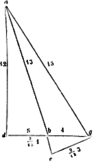
in quantitate multiplicationis linee .dg. in lineam .bg. Sed ostensum est superius in alia figura, quod superhabundantia quadrati casus .cg. ad quadratum casus .cb. est sicut superhabundantia quadrati lateris .ag. ad quadratum lateris .ab. Quare superhabundantia quadrati lateris .ag. ad quadratum lateris .ab. est sicut multiplicatio recte .dg. in rectam .bg. Sed quadratum lateris .ag., scilicet .225., superhabundat potentiam lateris .ab., scilicet .169. in .56.; quare multiplicatio .dg. in .bg. surgit in .56. Sed .bg. est .14.; in quibus diuisis, reddunt .4. pro quantitate linee .dg.; quibus .4. extractis ex base .bg., scilicet de .14., remanet linea .bd. 10.; quorum dimidium, scilicet .5., erunt in minori casu .bc.; quod oportebat ostendere.
Incipit differentia tertia.
SI autem trigonum ampligonium, et equicrurium fuerit, protrahes cathetum in ipso super latus maius; et operaberis secundum quod superius in trigono acutiangulo et equicrurio diximus. Sed si trigonum ampligonium diuersilaterum fuerit, ut trigonum .abg., cuius latus .ab. sit pertice 13; et latus .bg. pertice 4; latus quoque .ag. pertice .15.; si ab angulo .b. obtuso cathetum protrahere uolueris super maius latus, scilicet super .ag., infra triangulum cadet. Casum itaque seu cathetum, nec non et embadum ipsius inuenies, secundum quod docuimus in triangulo acutiangulo diuersilatero. Sed si ab angulo .a., uel ab angulo .g. cathetos protrahere uolueris, extra triangulum cadent.
Quare qualiter casus ipsorum extra bases reperiantur, indicare necesse est. Ex potentia maioris lateris, que est .225., extrahes potentiam reliquorum duorum laterum; quorum potentia .ab. est .169., et potentia .bg. est .16., remanebunt .40.; quorum dimidium, scilicet .20., si per basem .bg. diuiseris, scilicet per .4., exibunt .5. pro quantitate casus .bd., super quem cathetus .ad. erigitur. Et si eadem .20. per basem .ab., scilicet per .13., diuiseris, habebis pro casu .be. perticas 1 7/13, super quem cathetus .ge. eleuatur. Deinde si potentiam .db., que est .25., ex potentia .ab., que est .169., extraxeris; uel si potentiam .dg., que est .81., ex potentia .ag. dempseris, remanebunt pro potentia catheti .ad. 144.; cuius radix, scilicet .12., est longitudo catheti .ad.: quam si in dimidium sue basis, scilicet in .2., multiplicaueris, reddent perticas .24. pro area trigoni .abg.: uerbi gratia: trigonum .adg. orthogonium est; et colligitur area ipsius ex multiplicatione dimidij catheti .ad., scilicet de .6. in totam basem .dg., scilicet in .9.: quare area trigonj .adg. est pertice .54.; ex qua si extraxeris aream trigonj orthogonij .adb., que est .30., que colligitur ex multiplicatione eiusdem dimidij catheti .ad. in basim .db., remanebunt pro area trigonij .abg. pertice .24.; que colliguntur iterum ex multiplicatione dimidij catheti .ad. in basim .bg., uel ex multiplicatione catheti .ad. in dimidium basis .bg., ut prediximus. Similiter si multiplicaueris cathetum .ge. in dimidium basis .ba., eamdem habebis aream. Cathetum enim .ge. inuenies, si extraxeris potentiam linee .eb. ex potentia linee .bg., uel potentiam linee .ea. ex potentia linee .ag. Et est cathetus .ge. perticarum 3 9/13; quorum dimidium, scilicet 1 11/13, si per basem .ab., scilicet per 13 multiplicauerimus, ad easdem perticas 24 pro embado trigonj .abg. ueniemus.
Est enim in secundo Euclidis libro aperte demonstratum, unde procedit modus supradictus in reperiendis casibus perpendicularium, que cadent extra obtusum angulum in ampligonijs trigonis. Possumus quidem per alios duos modos ipsos casus reperire
f. 0046 · p. 39


uidelicet per eos, quos demonstrationibus superius demonstrauimus. Et est iste primus modus: adde .13. cum .15., scilicet latus .ab. cum latere .ag., erunt .28.; quorum dimidium, scilicet .14., multiplica per differentiam, que est ab ipsis .14. usque ad unum ex lateribus predictis, scilicet per .1., erunt .14.; que si diuiserimus per .2., scilicet per dimidium basis, egredientur .7.; de quibus demptis .2., scilicet .bf., remanebunt .5. pro casu .bd.: super quibus namque .7., si addiderimus lineam .fg., habebimus .9. pro tota linea .dg. Alius quidem modus est, ut potentiam linee .ab. ex potentia linee .ag. extrahas, scilicet .169. de .225.; residuumque, scilicet .56., per basem .bg. diuidas, scilicet per .4.; et que de ipsa diuisione peruenit, .4., scilicet basem extrahas, remanebunt .10.; quorum dimidium, scilicet .5., est casus .bd. Que euidentissime monstrabuntur, si lineam .gd. protraxerimus in puncto .h.: et sit linea .dh. equalis linee .db.; et copuletur .ah., ut in hac alia cernitur formula. Est enim in trigono .ahg., et infra ipsum trigonum cathetus ducta .ad.; et quoniam recta .hd. equalis est recte .db., et in eis est cathetus .ad., equalis est recta .ah. recte .ab.: ergo recta .ah. est 13, et recta .ag. est .15., et recta .bg. est .4., et recta .bh. est ignota; et est diuisa in duo equa supra punctum .d., cui iacet in directo linea .bg.; et est linea .dg. maior casus; linea quoque .dh. minor in trigono .ahg. Quare potentia linee .dg. superhabundat potentiam linee .dh. in quantitate, in qua superhabundat potentia linee .ag. potentiam linee .ah., scilicet in .56. Sed potentia linee .dg. superhabundat potentiam linee .dh. in multiplicatione .bg. in lineam .gh. Quare .bg. ducta in .gh. facit .56.: quare diuisis .56. per .bg. reddent .14. pro tota linea .hg.; de quibus dempta linea .bg., scilicet .4., nimirum .10. remanebunt pro linea .bh.; quorum dimidium, scilicet .5., est casus .bd., ut superius inuentum est. Nam si super rectam .hg. protraherimus ad rectos angulos lineas .gc. et .hi. Quarum .gc. sit equalis utrique linearum .ab. et .ah.; et linea .hi. equatur linee .ag.; et copuletur .ci.; et expleatur figura, secundum quod fecimus in trigono oxigonio. Inuenies lineam .kl. esse dimidium laterum .ah. et .ag.; et .hl. esse dimidium basis .hg. Quare .dl. est .2., et .lg. remanet ignota; et .mk. est .1., scilicet differentia, que est a linea .kl. ad quamlibet linearum .cg. uel .hi.; et est trigonum .dlk. simile trigono .kmc. Quare est sicut .dl. ad .lk., ita .km. ad .mc. Quare multiplicationem .kl. in .km. diuides per .2., scilicet per .dl., egredientur .7. pro linea .mc., scilicet pro .lg.; quibus additis .2., scilicet .ld., habebis .9. pro linea .gd.; de qua extracta .gb., scilicet .4., remanebunt .5. pro casu .bd., ut oportet. Aliter adiaceat rursus trigonum ampligonium .acb. obtusum habens angulum, qui sub .acb.; et sit .ac. .13., et .ab. .20., et .bc. .11.; et protrahatur extra ipsum cathetus .ag. super lineam .bg.; et a punctis .c. et .b. ad rectos protrahatur .bd. et .cf., quarum .bd. sit equa linee .ac. et .cf. linee .ab., erit .bd. 13, et .cf. 20; et copulentur .df. et .fg. et .dg.; et a puncto .e., scilicet a medio linee .df., protrahatur cathetus .eh. super lineam .gb.; et copuletur recta .eg.; et per punctum .d. protrahatur .dk. equidistans linee .bh.: et quoniam orthogonia sunt trigona .agc., et .agb. equatur potentia linee .ac. duobus potentijs linearum .ag. et .gc.; et potentia linee .ab. potentijs linearum .ag. et .gb. Quare potentia linearum .ac. et .gb. equatur potentie linearum .ab. et .gc., hoc est potentia linearum .fc. et .gc. equatur quadratis linearum .db. et .bg.: quare recte .dg. et .gf. sibi inuicem sunt equales; et recta .ge. est cathetus super .df.; et per reliqua supradicta ostendetur, .hk. esse .13., scilicet
f. 0047 · p. 40

equalem linee .db. et .ke. esse superhabundantiam linee .he. ad .bd.; et trigonum .ghe. esse simile trigono .ekd. Quare est sicut .dk. ad .ek., ita .eh. est ad .hg. Quare si multiplicatio .ek. in .eh. diuidatur per .dk., scilicet per .bh., que est dimidium linee .bc., exibit linea .hg. 10 1/2: ex quibus extracta linea .ch., scilicet 5 1/2, remanebit casus .cg. .5., ut oportebat ostendere. Quare cathetus .ag. erit .12.; cuius dimidium, si per basem .cg., scilicet .6. per .11. multiplicauerimus, nimirum perticas .66. reddet pro area trigoni .acb.
Regula et Demonstratio Geometrica Campi Trigonij per Tria Latera¶
Versio Anglica: Heron’s Rule & Incenter Proof (pp. 40–41) · Commentarius: Notae ad Heronis Demonstrationem
Nam ut mensurandi doctrina perfecte in hoc libro contineatur; qualiter quodlibet trigonum sine inuestigatione catheti mensurari possit, indicabimus. Trigonj latera in unum coniunge, et dimidium sume accipe eorum; de qua extrahe per ordinem latera trigonj; et multiplica residuum unius lateris per residuum alterius; et sumam multiplica per residuum alterius lateris; quod totum per medietatem trium laterum multiplica; et summe radicem inuenias, que erit area totius trigonj. Verbi gratia: additis in unum lateribus suprascripti trigoni, scilicet .13. et .11. et .20., faciunt .44.; cuius dimidium est .22., a quo maius latus distat perticis .2.; secundum perticis .9.; tertium perticis .11.: multiplicatio quidem residui primi lateris, scilicet .2., in residuo secundi lateris, scilicet in .9., faciunt .18.; multiplicata per residuum tertij lateris, scilicet per .11., faciunt .198.; quo numero iterum multiplicato per dimidium laterum, scilicet per .22., faciunt .4356.; que sunt potentia aree trigonj, quorum radix est .66., ut pro area ipsius superius inuenimus. AD cuius rei demonstrationem adiaceat trigonum .abg.; et diuidantur in duo equa anguli, qui sub .abg. et .agb. a rectis .bt. et .tg.; et a puncto .t. cathetus protrahantur .th. te. et .tz.; et copuletur .at.: et quoniam rectus est qui sub .thg., et qui sub .tzg., equalis est angulus qui sub .thg. angulo qui sub .tzg., nec non et angulus qui sub .tgh. angulo, qui sub .tgz. est equalis. Quare reliquus qui sub .gth. reliquo qui sub .gtz. equatur: equianguli enim sunt trianguli .thg. et .tgz.: et quoniam latus .gt. est comune eorum; reliqua quidem latera, que equos angulos subtendent, equalia habebunt; latus quoque .th. lateri .tz., et .hg. lateri .gz. equantur. Similiter ostendetur rectam .hb. recte .be., et rectam .th. recte .te. esse equales; et trigonum .thb. equari trigono .teb.: et quoniam utraque rectarum .te. et .tz. equales sunt recte .th., et sibi inuicem equalia sunt; ergo equalis est recta .te. recte .tz.: comunis adiaceat recta .ta.; due ergo, que sunt .et. et .ta., duabus, que sunt .at. et .tz., equantur; et angulus qui sub .aet. angulo qui sub .azt. est equalis; et latus .at. est comune. Quare equiangulum et equilaterum est trigonum .aet. trigono .azt. Quare latus .az. lateri .ae. equatur. Et quoniam equalis est recta .az. recte .ae. Si comune adiaceat eis recta .eb., erit quidem recta .ab. equalis duabus rectis, que sunt .az. et .eb., hoc est .az. et .bh. Rursus quoniam recta .zg. equalis est recte .gh.; erunt quidem due recte, que sunt .ag. et .hb., equales duobus rectis .ab. et .gh.; ergo .ag. et .hb., scilicet .eb., sunt medietas laterum trigonj .abg. Quare ostendetur, rectam .ae. esse illud, in quo medietas laterum trigonj .abg. superhabundat latus .ag. Similiter ostendetur, rectam .eb. esse id in quo medietas laterum trigonj .abg. superhabundat latus .bg.; et .hg., uel .gz. esse superhabundantiam a latere .ab. Quare recte .ab. et .hg. sunt medietas laterum trigoni .abg. Similiter et recte .ag. et .hb. sunt medietas laterum eiusdem trigoni: protrahantur ergo recte .ab. et .ag. in directo in punctis .L.M.; et sit .bl. equalis recte .hg., et .gm. equalis recte .hb.; erit ergo utraque rectarum
f. 0048 · p. 41
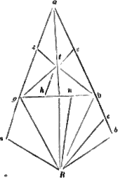

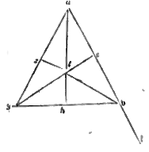
.al. et .am., sicut medietas laterum trigoni .abg. Deinde producatur .at. in puncto .k.; et copulentur recte .lk. et .km.; et sit rectus qui sub .alk. Quare rectus erit qui sub .amk.; quia due recte .al. et .ak. equales sunt rectis .ak. et .am.; et angulus qui sub .lak. angulo, qui sub .kam. est equalis: quare et latus .lk. lateri .mk. equatur; et reliqui anguli reliquis angulis, qui ab equalibus rectis subtenduntur, equabuntur: angulus quidem qui sub .akl. ei qui sub .akm., et qui sub .alk. ei qui sub .amk.; sed rectus qui sub .alk.; ergo rectus qui sub .amk., ut prediximus. Et secetur a linea .bg. equalis linee .bl.; et sit .bn.; et copulentur .nk. et .kg. et .kb.: et quoniam .gh. est superhabundantia dimidij laterum trigoni .abg. a latere .ab., equalis est linee .bl., hoc est .bn. Quare .ng. equatur .gm.; cum sit superhabundantia medietatis laterum a latere .ag. Et quoniam trigona .gmk. et .klb. orthogonia sunt, potentia linee .gk. equatur duabus potentijs linearum .gm. et .mk., hoc est .gn. et .mk.; et potentia linee .bk. equatur duabus potentijs linearum .kl. et .bl., hoc est .kl. et .bn. Sed potentie linee .lk. equa est potentia linee .km. Quare quantum potentia linee .kg. superhabundat potentiam linee .kb., tantum potentia .ng. superhabundat potentiam .nb. Quare linea .kn. cathetus est super lineam .bg., et est equalis linee .kl. Et quia anguli .knb. et .blk. recti sunt, remanent anguli .nbl. et .lkn. duobus rectis equales. Sed angulj .ebn. et .nbl. similiter duobus rectis sunt equales. Quare angulus .ebn. equalis est angulo .lkn.; et angulus .lkb. dimidium est anguli .lkn.; erit ergo equalis angulo .ebt., qui est medietas anguli .ebh.; et angulus qui ad .l. est equalis ei qui ad .e.; cum ambo sint recti; et remanet angulus .etb. equalis angulo .kbl.: trigonum ergo .kbl. simile est triangulo .ebt.: proportio ergo .kl. ad .lb. sicut proportio .be. ad .et.: ductus ergo .kl. ad .et. sicut ductus .lb. ad .be. Sed proportio tetragoni .et. ad ductum .et. ad .lk., sicut proportio .et. ad .lk.; et proportio .et. ad .lk. sicut .ae. ad .al.; cum .et. sit equidistans linee .lk.: proportio ergo .ae. ad .al. sicut proportio tetragoni .et. a ductu .et. ad .lk. sicut ductus .eb. ad .bl.: proportio ergo .ae. ad .al. sicut proportio tetragoni .et. ad ductum .eb. ad .bl.: ductus ergo tetragoni .et. ad .al. sicut ductus .ae. ad ductum .eb. ad .bl. Et ductus tetragoni .et. ad tetragonum .al. est sicut ductus .ae. ad ductum .eb. ad .bl., et producti .al. Sed ductus tetragoni .et. ad tetragonum .al. est sicut tetragonum superficiei trigoni .abg.; quod in sequenti demonstrabimus. Quare multiplicatio .ae., que est superhabundantia medietatis laterum trigoni .abg. a latere .ag. in .eb., que est superhabundantia a latere .bg. ducta in .bl., que est superhabundantia a latere .ab., et producti in .al., scilicet in medietate laterum trigonj .abg., reddit tetragonum aree trigoni .abg., ut oportebat ostendere. SED ostendendum est, qualiter ductus tetragoni .et. ad tetragonum .al. est sicut tetragonum aree trigonj .abg. Quoniam trigonum .abg. in tribus trigonis resolutum est a puncto .t., que sunt .atb. et .btg. et .gta.; et catheti uniuscuiusque sunt equales sibi inuicem; et sunt .te. et .th. et .tz.; ergo ductus .et. in dimidio basis .ab. reddit aream trigoni .atb.: similiter ductus .th., scilicet .te., in dimidio .bg. reddit aream trigoni .btg.: propter eandem ergo et ductus .tz., hoc est .te., in dimidio .ag., reddit aream trigoni .atg.
Quare ductus .et. in .al., scilicet in dimidio laterum trigoni .abg., reddit aream trigoni .abg.: quare ductus tetragonj .et. ad tetragonum .al. est sicut tetragonum aree
f. 0049 · p. 42
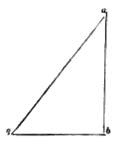

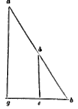


trigoni .abg., ut oportebat ostendere. Et si in trigono aliquo duo tantum latera proponantur nota; et uolueris per ea habere embadi, et alterius lateris notitiam, ut in trigono .abg., cuius latera .ab. et .bg. sint nota; considerandum est primum, utrum angulus contentus a notis lateribus, scilicet angulus .abg. sit rectus, uel minor, aut maior recto. Esto primum rectus; quare recta .ab. super rectam .bg. cathetus est. Ex ductu ergo .ab. in .bg. dimidium prouenit area trigoni .abg.; et si acceperimus in unum quadrata linearum .ab. et .bg. notarum, proueniet notum quadratum linee .ag., cuius radix habebitur pro linea .ag. Sed si angulus qui sub .abg. est minor recto, tunc accipies in lineam .ab. punctum aliquod, quod sit .d.; a quo super lineam .bg. cathetus trahatur .de. et mensurabis latera trianguli .deb.; et si proportio .be. ad .bg. est equalis proportionij .bd. ad .ba., angulus qui ad .g. erit rectus; quia linea .ed. equidistans erit lateri .ag.: quare si ex quadrato lateris .ab. auferatur quadratum lateris .bg., remanebit quadratum lateris .ag. notum: uel quia linea .de. equidistans est linee .ag., erit proportionaliter sicut .bd. ad .ba., ita .ed. ad .ga.: quare si multiplicauerimus latus .ba. in .ed.; et diuiserimus sumam per .db., proueniet utique latus .ag. notum. Verbi gratia: sit latus .ab. .20., et .bg. .12.; et sit angulus qui sub .abg. minor recto; et sit .bd. perticarum .5., et .de. sit .4., et .eb. tres: erit ergo sicut .bd. ad .ba., scilicet sicut .5. ad .20., ita .3. ad .12., hoc est .be. ad .bg.: quare recta .de. equidistat recte .ag.; quare angulus qui sub .agb. est rectus, cum rectus est qui sub .deb.: quare si ex quadrato lateris .ab. auferatur quadratum lateris .bg., scilicet .144. ex .400., remanebunt .256. pro quadrato lateris .ag.; quorum radix, scilicet .16., est longitudo lateris .ag.: uel si multiplicauerimus .ba. in .ed., scilicet .20. per .4.; et diuiserimus sumam per .db., scilicet per .5., prouenient utique .16. pro latere .ag.; quorum dimidio ducto per .gb., scilicet .8. per .12., uenient .96. pro embado trianguli. Et si proportio .be. ad .bg. fuerit minor proportione .bd. ad .ba., ut in hoc alio trigono cernitur; tunc angulus qui sub .agb. erit minor recto: quare oxigonium erit trigonum .abg.; et a puncto .a. cathetus cadat inter .bg.; unde ut habeamus casum ipsius, fiat sicut .bd. ad .ba., ita .be. ad .bf.; et copuletur .af., quia ipsa erit cathetus super .bg. rectam. Verbi gratia : sit iterum .ab. .20., et .bg. .17., et erit .bf. .12.; cum sit sicut .bd. ad .ba., ita .be. ad .bf.: quare per ea que dicta sunt, inuenies, cathetum .af. esse .16.; cuius quadratum, scilicet .256., si addiderimus cum quadrato linee .fg., scilicet cum .25., habebuntur .281. pro quadrato linee .ag.: et si multiplicauerimus dimidium catheti .af. in totam .gb., uenient .136. pro embado trianguli .abg. ET si proportio .be. ad .bg. fuerit maior proportione .bd. ad .ba., erit angulus qui sub .agb. maior recto; unde cathetus a puncto .a. cadet extra trigonum .abg. Quare protrahatur linea .bg. in puncto .h.; et sit .be. ad .bh. sicut .bd. ad .ba.; et copuletur .ah., qui erit cathetus, super lineam .hb. Verbi gratia: sit latus .ab. .20., et .bg. sit .7., et .bd. .5., et .be. sit .3., et .de. sit .4.; quare .bh. erit .12.: que reperies si multiplicationem ex .be. in .ba. diuiserimus per .db.; cum sit .be. ad .bh. sicut .bd. ad .ba.: et erit iterum .ed. ad .ah., sicut .bd. ad .ba. Quare diuisa multiplicatione .de. in .ba. per .db. prouenient .16. pro catheto .ah.: et si ex .bh., scilicet ex 12, auferatur .bg., scilicet 7, remanebunt 5 pro casu .gh.; cuius quadratum, scilicet .25., si addatur quadrato linee .ah., habebuntur .281. pro quadrato linee .ag.: quare latus .ag. est radix de .281.; et ex ducto dimidio .ah. in .gb. proueniunt .56. pro embado trigoni
f. 0050 · p. 43

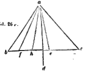
.abg. Et si unum tantum latus alicuius trigoni proponatur notum; et uolueris per ispum reliquorum laterum, et ipsius embadi habere notitiam. Vt trigoni .dez.; cuius latus .dz. sit notum, accipiam in rectam .dz. partem aliquam, que sit .az.; et a puncto .a. super rectam .az. protraham lineam .ab. equidistantem linee .de.; et mensurabo lineas .ab. et .bz., ut sint nota latera trigoni .abz.: et quia recta .ab. equidistat recte .de., proportionaliter est sicut .za. ad .zd., ita recta .zb. ad .ze., nec non et recta .ab. ad .de. Sed proportio .za. ad .zd. est nota; quare latera .de. et .ez. erunt nota. Verbi gratia : sit .dz. .18., et .az. .6., et .ab. sit .7., et .bz. sit .5.; et sic .zd. ex .za. est tripla; quare .de. erit tripla ex .ab., et .ez. ex .bz. similiter est tripla: ergo latus .de. est .21., et latus .ez. est .15.; et cum latera trigoni .dez. sint nota, erit notum embadum ipsius per ea que dicta sunt superius. Vel habeatur embadum trigoni .abz. per modum predictum, scilicet accipiatur dimidium laterum ipsius, quod est .9.; et accipiamus differentiam laterum, que est usque in .9., scilicet .2., et .3., et .4.; et multiplicemus .2. per .3.; quod totum per .4.; quod totum per .9., erunt .216.; quorum radix est embadum trianguli .abz.
Et quoniam simile est trigonum .abz. trigono .dez., erit embadum trigoni .abz. ad trigonum .dez., sicut quadratum lateris .za. ad quadratum lateris .zd., ut euclides ostendit: et quia latus .dz. est triplum ex .az., erit quadratum linee .dz. nonuplum quadrati linee .az.; quare embadum trigoni .dez. est nonuplum trigoni .abz. Quare si multiplicaueris .216. per quadratum nouenarij, scilicet per .81., habebis .17496. pro quadrato embadi trigoni .dez.; quorum radix, que est parum plus de 132 1/4, habebitur pro embado ipsius. Diximus autem, simile esse trigonum .abz. trigono .dez.; com ad inuicem habeant angulos equales: est enim recta .ab. equidistans recte .de.; quare angulus .zab. equalis est angulo .zde., exterior interiori: propter eadem et angulus .zba. equalis est angulo .zed.; et habent enim angulum qui sub .dze. comunem; quare equiangulum est trigonum .abz. trigono .dez.; et sic ipsa trigona sunt similia.
Modus uulgaris quo uti debent agrimensores, et est sufficiens in mensuratione omnium trigonorum.
STET mensor super maiorem trigoni angulum, et aspiciat super latus maius, ubi ab ipso angulo cathetus cadere debeat; et si hoc ad oculum perfecte comprehendere nequiuerit, habeat lensam fili, et figat unum caput in ipso angulo; et extendat ipsum filum in partes, in quibus cathetus cadere ei uidebitur; et producat ipsum aliquantulum extra maius latus trigoni; et tunc ducat eam lensam circiter, donec in utraque parte cum manu tanget ipsum maius latus; et signet utrumque contactum, et diuidat spatium quod fuerit inter utrumque in duo equalia, et ibi erit casus catheti : tunc mensuret cum pertica cathetum, et multiplicet eam per longitudinem dimidij basis, scilicet per medietatem maioris lateris; et habebit aream trigoni. Ad cuius euidentiam esto trigonum .abc. habens latus .bc. maius quam .ab., uel quam .ac. Quare ab angulo .a. cathetus dirigendus est super latus .bc.; et si latus .ab. equalis est lateri .ac.; cadet cathetus in medio lateris .bc.; si minus cadet uersus .b.; et si maius cadet uersus .c. Vnde stabit mensor super punctum .a.; et considerabit ubi ab ipso puncto .a. cadere debeat super lineam .bc.: quo facto figet lensam in puncto .a.; et extendet eam super lineam .bc. uersus .ab. latus, cum sit minor lateri .ac.: sitque lensa illa .ad.;
f. 0051 · p. 44
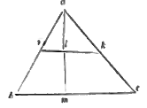

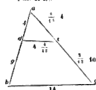
tenebit cum manu lensam super punctum .d., scilicet aliquantulum extra trigonum ducet ipsam lensam uersus .c., donec .d. punctus tangat lineam .bc.; sitque contactus eius punctus .e.; quare lensa .ae. erit lensa .ad.: deinde ducet lensam uersus .b., donec punctus .d. tangat lineam .bc., ubi sors dederit; sitque contactus ipsius punctus .f., hoc est cum lensa .af. sit lensa .ad.; et diuidat lineam .ef. in duo equalia supra punctum .h.; et a puncto .a. in punctum .h. protrahet lineam .ah. Dico quoniam .ah. cathetus est super lineam .bc.; ideo quia equalis est linea .af. linee .ae., et linea .fh. linee .he.; quare mensurabit cum pertica cathetum .ah., nec non et latus .bc.; et multiplicabit dimidium catheti per totam basem .bc., uel econuerso, et habebit aream trigoni .abc. Nam si trigonum suprascriptum .abc. tam magnum fuerit, uel lensa quam habuerit, fiat minor catheto, aut area trigoni uineata, uel arborata fuerit, aut plena segetibus, ita quod cathetus ordine suprascripto habere non possit; tunc quot sunt pertice in latere .ab., tot pedes sint in linea .ai.: similiter et quod pertice fuerint in latere .ac., tot pedes sint in linea .ak.; et copuletur linea .ik., et inueniat cathetum cum lensa, suprascripto modo, in trigono .aik.; sitque .al., et protrahet cathetum .al. in directo supra punctum .m.; linea uero .am. est cathetus trigoni .abc., ut in geometria aperte declaratur.
De proportionibus et accidentijs, que fiunt in trigonis per protractionem linearum in ipsis.
Cvm duo sint nota latera trigoni ; et in eis recta protrahatur equidistans reliquo lateri; et sectiones unius lateris note fuerint; tunc sectiones alterius note erunt, et linea protracta nota erit. Sit trigonum .abg., et in ipso protracta sit linea .de. equidistans basis .bg., secansque latera .ab. et .ag.; et sit .ad. 4., et .bd. 9., et .ag. 15., et .bg. 14. Dico quod sectiones .ae. et .eg. note erunt.
Quoniam equidistans est linea .de. linee .bg., proportionaliter secta sunt trigoni latera, ut Euclides in sexto libro ostendit. Est enim ut .ad. ad .db., ita .ae. ad .eg. Ergo sicut .4. est ad .9., ita .ae. est ad .eg. Similiter erunt coniuncte proportionales sicut .ad. ad .ab., ita .ae. est ad .ag., scilicet sicut .4. ad .13., ita .ae. ad .ag., scilicet ad .15. Quare multiplicatio de .4. in .15. est sicut multiplicatio de .13. in lineam .ae.: ergo diuisis .60. per .13., ueniunt 8/13 4. pro linea .ae.; quibus extractis ex .ag., scilicet de .15., remanent 5/13 10. pro linea .eg. Vel aliter, quia permutatim est sicut .ab., scilicet .13., ad .db., scilicet .9., ita .ag., scilicet .15., est ad .eg. Quare si diuiserimus nouies .15., scilicet .135., per .13., nimirum ad eadem 5/13 10. ueniemus pro linea .eg.; uel quia est sicut .4. ad .9., ita .ae. est ad .eg.: diuidenda est linea .ag. in .4. et .9., scilicet in .13. partes, et erunt pro linea .ae. 4/13. ex tota .ag.; et pro linea .eg. erunt 9/13. similiter ex .ag.: quare acceptis 4/13. et 9/13. de .15., habebimus supradicta 8/13 4. et 5/13 10. Sed sit .ad. 4., et .db. 9., et .ae. 8/13 4.; et .eg. sit ignota. Quoniam est sicut .4. ad .9., ita 8/13 4. sunt ad .eg.: multiplicabis itaque .9. per 8/13 4.; et diuides per .4., exibunt 5/13 10. pro linea .eg.: et si ignorauerimus lineam .ae. tantum, multiplicandum erit .4. per 5/13 10., et diuidendum per .9.; quia sicut .bd. ad .da., ita .ge. ad .ea. Similiter demonstrabimus, lineam .de. esse notam; cum ipsa sit equidistans linee .bg., erit simile trigonum .ade. ei quod est .abg. Quare circa equales angulos latera sunt proportionalia: est ergo sicut .ad. ad .de., ita .ab. ad .bg. Quare si multiplicatio ex .ad. in .bg., scilicet de .4. in .14., diuisa fuerit per .ab., egredientur 4/13 4. pro linea .de., que oportebat ostendere.
f. 0052 · p. 45
Volumus inuenire quantitatem linee protracte, et terminate in notis terminis duorum laterum trigoni, que non sit equidistans reliquo lateri. Sit idem trigonum .bag.; et protracta sit linea .ez. et sit .eb. due tertie linee .ba. et .z. sit in medio .bg.: ergo .be. est 2/3 8., remanet .ea. 1/3 4.: uolumus ergo scire quantitatem .ez.: protrahatur cathetus .bd., quam esse .12. superius demonstrauimus; et est minor casus .ad. 5.; maior quoque .dg. est .9.; et per punctum .e. basi .ag. equidistans ducatur .ei.; et per punctum .z. equidistans catheto .bd. protrahatur .ztk. Et quoniam linea .zk. equidistans est linee .bd., est sicut .zg. ad .gb., ita .gk. ad .gd., et .zk. ad .bd.: sed .gz. ex .gb. est medietas. Quare .gk. ex .gd. et .zk. ex .bd. sunt medietas.
Ergo .gk. est 1/2 4., et remanet .kd. totidem, et .zk. est .6. Rursus protrahatur .ef. equidistans catheto .bd.; eritque sicut .ae. ad .ab., ita .af. ad .ad., et .ef. ad .bd. Quare .af. est 2/3 1., remanet .fd. 1/3 3., et .ef. est .4., scilicet tertia pars ex .bd. Et quoniam equidistantes sunt linee .ef. et .tk. catheto .bd.; et sibi inuicem equidistantes sunt, et copulant equidistantes .et. et .fk.; quare .tk. est equalis .ef., et .et. linee .fk. Sed .fk. equatur duabus, que sunt .kd. et .df., hoc est 1/2 4. et 1/3 3. Quare tota .kf. est 5/6 7. Ergo .te. est 5/6 7. Similiter .tk. est 4, cum sit equa .ef., remanet .tz. 2. Et quoniam in duabus equidistantibus .ei. et .ag. recta incidit .zk.; exterior angulus .zte. equalis est opposito, et interiori .zkf. Sed rectus .zkf., cum rectus sit qui sub .bdk., rectus quoque qui sub .zte. Orthogonium ergo est trigonum .zte.; et sunt duo latera nota, illa uidelicet que continent angulum rectum. Quare tertium latus, scilicet .ez., notum erit, ut prediximus; cum quadratus eius equetur duobus quadratis linearum .zt. et .te. Nam quadratus ex .zt. est .4., et ex .te. est .61., et tertia, et trigesima sexta pars unius; quibus additis cum .4., reddent 13/36 65. pro quadrato linee .ez.; quorum radix, que est parum amplius ex 1/12 8., est quantitas linee .ez.; quod oportebat ostendere. Possumus autem aliter ad notitiam linearum .zt. et .te. deuenire. Est enim trigonum .zti. simile trigono .bdg. propter rectam .ti., que est equidistans linee .dg. et .zt. linee .bd.: est enim latus .zi. lateri .bg. simile; et .it. lateri .gd.; reliquum .zt. reliquo .bd. est simile: est ergo sicut .zi. ad .bg., ita .it. ad .gd., et .zt. ad .bd.: est enim .gi. tertia pars ex .gb.; et .gz. est medietas ex .gb. Quare .iz. est sexta pars ex .gb., scilicet 1/6. Ergo .zt. est sexta ex .bd., scilicet .2.; et .it. est sexta ex .gd., scilicet 1/2 1.; quo extracto ex .ie., que est 1/3 9., remanet .te. 5/6 7, ut prediximus.
Aliter protrahatur .ic. equidistans linee .bd.; et erit trigonum .icg. simile trigonis
f. 0053 · p. 46
.bdg. et .zti. : est ergo sicut .gi. ad .gb., ita .gc. ad .gd., et .ic. ad .bd. Est enim .gi. tertia pars ex .gb.; et .gc. est tertia ex .gd.; et .ic. est tertia similiter ex .bd.: ergo .gi. est 5, et .gc. 3, et .ic. 4. Et quoniam trigonum .zti. simile est trigono .icg., est sicut .zi. ad .ig., ita .ti. ad .cg.: est enim .gi. medietas ex .ig.; quare .it. est medietas ex .gc. et .zt. est medietas ex .ic.; que oportebat ostendere.
Verum si lineas .ze. et .ga. extra trigonum in puncto .h. protraherimus; et uoluerimus scire quantitatem linearum .ah. et .eh.; ducemus lineam .te. in .ef.; et diuidemus summam in .zt., et habebimus lineam .fh.; et hoc faciemus, quia trigonum .zte. simile est trigono .efh.: est enim .te. equidistans recte .gh.; et in eis incidit recta .zh. exterior angulus, qui sub .zet. equalis est interiori et opposito, qui sub .ehf.; et angulus .zte. equalis angulo, qui sub .efh.; cum ambo sint recti. Reliquus autem qui sub .tze. reliquo, qui sub .feh. est equalis. Quare est sicut .zt. ad .te., ita .ef. ad .fh. Quare multiplicatio .te. in .ef. diuisa per .zt., reddit lineam .fh. Vel quia permutatim est sicut .zt. ad .ef., ita .te. ad .fh. Est enim .zt. medietas ex .ef.; quare .te. est medietas ex .fh., hoc est .fh. est duplum ex .te. Sed .te. est 5/6 7; quare .fh. est 2/3 15; de quibus extractis .fa., remanet .ah. 14. Item enim est sicut .zt. ad .ef., ita .ze. est ad .eh. Quare est duplum ex .ez. Sed quia .ez. est surda, accipiemus proportionem in quadratis earum, uidelicet est sicut quadratus linee .zt. ad quadratum linee .ef., hoc est sicut 4 est ad 16, ita quadratum linee .ze. est ad quadratum linee .eh. Quare quadratum linee .eh. est quadruplum quadrati linee .ez. Vel adde in unum quadrata linearum .ef. et .fh.; et ueniet quadratum linee .eh. Aliter protrahatur linea .hz. extra trigonum, donec concurrat linee .bl. in puncto .l.; et sit .bl. equidistans linee .hg. Et quoniam equidistantes inter .bl. et .hg. incidit linea .hl., angulus qui sub .elb. equalis est ei., qui sub .zhg.; et angulus qui sub .lbz. ei qui sub .zgh. est equalis; reliqui qui ad .z. equales sibi inuicem, qui sunt a uertice. Ergo trigonum .lbz. simile est trigono .hgz. Quare est sicut .gz. ad .zb., ita .hg. ad .bl.: est enim .gz. equalis .zb.; et .hg. equatur .bl. Rursus quia similia sunt trigona .leb. et .eha., erit quidem sicut .ae. ad .eb., ita .ah. ad .bl., hoc est ad .hg.: est enim .ae. ex .ab. tertia pars. Quare .ae. est medietas ex .eb.; et .ha. erit medietas ex .bl., hoc est ex .hg.; remanet .ag. medietas ex .hg. Quare .ha. equatur .ag. Sed .ag. est .14.; quare .ah. erit similiter .14.; et quelibet rectarum .hg. et .bl. erit .28. Nam si coniunctionem linearum .ze. et .eh. habere uolumus; quia est sicut .zt. ad .ef., ita .ze. ad .eh. Sed .zt. est ad .ef. sicut medietas .zt. ad medietatem ex .ef., hoc est sicut .1. est ad .2. Adiaceat quidem quidam recta .mno.;
f. 0054 · p. 47

et sit .mni., et non sit .2. Et quia est sicut .mn. ad .no., ita .ze. ad .eh.; et coniuncte proportionales erunt; eruntque sicut .mn. ad .mo., ita .ez. ad .zh. Quare est sicut quadratum linee .mn. ad quadratum linee .mo., hoc est sicut .1. est ad .9., ita quadratum linee .ze. est ad quadratum linee .zh. Quare quadratum linee .zh. erit nonuplum ex quadrato linee .ze. Quare si per .9. multiplicauerimus 13/36 65., que sunt quadratum linee .ze., habebimus 1/4 588. pro quadrato linee .zh.
Aliter quia trigonum .zkh. orthogonium est habens angulum qui ad .k.; iungantur quidem quadrata linearum .zk. et .kh.; et habebimus quadratum linee .zh. Nam .kd. inuenta est superius esse 1/2 4., et .da. 5., et .ah. 14.: quare tota .kh. est 1/2 23.; cuius quadratum est 1/4 552.; et quadratum linee .zk. est .36.; et sic habemus pro quadrato linee .zh. 1/4 588., ut prediximus. Rursus sit trigonum .bgd., cuius .bg. latus, ut diximus, sit .13., .gd. 14., et .bd. 15.; et emictatur .gd. in punctum .a., et sit .ga. 10.; et super .gb. accipiatur punctus .z.; et sit .gz. 5., remanebit .zb. 8. Queritur; si protrahatur .az., et emictatur usque in .e., quanta erit quantitas sectionum .de. et .eb. Ducatur quidem per .b. punctum linea .bi. equidistans linee .gd.; et emictatur linea .ae. in punctum .i., eruntque duo trigona .bzi. et .azg. sibi inuicem similia. Quare est sicut .ag. ad .gz., ita .ib. est ad .bz. Sed .ag. est duplum ex .gz.; quare .ib. erit .16., scilicet duplum ex .bz. Item quia trigonum .aed. simile est trigono .eib., est sicut .ad. ad .bi., ita .de. ad .eb. Nam .ad. ad .bi. est sicut octaua pars ex .ad. ad octauam partem ex .bi.: est enim .3. octaua ex .ad., et .2. est octaua ex .bi.; ergo est sicut .3. ad .2., ita .de. ad .eb.; et coniunctim proportionales erunt.
Quare sicut .3. est ad .5., ita .de. ad .db. Quare .de. est 3/5. ex .db., scilicet .9., et .eb. .6.; que oportebat ostendere. Sint itaque note portiones .bz. et .zg. et .be. et .ed.; et sint eodem suprascripte, et trigonum sit idem; et ignorantur .ag. et .bi.: primum quidem quia est sicut .de. ad .eb., scilicet sicut .3. est ad .2., ita .ad. ad .bi. Ergo .ad. est semel .bi., et dimidium eius. Rursus quia est sicut .gz. ad .zb., scilicet sicut .5. est ad .8., ita .ag. ad .bi. Ergo .ag. est 5/8. ex .bi.: tota quidem .ad. inuenta est esse duodecim octaue ex .bi.; cum tota .ad. sit semel .bi., et dimidium eius. Quare extractis 5/8. ex 12/8., remanet .gd. 7/8. ex .bi. Ergo est sicut .7. ad .8., ita .gd. ad .bi. Quare multiplicatis .8. per .14., scilicet per .gd.; et diuisa summa per .7. Vel septimam de .14., scilicet .2., multiplica per .8., egredientur .16. pro linea .bi.; ex quibus .16. acceptis 5/8., egredientur .10. pro linea .ag. Item sit idem trigonum .abg.; et extra ipsum summatur .d. punctus, qui non sit indirecto linee .bg.; et per .d. punctum protrahatur linea .de.
f. 0055 · p. 48
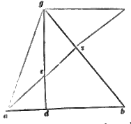

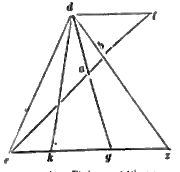


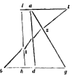
equidistans basi .bg.; et sint .de. et .bg. note, remanebit .ea. nota; cum tota .ab. sit nota. Et sumatur in .ab. punctus .z. notus; et copuletur .dz.; et emictatur in punctum .i. Dico, quod proportio .gi. ad .ia. erit nota; compleatur figura. Et quoniam trigonum .dze. simile est trigono .zat., est sicut .ez. ad .za.; quorum proportio est nota, ita nota .de. est ad .at. Quare .at. erit nota. Rursus quoniam similia sunt trigona .hzb. et .zat., est sicut .az. ad .zb., que sunt note, ita .at. nota est ad .bh. Quare .bh. erit nota posita est .bg.; ergo nota est tota .hg. Et quoniam similia sunt trigona .hig. et .iat. est sicut .hg. nota ad notam .at., ita .gi. ad .ia.: ergo proportio .gi. ad .ia. est nota, ut oportebat ostendere. Rursus sit trigonum notum .gab., cuius cathetus sit .gd.; et sumatur in ipso punctus notus .e.; et per puncta quidem .ae. protrahatur linea .aez. Dico quidem, quod proportio .bz. ad .zg. erit nota: protrahatur itaque linea .gi. equidistans linee .ab.; et producatur .az. in .i., et erunt trigona .aed. et .ieg. sibi inuicem similia. Quare est sicut .de. ad .eg., ita .ad. ad .gi.; erit itaque nota .gi., cum nota sit .ad.; ad quam .gi. proportionem habet recta .ab., sicut .bz. ad .zg.: ergo proportio .bz. ad .zg. est nota; quod oportebat ostendere.
Et si punctus, per quem transierit linea ab angulo nequaquam in catheto fuerit, ut in trigono .dez., in quo datus est punctus .a. in lineam .dg., que non est cathetus, per quem punctus transit linea .eab.; et sit nota proportio .ga. ad .ad., nec non et sit nota .ge. Dico quidem, proportionem .zb. ad .bd. notam esse: eisdem dispositis. Compleatur quidem figura; et quoniam est sicut .ga. nota ad .ad. notam, ita .eg. nota ad .di. Quare .di. nota erit; et est sicut .ez. nota ad notam .di., ita .zb. ad .bd.: ergo proportio .zb. ad .bd. nota est, ut oportebat ostendere. Et si proportio sectionum linee transeuntis per punctum .a. datum, que sit equidistans catheto, nota fuerit que linea terminata sit ab una parte super basem in puncto .g., et ab alia super lineam .di. in puncto .t., ut in hac alia cernitur figura. Dico iterum, proportionem .zb. ad .bd. notam esse. Quoniam simile est trigonum .eag. ei quod est .ait., est sicut .ga. ad .at., ita .eg. ad .ti.: protrahatur quidem in trigono .dez. cathetus .dk., et erit .dt. equalis .gk.; quia paralilogramum est quadrilaterum .dg. Quare si addatur linee .ti. equalis linee .gk., scilicet .td., erit nota tota .di.: et quoniam est sicut .ez. ad .di., ita .zb. ad .bd. Quare proportio .zb. ad .bd. nota est, ut prediximus. Et si punctus datus infra trigonum fuerit inter cathetum, et angulum, a quo per punctum extenditur linea ad latus subtendens ipsum angulum; similiter sectiones illius lateris note erunt. Sitque in trigono .abg., cuius cathetus est .ad. datus, punctus .e.; et a puncto .b. per .e. ducta est linea .bez.
Dico iterum, sectiones .gz. et .za. note erunt: protrahatur per punctum .a. linea .it. equidistans linee .bg.; et expleatur linea .bt., et per punctum .e. equidistans catheto .ad. protrahatur .hi.; et sit nota proportio .he. ad .ei.; et sint nota latera trigoni .abg., nec non et linea .bh. sit nota: et quoniam nota sunt latera trigoni .abg., notus erit et casus .bd.; de quo si extrahatur .bh. nota, reliqua .hd. nota erit. Quare et .ia. nota est, cum sit equalis .hd. propter .id. paralilogramum; et quia trigona .beh. et .eit. similia sunt, est sicut .he. ad .ei., ita .bh. ad .it.; ergo nota erit .it.; de qua si auferatur .ia., remanebit .at. nota. Et quoniam est sicut .bg. ad .at., ita .gz. ad .za. Ergo sectiones .gz. ad .za. note erunt, ut prediximus. Similiter si per punctum datum infra trigonum a puncto dato in uno laterum trigoni linea protrahatur usque ad unum. Ex
f. 0056 · p. 49

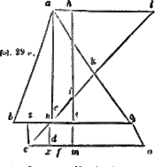

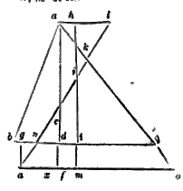
lateribus trigoni inuenietur proportio sectionis illius lateris. Exempli causa: in trigono .bdg. sit datus punctus, punctus notus .e. in base .gd.; et infra trigonum sit datus punctus .a. Similiter notus in linea .zk., que est equidistans catheto .bi.; et per puncta .ea. linea protrahatur .et. Dico, proportionem .dt. ad .tb. notam esse: compleatur figura. Et quoniam linea .zk. equidistans est catheto .bi., et .bk. est equidistans .iz.; ergo equalis est .bk. recte .iz. et .zk. catheto .bi.: que cum sit nota, eritque nota .zk. et .za. nota est, remanet .ak. nota: et quoniam est sicut .za. ad .ak., ita .ez. ad .kh. Ergo .kh. est nota: cui si addatur .kb., scilicet .zi., que nota esse ponitur, erit .bh. nota. Et quoniam similia sunt trigona .etd. et .tbh., est sicut .ed. ad .bh., ita .dt. ad .tb.; quod oportebat ostendere. Item sit trigonum .abg., cuius .ab. sit .13., et .bg. 14., et .ag. 15.; cuius cathetus .ad. est .12.; et summatur punctus .d. extra trigonum, a quo ducatur recta .az. equidistans catheto .ad.; et sit .ez. 2., et .zb. 1.; quare .zd. erit .4. : et sumatur iterum infra trigonum punctus .i.; et sit .it. 3.; et sit equidistans catheto .ad.; et sit .tz. 9.; et per puncta .ei. protrahatur linea .eik. Dico quod proportio .gk. ad .ka. est nota : protrahatur linea .al. equidistans basi .bg.; et emictetur .ek. in puncto .l., et .i. in punctis .h. et .m.; et sit .tm. equalis .ez.; et copuletur .em.; et quoniam recte .ez. et .it. equidistantes sunt catheto .ad., erit recta .tm. equidistans recte .ze., et sunt equales sibi inuicem, erit recta .em. equalis et equidistans recte .zt.: ergo .em. est .9.; et est equidistans recte .al.; et .th. est .12., cum sit equalis .ad.: tota ergo .mh. est .14.: est enim .mi. 5., remanet .ih. 9.; est ergo sicut .mi. ad .ih., ita .em. ad .hl.; hoc est sicut .5. est ad .9., ita .9. est ad .hl.; ergo .hl. est 1/5 16. Quare tota .al. est 1/5 21. Item quia equidistans est .ez. recte .ti., similia sunt trigona .enz. et .int. Quare est sicut .ti. ad .ez., ita .tn. ad .nz. Quare .tn. est 2/5 5. Vel aliter: quia trigona .nit. et .lih. sunt similia sibi inuicem, est sicut .ti. ad .ih., hoc est sicut .3. est ad .9., ita .nt. est ad .hl.; ergo .nt. est tertia ex .hl., scilicet 2/5 5.: cui si addatur .tg., erit .ng. 2/5 9.; et est sicut .ng. ad .al., ita .gk. ad .ka.: est enim .al. 1/5 21, que sunt quinte .106., et in .gn. sunt quinte .47.; ergo sicut .47. est ad coiunctum de .47. et de .106., scilicet ad .153., ita .gk. est ad .ga., scilicet ad .15.: quare est sicut .47. ad tertiam de .153., scilicet ad .51., ita .gk. est ad tertiam de .15., scilicet ad .5. Quare si multiplicauerimus .5. per .47., et summam diuiserimus per .51., exibunt 1/3 10/17 4. pro linea .gk. Reliquum quidem est usque in .15., scilicet 2/3 6/17 10. remanebit pro .ka. Aliter emictantur linee .em. et .ag. in .o., erit sicut .eo. ad .al., ita .ek. ad .ka.: per hanc quidem proportionem inueniemus .ak., et tunc habebimus .kg.; quod oportebat ostendere.
Nam notitiam ex .go. et ex .oe. habebitur pro premissa; quia trigonum .agd. simile est trigono .afo. Item si notitiam puncti .c., per quem linea .el. secat, cathetum .ad. habere uolumus; quia trigonum .ncd. est simile trigono .lca., est sicut .nd. ad .al., scilicet sicut due quinte sunt ad se, et ad quintas .106., scilicet sicut 2 sunt ad .106., ita .dc. est ad .da. Quare .dc. est 2/9. unius integri, remanet .ca. 7/9 11. Vel si protraxerimus cathetum .nx., erit sicut .ex. ad .xn., ita .nd. ad .dc.: est enim .ef. equalis .dz., et .dn. equalis .fx. Quare .ex. nota est.
Rursus sit .ge. uice .ez. in hac alia figura, et sit 2; Latera uero trigonj et cathetus, nec non et linea .ti. sint ubi prediximus; et sit angulus .egt. rectus. Quare equidistans erit rectis .it. et .ad.: et protrahatur per puncta .ei. linea .ef. Volumus ergo
f. 0057 · p. 50

scire sectiones linearum .gb. et .ad., nec non et .ab. Emictatur quidem linea .ef. in puncto .c., et linea .ti. in puncto .l.; et copuletur .cal.; et sit equidistans linee .bg.; eritque ut .eg. ad .ti., ita .gz. ad .zt. Quare erit sicut .eg. et .ti. ad .ti., hoc est sicut .5. ad .3., ita .gt. ad .zt.: ergo .zt. erit 2/5 2., cum .gt. sit .4. Item est sicut .ti. ad .il., ita .zt. ad .tc. Quare .lc. est 1/5 7; de qua dempta .la., remanet .ac. 1/5 2. Item est sicut .td. ad se et ad .ac., ita .dh. ad .da. Quare .dh. est 1/4 9, remanet .ha. 3/4 2. Rursus quia est sicut .zb. ad se et ad .ac., ita .bf. ad .ba.; erit ergo .bf. 3/73 11; reliqua .fa. 70/73 1.
In trigono orthogonio notorum laterum protrahatur extra trigonum latus subtendens angulum rectum per longitudinem notam; et a termino ipsius linee ad angulum rectum recta producatur, erit etiam ipsa linea nota. Exempli causa: sit trigonum orthogonium .abc. notorum laterum, habens angulum .abc. rectum; et emittatur latus .ac. extra trigonum in puncto .d.; et sit tota .ad. nota; et a puncto .d. ad punctum .b. protrahatur recta .bd. Dico, lineam .db. notam esse; quod sic probatur. Protraham rectam .ab. secundum rectitudinem in infinitum per punctum .e.; et per punctum .d. protraham rectam .de. equidistantem linee .bc.; et erit angulus .aed. rectus; cum sit equalis angulo .abc.: quia cum in duabus rectis equidistantibus recta incidit, erit interior angulus equalis exteriori et opposito. Nam in equidistantibus .bc. et .ed. recta incidit .ae.; quare angulus .aed. equalis est angulo .abc.. propter eadem ergo et angulus .ade. equalis angulo .acb.; et angulus qui ad .a. est comunis. Quare trigona .abc. et .aed. equiangula sunt, et sibi inuicem similia.
Similia uero trigona circa equales angulos latera habent proportionalia. Quare est sicut .ac. ad .cb., ita .ad. ad .de.: permutatim ergo erit sicut .ad. nota ad .ac. notam, ita .ed. ad .bc. notam. Quare recta .ed. erit nota. Similiter est sicut .ad. ad .ac., ita .ae. ad .ab. notam. Quare recta .ae. erit nota: de qua si auferatur recta .ab. nota, remanebit recta .be. nota; cuius quadratum si addatur cum quadrato linee .de., egredietur quadratum linee .bd. notum: et sic ostenditur, lineam .bd. esse notam, ut predixi. Ex hac quidem figura egreditur solutio subscripte questionis mihi proposite a quodam ueronense. qui proposuit, arborem quamdam erectam esse prope ripam cuiusdam fluminis; et fuit longitudo arboris peduum .40.: quam longitudinem pono lineam .bg.; et spatium, quod erat a pede arboris usque ad flumen, posuit esse pedum .5.; quod spatium posui lineam .bc.; et fuit in arbore .bg. acceptus punctus quidam .a.; et fuit .ba. 10. pedum; et in puncto .a. secta fuit arbor, et cecidit superior pars .ag., que erat .30. pedum super lineam .ad. tangens punctum .c.; et fuit linea .ad. 30.: petijt quanta esset quantitas linee .db. egredientis a puncto summitatis arboris usque ad punctum pedis ipsius. Vnde cum uellem hanc questionem soluere, intellexi figuram suprascriptam; et aggregaui quadrata linearum .ba. et .bc., hoc est .100. et .25., et habui .125. pro quadrato linee .ac.: et quia erat sicut .ad. ad .ac., ita .ed. ad .bc., fuit sicut quadratum linee .ad. ad quadratum linee .ac., hoc est sicut .900. ad .125., ita quadratum linee .ed. ad quadratum linee .bc., quod est .25. Sed proportio de .900. ad .125. est in minimis numeris sicut .36. ad .5.; ergo est sicut .36. ad .5., ita quadratum linee .ed. ad .25.: permutatim ergo fuit .36. ad quadratum linee .ed., sicut .5. ad .25. Sed .5. de .25. est quinta pars; quare .36. fuit 1/5. quadrati linee .ed. Quare multiplicaui .36. per .5., et habui .180. pro quadrato linee .ed.: quod quadratum extraxi ex quadrato linee .ad., scilicet de
f. 0058 · p. 51
.900., remanserunt .720. pro quadrato linee .ae.: uel aliter quia est sicut .ad. ad .ac., ita .ae. ad .ab.: fuit ergo sicut .36. ad .5., ita quadratum linee .ea. ad quadratum linee .ba., hoc est ad .100.: quare permutatim est sicut .5. ad .100., ita .36. ad quadratum linee .ae. Quare multiplicanda sunt .36. per .20.; quia .5. sunt 1/20. de .100.; et habentur similiter .720. pro quadrato linee .ae.; ergo .ae. fuit radix de .720.: de qua extraxi lineam .ab., que est .10., remansit mihi radix de .720. minus .10. pro linea .eb.: quam multiplicaui in se, et habui .820. minus radice de .288000. pro quadrato linee .eb.; cui addidi quadratum linee .ed., quod est .180., et habui .1000. minus radice de .288000. pro quadrato linee .bd. Quare .bd. est radix de .1000. minus radice de .288000. Et ut hec reducerem ad numerum ratiocinatum, accepi radicem de .288000., quam inueni esse 2/3 536. minus 1/90.; quam etiam extraxi de .1000., remanserunt 31/90 463.: de quibus etiam accepi radicem, et habui 1/2 21., et unam quadragesimam unius pedis pro quantitate linee .bd. Nec etiam pretermictendum est demonstrare uiam habendi quadratum linee .eb., que recisum uel abscisio, seu residuum nuncupatur; cum sit differentia, que est inter duas lineas potentia solum commensurabiles, scilicet inter .ae. et .ab. rectas; quarum .ae. est radix numeri ratiocinati, scilicet de .720., et .ab., que est .10., est numerus. Et quoniam recta .ae. diuisa est in duo in puncto .b. Quadrata linearum .ae. et .ab. equantur duplo multiplicationis .ab. in .ae., et quadrato linee .eb., ut superius demonstratum est: ergo si ex quadratis linearum .ae. et .ab., scilicet ex .720. et ex .100., hoc est de .820. auferatur duplum multiplicationis ex .ab. in .ae.; quod duplum est equale .20. radicibus de .720.; que etiam equantur uni radici numeri prouenientis ex multiplicatione quadrati de .20., hoc est de .400. in .720.; et qui numerus est .288000., remanebunt .820. minus radice de .288000., ut superius demonstraui. Rvrsus si in trigono .abg. ab angulis .gb. egrediantur recte .be. et .gd. se inuicem secantes super punctum .z.; et sit nota proportio ex .ge. ad .ea., et ex .bd. ad .da., erunt utique note proportiones .bz. ad .ze. et .gz. ad .zd. Sed antequam hec demonstrare possimus, oportet nos tractare de compositione proportionum ex duabus, uel pluribus proportionibus. Nam illa proportio composita dicitur, que prouenit ex multiplicatione omnium antecedentium ad multiplicatum omnium consequentium duarum, uel plurium proportionum. Verbi gratia: ex proportione, quam habent .2. ad .3., et ex ea quam habent .4. ad 5 componitur proportio ex .8. ad .15.; cum ex multiplicatione de .2. in .4. prouenient .8.; ex .3. in .5. uenient .15. Item ex proportione quam habent .2. ad .3. et .4. ad .5. et .6. ad .7. componitur proportio quam habent .48. ad .105.: cum ex multiplicato omnium antecedentium prouenient .48., scilicet ex .2. in .4. productam in .6.; et ex multiplicato consequentium, scilicet ex .3. in .5. ducto in .7., ueniunt .105.; sed proportio de .48. ad .105. est illa in minimis numeris, quam habent .16. ad .35. Et est intellectus talis compositionis, quod inter .16. et .35. cadunt tres numeri in proportionibus suprascriptis, uidelicet sicut .2. ad .3., ita .16. ad .24.; et sicut .4. ad .5., ita .24. ad .30.; et sicut .6. ad .7., ita .30. ad .35. Ex his enim procedit compositio proportionis duarum quantitatum, uel duorum numerorum: cum inter ipsas quantitates eiciatur quantitas aliqua, erit tunc proportio prime quantitatis ad secundam composita ex proportione, quam habet prima quantitas ad eiectam, et ex ea quam habet quantitas eiecta ad secundam. Cuius exemplum ponamus in numeris: sint .7. eiecta inter .3. et .10. Dico quod proportio de .3. ad .10. componitur ex ea quam habet .3. ad .7., et ea quam
f. 0059 · p. 52
habent .7. ad .10. Nam multiplicatio ex antecedentibus ad multiplicatum ex consequentibus fit sicut .3. ad .10.; quam si multiplicauerimus insimul antecedentes, scilicet .3. per .7., prouenient .21.: et si multiplicauerimus insimul consequentes, scilicet .7. per .10., prouenient .70.: proportio quidem de .21. ad .70. est proportio septime partis de .21. ad septimam partem de .70.; et est illa quam habent .3 ad .10., ut diximus. Similiter inter duas quantitates possunt eici due, uel plures quantitates; et erit proportio ipsarum duarum quantitatum composita ex ipsis proportionibus: ut si inter .3. et .10. eiciantur .5. et .6. et .7., erit proportio de .3. ad .10. composita ex proportione, quam habent .3. ad .5., et ex eis quam habent .5. ad .6., et .6. ad .7., et .7. ad .10.
His optime intellectis, oportet nos etiam demonstrare, quomodo et ex proportione data extrahatur proportio aliqua: ut si uolueris ex proportione quam habent .7. ad .8., extrahere proportionem quam habent .6. ad .5.; multiplicabis antecedens proportionis, de qua extrahenda est proportio, per consequens proportionis extrahende, scilicet .7. per .5., prouenient .35. pro antecedente proportionis residue: et multiplicabis antecedens extrahende proportionis per consequens, de qua extrahitur proportio, scilicet .6. per .8., erunt pro consequente residue questionis: ergo si ex proportione quam habent .7. ad .8. auferatur proportio de .6. ad .5., remanebit utique proportio de .35. ad .48. Vnde si addiderimus proportiones quam habent 6 ad 5, et 35 ad 48, proueniet proportio quam habent .210. ad .240.; et est ipsa eadem quam habet trigesima pars unius ad trigesimam partem alterius, scilicet .7. ad .8. His itaque intellectis, oportet nos ostendere, antequam redeamus ad propositum, quomodo proportio quam habet in suprascripto trigono .abg. recta .ga. ad .ea. componatur ex proportione, quam habet tota reflexa .gd. ad partem suam .zd., et ex proportione quam habet .bz. ad .be.; et est ista demonstratio, que uocatur cata coniunctum: a puncto quidem .e. protrahatur recta .ei. equidistans linee .gd., ut in hac alia ostenditur figura; et erit trigonum .aie. simile trigono .adg. Quare erit sicut .ga. ad .ae., ita .gd. ad .ei.: eiciatur itaque recta .zd. inter .gd. et .ei.; et erit per ea, que supra diximus, proportio .gd. ad .ei. composita ex proportione .gd. ad .dz. et ex .dz. ad .ei. Sed proportio .zd. ad .ei. est sicut proportio .bz. ad .be., cum simile sit trigonum .bzd. trigono .bei., cum .zd. equidistet recte .ei.: ergo proportio .gd. ad .ei. componitur ex proportione .gd. ad .dz. et .bz. ad .be. Sed proportio .gd. ad .ei. est sicut proportio .ga. ad .ae.; ergo proportio .ga. ad .ae. componitur, ut diximus, ex proportione .gd. ad .dz. et ex proportione .bz. ad .be. Dico iterum quod proportio .ga. ad .ae. componitur ex proportione .gd. reflexa ad reflexam .be., et ex ea quam habet .bz. ad .zd.; quoniam equalis est proportio .gd. ad .ei. proportioni .ga. ad .ae. Si inter proportionem quam habet .gd. ad .ei. eiciatur recta .be., erit proportio recte .ga. ad .ae. composita ex proportione quam habet .gd. ad .be., et .be. ad .ei. Sed proportio .be. ad .ei. est sicut proportio .bz. ad .zd.; ergo proportio .ga. ad .ae. componitur ex proportione .gd. ad .be., et ex .bz. ad .zd.; quod oportebat ostendere.
Nam semper contingit, cum aliqua proportio composita fuerit ex duabus proportionibus, erit etiam ipsa eadem proportio composita ex proportione antecedentium ad permutatos consequentes. Verbi gratia: proportio de .8. ad .15. est composita ex proportione quam habet .2. ad .3., et .4. ad .5.; erit etiam proportio de .8. ad .15. composita ex permutatis proportionibus, sicut ex ea quam habet .2. ad .5., et ex ea quam habet
f. 0060 · p. 53
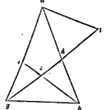

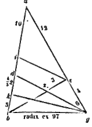
.4. ad .3.; quia multiplicatio de .3. in .5. equa est multiplicationi de .5. in .3.; et sunt .3. et .5. in utraque compositione consequentes; et .2. et .4. sunt antecedentes. Simili quoque modo ostendetur, quod proportio .ba. ad .ad. componitur ex proportione .be. ad .ez.; et ex ea quam habet .gz. ad .gd.: si protraxerimus infra trigonum a puncto .d. lineam equidistantem linee .be.; et sic ex proportione quam habet .ga. ad .ae. ostensa est una concubinatio compositarum proportionum. Rursus dico, quod proportio .bd. ad .da. componitur ex proportione .bz. ad .ze., et ex proportione .ge. ad .ga.; quod sic probatur: a puncto quidem .a. protrahatur recta .at. equidistans linee .be., ut in hac alia cernitur figura, que cata dicitur disiunctum; et emictatur recta .gd. usque ad punctum .t.; et quia equidistantes sunt recte .at. et .zb.; et in eis incidit recta .ab., equalis est angulus, qui sub .tad. angulo, qui sub .dbz.: propter eadem et angulus qui sub .atd. equalis est angulo, qui sub .dzb.; et anguli qui ad .d. cum sint a uertice sibi inuicem sunt equales: ergo equiangula sunt trigona .atd. et .dbz., et circa equales angulos habent latera proportionalia: quare erit sicut .db. ad .bz., ita .da. ad .at.: permutatim ergo erit sicut .bd. ad .da., ita .bz. ad .at.: eiciamus ergo rectam .ze. inter .zb. et .at.; erit tunc proportio .bz. ad .at., hoc est proportio .bd. ad .da. composita ex proportione, quam habet .bz. ad .ze., et ex ea quam habet .ze. ad .at., hoc est .ge. ad .ga.; cum simile sit trigonum .gez. trigono .gat.: ergo proportio .bd. ad .da. componitur ex proportione .bz. ad .ze., et .ge. ad .ga. Vel proportio .bd. ad .da. componitur ex proportione .bz. ad .ga., et ex proportione .ge. ad .ez.; quod sic ostenditur: inter .bz. et .at. eiciatur recta .ga., erit proportio quidem .bz. ad .at. composita ex proportione .bz. ad .ga., et ex proportione .ga. ad .at. Sed proportio .ga. ad .at. est sicut proportio .ge. ad .ez.; ergo proportio .bz. ad .at., hoc proportio .bd. ad .db. componitur ex proportione .bz. ad .ga., et ex proportione .ge. ad .ez.; quod oportebat ostendere. Et sic ostensa est una combinatio compositionis proportionis .bd. ad .da. Similiter ostendetur, quod proportio .ge. ad .ea. componitur ex proportione .gz. ad .zd., et ex proportione .bd. ad .ba.: si protraxerimus a puncto .a. equidistantem linee .gd., et copulauerimus eam cum linea .be. NVNC reuertamur ad propositum; et ostendam, quod si proportiones .ge. ad .ea., et .bd. ad .da. fuerint note; eruntque utique proportiones .bz. ad .ze. et .gz. ad .zd. note. Cum itaque proportio quam habet .ge. ad .ea. nota componatur ex proportione quam habet .gz. ad .zd., et ex proportione quam habet .bd. ad .ba. Si ex proportione quam habet .ge. ad .ea. auferatur proportio .bd. ad .ba., que est nota, remanebit nota proportio .gz. ad .zd. Similiter si ex proportione quam habet .bd. ad .da. auferatur proportio .ge. ad .ga., remanebit nota proportio .bz. ad .ze.: que omnia ut clarius uideantur, ponamus lineam .ag. esse 16, et lineam .ab. esse .15.; et sit .ge. tertia pars ex .ea.; et .bd. sit dimidium ex .da.; erit ergo proportio .ge. ad .ea. sicut 1 ad 3: de qua si extrahatur proportio .bd. ad .ba., scilicet ea quam habet 1 ad 3, remanebit proportio .gz. ad .zd., sicut .3. ad .3.; quare equalis est recta .gz. recte .zd.; et sic proportio .gz. .zd. inuenta est nota. Similiter si ex proportione quam habet .1. ad .2., scilicet .bd. ad .da., extraxerimus proportionem quam habet .1. ad .4., scilicet .ge. ad .ga., remanebit proportio, quam habet .2. ad .1., proportione .bz. ad .ze. Et quamuis proportiones sectionum reflexarum sint note, tamen longitudines ipsarum reflexarum habere non possumus nisi per basis notitiam; quam ponamus esse radicem de .97.; et studeamus super latus
f. 0061 · p. 54
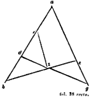
.ag. inuenire casum perpendicularis cadentis super eam ab angulo .b.; et inueniemus ipsum esse, per ea que demonstrata sunt inuentione casuum, punctum .e.; quare recta .be. cathetus est super rectam .ag. Orthogonia ergo sunt trigona .beg. et .eba.: quare si quadratum lateris .eg., quod est .16., auferatur ex quadrato linee .bg., scilicet de .97., remanebunt .81. pro quadrato linee .be.; quare recta .be. est .9.: et quia .bz. ad .ze. est sicut .2. ad .1.; si coniungerimus proportionem .bz. ad .ze., inueniemus ipsam sicut .3. ad .1. Quare recta .be. tripla est recte .ze.: quare cum .be. sit .9., erit .ze. 3, et .zb. erit .6. Item ut inueniamus longitudinem recte .gd., faciemus cadere cathetum a puncto .g. super lineam .ab., que sit linea .gk.; et erit notus casus .bk. per ea que demonstrauimus in inuentione casuum: quare .kd. remanebit nota, et erit 4/5 2.: unde si ex quadrato linee .gb. extraxerimus quadratum linee .bk., que est 1/5 2., remanebunt pro quadrato linee .gk. 4/25 92.; quibus si addiderimus quadratum linee .dk., scilicet .8. minus 4/25., uenient .100. pro quadrato linee .gd.; ergo linea .gd. est .10.: quare quelibet rectarum .gz. .zd. est .5., cum ambe sibi inuicem inuente sint equales. Iterum sine base reiteretur figura trigoni supradicti, dico quod proportio .gd. ad .dz. componitur ex duabus proportionibus linearum .ga. ad .ae., et .be. ad .zb.; quod sic probatur. In puncto quidem .z. protraham lineam .zi. equidistantem linee .ga.; et erit trigonum .dzi. simile trigono .dga.; quare proportionaliter est sicut .gd. ad .dz., ita .ga. ad .zi.: et eiciatur .ae. inter .ga. et .zi.; et erit proportio .ga. ad .zi. composita ex proportione .ga. ad .ae., et ex .ae. ad .iz. Sed proportio .ea. ad .zi. est sicut proportio .eb. ad .bz., cum simile sit trigonum .bzi. trigono .bea.; ergo proportio .ga. ad .zi., hoc est proportio .gd. ad .dz., componitur ex proportione .ga. ad .ae., et ex proportione .eb. ad .bz.; quod oportebat ostendere. Ex hoc ergo manifestum est, quod quando proportio duarum quantitatum componatur ex proportione tertie quantitatis ad quartam, et ex proportione quinte quantitatis ad sextam; tunc proportio tertie quantitatis ad quartam erit composita ex proportione prime quantitatis ad secundam, et sexte ad quintam: fuit enim proportio prime quantitatis .ag. ad secundam .ae. composita ex duabus proportionibus, scilicet ex ea quam habet tertia quantitas .gd. ad quartam .zd., et ex proportione quinte .bz. ad sextam .be.: modo inuenimus, proportionem tertie quantitatis .gd. ad quartam .zd. compositam esse ex proportione prime quantitatis .ga. ad secundam .ae., et ex proportione sexte quantitatis .be. ad quintam .bz. Ostendam rursus in eadem figura, quod proportio .gd. ad .dz. componitur ex proportione .ga. ad .zb., et ex proportione quam habet .be. ad .ae.; quod sic probatur: est enim sicut .gd. ad .dz., ita .ga. ad .zi.: adiaceat quidem recta .zb. inter .ea. et .zi.; et erit proportio .ga. ad .zi. composita ex .ga. ad .zb., et ex .zb. ad .zi.: si proportio .bz. ad .zi. est sicut proportio .be. ad .ea.; ergo proportio .ga. ad .zi., scilicet proportio .gd. ad .dz. componitur ex proportione .ga. ad .bz., et ex proportione .be. ad .ea., ut prediximus: et sic in hac figura ostensa est alia combinatio proportionum. Sunt enim decem et octo combinationes proportionum, que ostendi possunt in hac figura cata, et quas etiam in libro meo in regula baracti demonstraui. Sed quia ex his colligitur tantum scientia habendi notitiam alicuius ignote quantitatis per notitiam quinque quantitatum notarum; ex quibus sex quantitatibus proportio unius ad aliam componatur ex duabus proportionibus reliquarum quatuor quantitatum, non curo reliquas combinationes
f. 0062 · p. 55ostendere. Sed qualiter ad notitiam quantitatis ignote per quinque quantitates notas uenire debeamus, ex ordine cum suprascriptis numeris demonstrare curaui. Sit itaque proportio prime quantitatis .a. ad secundam .b. composita ex proportione tertie quantitatis .g. ad quartam .d., et ex proportione quinte .e. ad sextam .z.; et sit ignota quantitas .a.: et quia proportio .a. ad .b. prouenit ex proportione multiplicati antecedentium duarum reliquarum proportionum ad multiplicatum duarum consequentium earumdem, erit multiplicatio multiplicati ipsarum antecedentium in quantitatem .b. equalis multiplicationi ipsarum consequentium in quantitatem .a. Quare si multiplicauerimus multiplicationem ex .e. in .g., que sunt quantitates antecedentes, per quantitatem .b.; et diuiserimus summam per factum ex multiplicatione .d. in .z., que sunt consequentes, prouenit utique quantitas .a. nota. Verbi gratia: sit .a. 16., et .b. sit .12., et .g. sit .10., et .d. sit .5., et .e. sit .6., et .z. sit .9.; et multiplicentur .6. per .10., scilicet .e. in .g., uenient .60.; quibus ductis in .b., scilicet in .12., prouenient .720. Similiter si multiplicauerimus .9. per .5.; quod totum per .16., prouenient .720.: ergo cum equalis sit multiplicatio ex .e. in .g. ducta .b. multiplicationi .z. in .d. ducta in .a.; si multiplicationem ex .z. in .d. diuiserimus factum ex multiplicatione ex .e. in .g. ducta in .b., scilicet .720. per .45., prouenient utique .16. pro quantitate .a. Sed si quantitas .b. ignota; et relique quinque quantitates sint note; diuiserimus .720., que proueniunt ex .9. multiplicatis in .5.; quod totum in .16. per .60., que proueniunt ex .6. multiplicatis in .10., prouenient .12. pro quantitate .b. Sed sit ignota quantitas .g.; diuidemus iterum .720., que proueniunt ex .a. in .d. et in .z. per factum ex .b. in .e., scilicet per .72., prouenient .10. pro quantitate .g. Sed sit ignota tantum quantitas .d.; diuidemus iterum .720., que proueniunt ex .e. ducta in .g.; quod totum in .b. per factum ex .a. in .z., scilicet .144., prouenient .5. pro quantitate .d.
Rursus sit tantum ignota quantitas .e.; diuidemus iterum .720. que proueniunt ex .z. in .d. et in .a. per factum ex quantitatibus .bg., scilicet per .120., prouenient .b. pro quantitate .e. Ad ultimum sit ignota quantitas .z.; et relique quantitates sint note; diuidentur iterum .720., que proueniunt ex .e. in .g. ducta in .b. per factum ex .a. in .d., scilicet per .80., prouenient .9. pro quantitate .z. Et notandum, quod quantitates .adz. uocantur societates prime. Relique uero tres quantitates, scilicet .bge., uocantur societates secunde. Componitur quidem proportio unius cuiuscumque quantitatis prime societatis ad unamquamque secunde ex duabus proportionibus reliquarum quatuor quantitatum, secundum unam combinationem, uidelicet proportio quantitatis .a., que est ex societate quantitatis prime ad quantitatem .b., que est ex societate secunde componitur ex duabus proportionibus reliquarum quatuor quantitatum, scilicet ex proportione, quam habet .g. ad .d., et ex ea quam habet .e. ad .z., secundum quod demonstratum est: uel componitur proportio .a. ad .b. ex proportione quam habet .g. ad .z., et .e. ad .d. Item componitur proportio quantitatis .a. ad quantitatem .g. ex proportionibus .b. ad .d. et .e. ad .z. Vel ex proportione quam habet .b. ad .z. et .e. ad .d. Componitur etiam proportio quantitatis .a. ad quantitatem .e. ex proportionibus .b. ad .z. et .g. ad .d., uel ex proportionibus .b. ad .d. et .g. ad .z. Simili quoque modo componitur proportio quantitatum .dz., que sunt ex societate prime ad tres quantitates reliquas ex proportionibus quatuor reliquarum quantitatum; et sic sunt nouem
f. 0063 · p. 56proportiones composite ex tribus quantitatibus societatis prime ad tres quantitates societatis secunde: eodemque modo egredientur alie nouem compositiones proportionis ex quantitatibus societatis secunde ad tres societates quantitatis prime; et quelibet ipsarum compositionum proueniet combinata; et sic erunt inter omnes decem et octo combinationes proportionum in ipsis sex quantitatibus: et quanuis mutentur proportiones, tantum non uocantur societates predicte: quare multiplicatum unius cuiusque societatis erit 720, ut superius inuenimus; et est illud quod procedit ex antecedente composite proportionis in consequentes compositionum. Non enim aliqua ex sex quantitatibus predictis proportionem compositam habere poterit ad aliquam ex sua societate ex proportione reliquarum quatuor quantitatum, uidelicet proportio quantitatis .a. ad quantitatem .d., uel ad quantitatem .z. componi non potest ex proportionibus reliquarum quatuor quantitatum; nec etiam proportio quantitatis .d. ad quantitatem .z.; uel ad quantitatem .z. componitur; neque proportio quantitatis .z. ad quantitatem .d.a. componi poterunt ex reliquis quatuor quantitatibus.
Similiter non componetur proportio quantitatum .b.g.e. inter se, cum sint unius societatis; et sic erunt duodecim proportiones in his sex quantitatibus, que non componentur ex duabus proportionibus reliquarum quatuor quantitatum. His itaque explicatis, ueniamus ad mentionem quadrilaterorum camporum.
Incipit Pars Secunda Tertie Distinctionis de Campis Quadrilateris¶
Versio Anglica: Quadrilaterals & Polygons (pp. 56–87) · Commentarius: Notae ad Quadrilateros
Incipit pars secunda tertię distinctionis de mensuratione quadrilaterorum.
AREE quidem camporum quadrilaterorum rectos angulos habentium colliguntur, secundum quod superius in alia distinctione docuimus. Qui cum habent latera equalia, multiplicatur unum ex lateribus in se; et cum habent latera inequalia, multiplicantur longitudines ipsorum per latitudines; et sic habemus embadum ipsorum. Reliqua uero quadrilatera in quatuor differentias diuiduntur; in prima quarum sunt rumbi, in secunda rumboides, in tertia capita abscissa, in quarta sunt diuersilatera, quorum nullum laterum reliquis equidistat; quorum omnium mensurationes aperte in suo loco monstrabuntur. Sed antequam ad dimensiones ipsorum quadrilaterorum ueniamus, quedam super prescriptis quadrilateribus, que ad notitiam huius artis animum introducunt, proposui demonstrare. Que pertinent ad solutionem sex regularum, que ueniunt ex tribus essentijs, que sunt in numeris. Sunt enim numeri et fractiones eorum, aut radices quadratorum, aut quadrati, aut numeri simplices. Quando numeri in se multiplicantur radices dicuntur facti ex multiplicatione quadrati, seu census appellantur. Cum autem numeri non habent respectum ad radices uel ad quadratos numeros, tunc simpliciter numeri uocantur. Quare secundum hanc distinctionem omnis numerus est quandoque radix, uel quadratus, uel simplex. Nam ex hiis tribus essentijs tres regule simplices, totidemque composite proueniunt. Simplices enim sunt quando in questionibus arithmeticis uel geometricis inueniuntur, radices equari quadratis, uel numero quadrati, uel partes unius quadrati equari radicibus, uel numero. Vel cum numerus equatur radicibus, uel quadratis et econuerso. Composite quidem sunt quando inueniuntur, radices equari quadratis et numero, uel quadrati radicibus et numero, aut numerus radicibus et censibus. Quadratum autem quod radicibus equatur est ac si dicas. Quadratum equatur quatuor radicibus; radix ergo
f. 0064 · p. 57
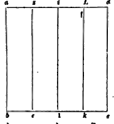
quadrati est .4.; et quadratum est .16., hoc est latus superficiei quadrate et equilatere et equiangule est .4.; et eius embadum est .16. Nam quot unitates sunt in unoquoque laterum ipsius, tot radices in eius embado continentur, ut in hoc quadrilatero .abcd. ostenditur, quod habet in unoquoque laterum perticas .4. Quare embadum eius equatur quatuor radicibus, quarum una est quadrilaterum .ae.; secunda .zt.; tertia .ik.; quarta quadrilaterum .lk.cd.: et si latus quadrati fuerit .5., equabitur radicibus; et erit quadratum .25. Et cum dicitur: quatuor quadrati equantur .24. radicibus, tunc unum quadratum equatur sex radicibus; et unaqueque radix est .6., et quadratus est .36.: et cum dicitur: medietas quadrati, siue census equatur quatuor radicibus, tunc census equabitur .8. radicibus; et erit census .64., et radix eius erit .8. Item quinta pars quadrati equatur tribus radicibus; ergo quadratum, scilicet embadum eius, equatur .15. radicibus. Quare embadum est .225., et latus quadrati est .15. Similiter quoque quod fuerit maius quadrato aut minus, ad unum reducendum est quadratum. Et eodem modo fit quando radices equantur censibus, inueniende sunt radices, que equantur uni censui. Item quando dicitur: quadratum equatur numero, ut dicamus perticis .36.; tunc embadum est .36., et eius latus est .6.: et cum quinque quadrata equentur .125., tunc quadratum est .25., et eius radix est .5.: uel cum quarta pars quadrati equetur secundum arthmetricam dragmis .16.; tunc census, scilicet quadratum, erit .64., et eius radix est .8.
Similiter omnis census augmentatus et diminutus ad unum reducendus est censum. Et eodem modo fit quando numerus equatur censibus. Radices uero que numeris equantur, est sicut si dicas: radix equatur quatuor; ergo radix est .4.; et census qui est ex ea est .16.: et sicut si dicas: sex radices equantur .30.; una igitur radix equatur .5.: et similiter si dicas: medietas radicis equatur .9.; ergo radix est .18.; et census qui est ex ea est .324. Radices siquidem, que equantur quadratis et numero sunt ac si dicas: .36. radices equantur tribus censibus et .105. dragmis; hoc .12. radices equantur uni censui, et dragmis .35.: et si dicas: .5. radices equantur dimidio censui, et dragmis .12.; hoc radices .10. equantur uni censui et .24. dragmis. Quadrata autem que equantur radicibus et numero sunt ac si dicas: tria quadrata equantur .12. radicibus et dragmis .36.; hoc unus census equatur .4. radicibus et .12. dragmis: et si dicas: quarta census equatur duabus radicibus et .12. dragmis; hoc est quadratus equatur octo radicibus et dragmis .48. Numerus quoque qui equatur quadratis et radicibus est ac si dicas: .78. dragme equantur duobus quadratis et .10. radicibus; hoc est unum quadratum et .5. radices equantur 39. Et si dicas: .32 equantur dimidio quadrati et sex radicibus; hoc est unum
f. 0065 · p. 58

quadratum, et duodecim radices equantur .64. dragmis: et sic semper debemus questiones redigere ad unum censum; et secundum illud quod proportionaliter ceciderit reductio plurium quadratorum, uel partes unius quadratj ad unum quadratum in eadem proportione reducende sunt radices et numeri, qui cum quadratis, uel contra eos proponentur, ut ueniamus ad notitiam quadratorum et radicum eorum, ut in sequentibus ostendemus. Si in quadrato quidem .abgd., quod in singulis lateribus habet perticas .10., dyametrum eius .ag., uel .bd. habere desideras, ipsius embadum, scilicet .100., duplica, erunt .200.; quorum radicem accipe, et habebis longitudinem unius dyametrorum. Verbi gratia: quoniam rectus est angulus, qui sub .abg. orthogonium est est, trigonum .abg.; quare multiplicatio lateris .ag. in se, quod recto subtenditur angulo, equatur duobus quadratis linearum .ab. et .bg. Sed quadratum lateris .bg. est embadum tetragoni .abgd.; et quadratum lateris .ab. equatur quadrato lateris .bg.; quare duo quadrata linearum .ab. et .bg. dupla sunt quadrato lateris .bg. Sed quadratum dyametri .ag. equum est quadratis linearum .ab. et .bg.; ergo quadratum dyametri .ag. duplum est quadrati lateris .bg.; sed quadratum lateris .bg. est area tetragoni .abgd.; ergo quadratum lateris .ag. duplum est embado tetragoni .abgd.; quod oportebat ostendere.
Et est id in quo census equatur numero, scilicet embadum equatur 100. Quare duplum embadi, scilicet quadratum dyametri, erit 200. Dico iterum, dyametrum .ag. equum esse dyametro .bd.; quoniam recta .bg. equa est recte .ad. Si comuniter accipiatur recta .ad., erunt due recte .ab. et .bg. equales duabus rectis .ba. et .ad.; et angulus .abg. equalis est angulo .bad.: quare dyametrum .ag. equum est dyametro .bd. Dico iterum quod dyamitri .ag. et .bd. se se inuicem secant per equalia super punctum .e. Quoniam sibi inuicem equales sunt recte .ad. et .bg.; et in eorum terminis copulate sunt recte .ab. et .gd., que sibi inuicem equantur; erunt siquidem equidistantes recte .ad. et .bg.: et quoniam in eis recte incidunt .bd. et .ag., equatur quidem angulus .adb. angulo .dbg.; et angulus .dag. angulo .agb.; reliquus .aed. reliquo .beg. est equalis. Quare trigonum .aed. trigono .beg. equatur; et recta .be. recte .ed. est equalis. Similiter et recta .ge. recte .ae. est equalis; ergo per equalia sese secant dyametri .ag. et .bd.; que oportebant ostendere. Nam si dyameter tetragoni dati fuerit radix ducentorum; et ignoraueris embadum, nec non et eius latus, accipe dimidium de .200., erunt .100., que habeas pro embado; et earum radicem, scilicet .10., habebis pro
f. 0066 · p. 59

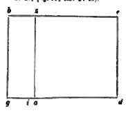
latere; hoc est duo quadrati equantur .200.: quare unum quadratum, scilicet embadum tetragonj, erit .100. Et si quadratum dyametri cum embado tetragonj fiant .300.; ergo tres quadrati equantur .300.; quare tertia pars eorum, scilicet .100., erit embadum. Relique quidem .cc. habebuntur pro quadrato dyametri; et radix embadi erit latus tetragoni. Et si embadum et quatuor eius latera faciunt .cxl.; et uis separare latera ab embado. Adiaceat tetragonum .ezit., et addatur ei superficies .ae. rectiangula; et sit .ai. in directu recte .it., et .be. in directu .ez.; et sit unaqueque rectarum .be. et .ai. .4. propter numerum laterum tetragonj; quare superficies .ae. equatur quatuor lateribus tetragonj .et., cum latus ipsius .ei. sit unum ex lateribus superficiei .ae.; et superficies quidem .et. continet embadum tetragonj .zi., nec non et quatuor eius latera; ergo superficies .za. est .140.; et hoc est illud quod diximus, uidelicet census cum quatuor radicibus equantur .140.; et est census tetragonum .et., quatuor eius radices sunt superficies .ae. Diuidatur quidem recta .ai. in duo equa super punctum .g.; et quoniam linea .ti. addita est linee .ai., erit superficies rectiangula .it. in .at. cum quadrato linee .gi. equa tetragono linee .gt. Sed superficies .it. in .at. est sicut superficies .zt. in .at., cum .it. equa sit ex .tz. Ergo superficies .zt. in .at. cum quadrato linee .gi. equatur quadrato linee .gt. Sed .zt. in .at. est superficies .za., que est .140.; quibus addito quadrato linee .gi., scilicet .4., reddunt .144. pro quadrato linee .gt.; quare .gt. est .12., scilicet radix de .144. Quare si ex .gt. relinquatur .gi., scilicet .2., remanebit .it. .10., quod est latus tetragoni .et.; cui embado, scilicet .100., si addatur quatuor eius latera, que sunt .40., erunt .140., ut oportet. Et sic fiat in omnibus questionibus, in quibus numerus equatur quadrato et radicibus, uidelicet super ipsum numerum addatur quadratum medietatis radicum, et summe radix inueniatur; ex qua tollatur medietas positarum radicum, remanebit radix quesiti census; que in se multiplicata faciet censum. Verbi gratia: dragme .133. equantur uni censui et duodecim radicibus. Quare si quadratum medietatis radicum, scilicet .36., addiderimus super .133., facient .169.; de quorum radice, scilicet de .13., extractis .6., scilicet medietas radicum, remanebunt .7. pro radice quesiti census; et census erit .49.
Item est tetragonum, ex cuius embado si tollantur quatuor eius latera, remanent .77. Adiaceat tetragonum .bd., et sumatur punctus .a. in .gd. rectam; et sit .ga. .4. perticarum; et per punctum .a. producatur recta .az. equidistans ubilibet rectarum .gb. et .de.: et quoniam .ga. est .4. superficies .ba.; quatuor latera, scilicet .4. radices ex tetragono .bd. continere necesse est. Quare si de tetraguno .bd. extrahatur quadrilaterum .ba., scilicet quatuor eius latera, remanebit superficies .zd. 77. Et quoniam due superficies .ba. et .zd. equantur tetragono .bd.; ergo census equatur radicibus et numero, hoc est quadratus .bd. equatur .4. suis radicibus et .77. Diuidaturque .ga. in duo equa. Et quoniam recta .ga. diuisa est in duo equa super punctum .i., et ei adiuncta est in directu recta .ad., erit multiplicatio .ad. in .gd. cum quadrato linee .ai. equalis quadrato linee .di. Sed multiplicatio .ad. in .dg. est sicut multiplicatio .da. in .de.; cum .de. equa sit linee .dg. Sed .da. in .de. est superficies .zd., que est .77.; ergo .da. in .de. facit .77.: quibus si addatur quadratum linee .ai., quod est .4., erunt .81. pro quadratu linee .di., cuius radix, scilicet .9., est linea .di.: cui si addatur linea .ig., habebitur .11. pro latere .dg. Quare embadum quadrati .bd. est undecies undecim,
f. 0067 · p. 60
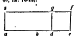

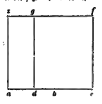
scilicet .121.; et quatuor eius latera, scilicet superficies .ba., est ba. est .44., remanet superficies .zd. 7., ut oportebat. Et sic faciendum est in omnibus questionibus, in quibus quadratum equabitur radicibus et numero; uidelicet super numerum addatur quadratum medietatis radicum; et de summa collecta accipiatur radix, eique addatur medietas radicum; et sic habebitur radix quadrati, que in se multiplicata faciet quesitum quadratum: ut si proponatur quod census equatur decem radicibus et .39. dragmis, addatur quadratum quinque radicum, scilicet .25. super .39., erunt .64.; super quorum radice, scilicet super .8., addatur medietas radicum, scilicet .5., et habebis .13. pro radice census; et census erit .169.; et eius decem radices sunt .130., que procreantur ex multiplicatione de .10. in 13. Item est tetragonum, cuius embadum si tollatur ex summa quatuor laterum ipsius, scilicet ex quatuor suis radicibus, remanebunt pertice .3. Adiaceat tetragonum .ge. habens in singulis lateribus minus de perticis .4.; et adiaceat .de. linea .da.; et sit tota .ae. 4; et diuidatur .ae. in duo equa super punctum .b.; et protrahatur recta .az. equidistans et equalis .dg.; et protrahatur .fg. in punctum .z.; et quoniam recta .ae. est 4, et .ef. est latus tetragoni .ge.: erit itaque .fe. in .ea., scilicet superficies .ze., equalis quatuor radicibus, scilicet lateribus tetragoni .ge.: ex quibus si tollatur tetragonum .ge., remanet superficies .ga. 3. perticarum. Sed tetragonum .ge., et superficies .ga. equantur superficiei .ze.; ergo quatuor radices equantur censui, et perticis tribus: oportet itaque ut inueniamus censum et eius radicem. Quoniam linea .ae., que est .4., diuisa est in duo equalia super punctum .b., et in duo inequalia super punctum .d., erit multiplicatio .ed. in .da. cum quadrato linee .bd. equalis quadrato linee .be., quod describitur a medietate linee .ae. Sed ex multiplicatione .ed. in .da. oritur superficies .ga., que est .3.; cum .dg. equalis sit .de.; ergo superficies .gd. in .da. cum quadrato linee .bd. equatur quadrato linee .be., qui est .4.; ergo quadratum .bd. est .1.; cuius radix, scilicet .1., si tollatur ex linea .be., remanebit de .1., que est latus tetragoni .ge.; cuius embadum, scilicet quesitus census, erit similiter .1. Et si medietas linee .ag. fuerit inter .de. super punctum .b., ut hac alia cernitur figura; adde super .eb., scilicet super .2., lineam .bd., et erit tota .de. 3., que est radix quadrati .ge. quesiti; et quadratum erit .9.; et superficies .ga. erit similiter .3., ut prediximus. Et sic fiat semper in omnibus questionibus, in quibus radices equentur quadrato et numero. Videlicet ex quadrato medietatis radicum tollatur numerus, et residuo inueniatur radix, que tollatur ex medietate dicta, uel addatur super eam, et habebis radicem quesiti quadrati. Vt in hac in qua proponitur, duodecim radices equari uni quadrato et .27. dragmis: medietas itaque radicum est .6., quorum quadratus est .36.; de quibus extractis .27., remanent .9.; quorum radix, scilicet .3., si extrahatur ex medietate radicum, remanebunt .3. pro radice quesita; et census erit .9.: uel si .3. addantur super .6., habebis pro radice quesita .9.; et quadratum erit 81: et sic semper, cum radices equantur censui et numero, soluuntur questiones dupliciter. Vnde in quibusdam questionibus quando cadet una solutio, quandoque alia. Item quadratus dyametri et embadum, nec non et quatuor dati tetragoni latera equantur perticis 279; et queritur quantitas lateris tetragoni. Quoniam quadratus dyametri est duplum tetragoni; ergo quadratus dyametri cum tetragono tripla erunt tetragoni; et tria quadrata et quatuor radices equantur 279. Quare ut reducas hec ad censum unum, accipe tertiam
f. 0068 · p. 61
ex omnibus predictis, et inuenies, censum et radicem 1 1/3 equari perticis 93. Accipe ergo medietatem radicum, scilicet 2/3, et multiplica eas in se, erunt 4/9; que adde cum 93, erunt 93 4/9; de quorum radice tolle 2/3, scilicet medietatem radicum, remanent 9 pro latere tetragoni; ergo embadum est 81, et quadratus dyametri est 162. Rursus quatuor tetragoni latera equantur 2/9 totius tetragoni. Adiaceat tetragonum .abgd.; et in .bg. et .ad. rectis accipiantur puncta .ez.; et sit unaqueque rectarum .be. et .az. perticarum 4; et copulentur recte .ez., eruntque paralilogramina .ae. et .zg. sub equidistantibus .ad. et .bg.: quare erit sicut paralilogramum .ae. est ad paralilogramum .zg., ita basis .be. est ad basem .eg. Sed paralilogramum .ae. equatur quatuor radicibus tetragoni .ag.; ergo paralilogramum .ae. est 2/9 ex tetragono .ag.; remanet itaque paralilogramum .zg. 7/9 ex tetragono .ag.; ergo superficies .ae. ad superficiem .zg. est sicut .2. ad 7. Quare est sicut .2. ad 7., ita .be., scilicet .4., est ad .eg. Quare multiplica .4. per .7, et diuide per .2., exibunt .14. pro linea .eg.: uel aliter quoniam dupla sunt .4. ex 2., ita dupla est recta .eg. ex .7.; ergo .eg. est .14.; quibus additis .4., scilicet .eb., habebis pro .bg. .18., scilicet pro latere tetragoni .ag.; quod oportebat ostendere. Vel aliter secundum computationem algebre, quoniam superficies .ae. equatur quatuor radicibus, uel 2/9 tetragoni .ag.; ergo quatuor radices equantur 2/9 census. Vnde ut reintegretur census, multiplica .9. per 4., et diuide per .2.; uel medietatem de .9. multiplica per .4. Quia quotiens due none sunt in .6. nonis, scilicet in censu, totiens .4. erit in radice tetragoni .ag. Quare quadratum .ag. equatur .18. radicibus, ut prediximus; et continentur in eius embado pertice .324. Rursus .4. latera et 3/8 embadi tetragoni equantur 77 1/2. Quare redige 3/8 census ad censum unum, et habebis quod census et radices 10 2/3. equantur 206 2/3.: et hoc inueniemus multiplicando radices .4. et 77 1/2 per 8., et diuidendo utramque multiplicationem per .3. Dimidia itaque radices, erunt 5 1/3.; quorum quadratum accipe quod est 28 4/9.; quem numerum adde cum 206 2/3., erunt 235 1/9.; de quorum radice, scilicet de 15 1/3., deme dietatem radicum, remanent .10. pro latere tetragoni; et embadum est .100. Et si quatuor eius latera equentur embado tetragoni, tunc quatuor eius radices equantur censui. Quare unum quodque latus est .4., et census est .16. Et si latera duplum essent embadi, tunc quatuor radices equarentur duabus radicibus; ergo latus tetragoni esset .2., et area esset .4. Item si ex area tetragoni auferantur tria latera, scilicet tres radices eius, remanent .40., ergo tres radices et .40. equantur censui. Medietatem quidem radicum in se multiplica, erunt 2 1/4.; que adde super .40., erunt 42 1/4.; super quorum radicem, scilicet super 6 1/2., adde medietatem radicum, erunt .8., que sunt latus tetragoni. Item diuisi aream quadrati per dyametrum eius, et prouenit .10., quanta est dyameter et latus eius. Quoniam ex diuisione embadj per dyametrum proueniunt .10.; ergo ex multiplicatione dyametri in .10. prouenit embadum. Quare ex multiplicatione dyametri in duplo de .10. prouenient duplum embadj. Sed duplum embadi equatur quadrato dyametri; ergo ex multiplicatione dyametri in .20. prouenit quadratum dyametri. Sed es multiplicatione dyametri in se prouenit idem quadratum. Quare dyameter est .20., et eius quadratum .400.; et embadum est dimidium eius, scilicet .200.: latus quoque est radis de .200., que est parum minus de 14 1/7. Item demptis quatuor lateribus ex area remaneant .4.; quantum est ergo eius latus. Adiaceat tetragonum .abgd.; et sumantur puncta .ez.; et sit unaqueque rectarum .az. et .de. 4.; et copuletur .ze.
f. 0069 · p. 62
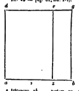

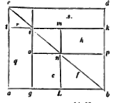

Erit itaque superficies .dz. equalis quatuor lateribus tetragoni .db., remanet itaque superficies .eb. 4.; ergo quatuor radices et .4. equantur tetragono .db.: diuidatur itaque recta .az. in duo equalia super .i.; eritque multiplicatio .zb. in .ab. cum quadrato linee .iz. sicut tetragonum linee .ib. Sed .zb. in .ab. est sicut .zb. in .ze. Sed .zb. in .ze. facit superficiem .eb., scilicet .4.; ergo ex .zb. in .ab. proueniunt .4.; quibus addito trigono linee .iz., erunt .8. pro quadrato linee .ib.; ergo recta .ib. est radix de .8.: cui si addatur recta .ia., scilicet .2., habebimus .2. et radicem de .8. pro tota linea .ab., que est latus tetragoni .db.
Et si dyametri quadrati supra unumquodque latus eiusdem quadrilateri addatur .6.; quantum erit latus eius. Multiplica itaque .6. in se, erunt .36.; que duplica, erunt .72.; supra radicem quorum adde .6., et habebis latus; ergo latus est .6. et radix septuaginta duorum. Verbi gratia. Adiaceat quedam recta .ab., et sit equalis dyametro dati quadrilateri; et latus eius sit .bg., remanet .ga. 6., in quibus dyameter superhabundat latus: et constituatur super rectam .ab. tetragonum .ad.; et protrahatur in ipso dyameter .eb.; et per punctum .g.; protrahatur recta .gz. equidistans rectis .ae. et .bd.; et per punctum .i. protrahatur recta .tk. equidistans rectis .ed. et .ab.: deinde sumatur in .bg. recta punctus .l.; et sit .gl. equalis .ga.; et compleatur figura eadem in tetragono .gk.: et quoniam tetragonum est quadrilaterum .ad., tetragona sunt ea que sunt circa dyametrum ipsius, scilicet .tz. et .gk.: est enim latus tetragoni .tz. recta .t.i., que est equalis recte .ag.; ergo .ti. est .6.; et tetragonum .tz. est .36. Item tetragona sunt quadrilatera .om. et .lp.; sunt enim circa dyametrum tetragoni .gk.; et est tetragonum .om. equale tetragono .tz. propter rectam .on., que est equalis recte .gl., et .gl. recte .ga., et .ga. recte .ti. ostensa est equalis. Et quoniam recta .bg. est latus tetragonj, cuius .ba. est dyameter; quod a recta .ba. describitur tetragonum duplum est eius, quod describitur a recta .bg.; ergo tetragonum .ad. duplum est tetragoni .gk. Quare ignomon .q.r.s. equatur tetragono .gk.: auferatur itaque ex gnomone .q.r.s. tetragonum .tz.; et ex tetragono .gk. tetragonum .om., que sunt equalia, remanent supplementa .ai. et .id. equalia gnomonj .c.f.h. Sed supplementum .ai. equale est superficiei .il.; habet enim unum latus comune, quod est .ig.; et recta quidem .lg. recte .ga. est equalis. Similiter et supplementum .id. equale est superficiei .ip.; ergo due superficies .il. et .ip. equales sunt gnomonj .c.f.h. Quare si comuniter auferatur superficies .gn. et .nk., remanebit duplum tetragoni .om. equale tetragono .lp. Sed tetragonum .om. est .36. Quare tetragonum .lp. est .72.; cuius latus, scilicet .bl., est radix septuaginta duorum: cui si addatur .lg., que est .6., habebimus pro tota .6. et radicem septuaginta duorum, ut oportebat ostendere. Cui si addatur .ga., erit tota .ag., scilicet dyameter dati quadrilateri .12. et radix septuaginta duorum. Vel aliter quoniam recta .ag. est .6.; et .gi. est latus tetragoni, cuius dyameter est equalis linee .ab., erit propter hoc quadrilaterum .ai. equale sex radicibus tetragoni .gk.; et est quadrilaterum .id. equale quadrilatero .ai.; ergo quadrilaterum .id. est sex radices quadrati .gk.; et quadratum .tz. est .36.: quare totum gnomon .q.r.s. est .36. et .12. radices tetragoni .gk. Et est gnomon .q.r.s. equale tetragono .gk., ut ostensum est. Vnde si ponamus rectam .bg. rem, erit tetragonum .gk. census, qui equatur .12. suis radicibus et .36. dragmis: operare ergo in hoc secundum quod dictum est quando census equatur radicibus et numero.
f. 0070 · p. 63
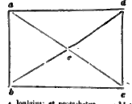

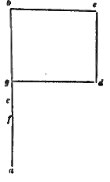
Rursus multiplicaui dyametrum per latus, et prouenit .100.; quanta est ergo dyameter et latus tetragonj. Quoniam multiplicato dyametro per latus proueniunt .100. Si multiplicauerimus quadratum dyametri per quadratum lateris, scilicet per aream tetragoni, prouenit quadratum de .100., scilicet decem milia. Quare si multiplicauerimus quadratum dyametri per duplum embadi, scilicet per quadratum dyametri, proueniet duplum eius, scilicet uiginti milia. Ergo dyameter est radix radicis uiginti milium. Quare embadum, cum sit medietas ex quadrato dyametri, erit radix quinque milium; quare latus erit radix radicis quinque milium. Item multiplicaui dyametrum per aream tetragoni, et prouenit .500.; quanta est ergo dyameter et latus eius. Quoniam multiplicatio dyametri per embadum facit .500.; erit itaque multiplicatio dyametri per duplum embadi, scilicet per quadratum dyametri, .1000.; ergo dyameter est radix cubica de .1000. Nam radix cubica de .1000. est .10.; ergo dyameter est .10.; et quadratum eius est .100.; et area est dimidium eius, scilicet .50.; et latus est radix de .50.
Explicit de quadrilatero: incipit de parte altera longiori.
ADIACEAT quadrilaterum parte altera longius .abcd., habens in singulis lateribus breuioribus, que sunt .ab. et .dc., perticas .6.: in longioribus quoque .ad. et .bc. perticas .8.; eiusque embadum colligitur ex multiplicatione lateris .ab. in .bc.; quare area ipsius est .48. Nam si eius dyametrum .ac. habere desideras, adde quadrata linearum .ab. et .bc. in unum, scilicet .36. et 64., erunt .100.; quorum radix, scilicet .10., est dyameter .ac. Item sit dyameter .10., et latus .cb. sit .8.; quantum est ergo latus .ab.: de quadrato linee .ac. extrahe quadratum linee .bc., et remanebit quadratum linee .ab., et econuerso, ut in trigono orthogonio superius diximus. Simili quoque modo inueniemus dyametrum .bd. esse .10. propter equalitatem trigonorum .abc. et .bad. Dico quidem quod ipsa dyametra sese per equalia secant super punctum .e.; sunt enim equidistantes recte .ad. et .bc.; quare angulus .ade. angulo .ebc. est equalis: propter eadem ergo et angulus .dae. angulo .ecb. est equalis: reliquus .aed. reliquo .bec. est equalis: equiangula enim sunt trigona .aed. et .bec., et habent latera .ad. et .bc. sibi inuicem equalia; quare reliqua latera reliquis lateribus, que equalibus angulis subtenduntur, sibi inuicem equalia erunt; latus quoque .be. lateri .ed. et latus .ce. lateri .ea. Et quoniam dyametrum .ac. equale est dyametro .bd., et sunt secta per equalia super .i. punctum. Quantum enim recte, que sunt .ia. et .ib. et .ic. et .id. sibi inuicem equales sunt: est enim unaqueque earum .5., scilicet dimidium sui dyametri; que oportebat ostendere. Nam si area fuerit .48.; et latus breue aggregatum fuerit cum longiore sint .14.; et uis scire quantum sit longius, uel breuius latus; medietatem itaque de .14., scilicet .7., in se multiplica, erunt .49.; de quibus tolle aream, remanet .1.; cuius radicem adde super .7., erunt .8. pro latere longiori; a quibus usque in .14. desunt .6. pro breuiore latere. Verbi gratia: adiaceat quadrilaterum .b.g.d.e. parte altera longius; et sit .bg. breuius latus, et .gd. sit longius; et protrahatur recta .bg. in puncto .a.; et sit recta .ga. equalis recte .gd.; et diuidatur recta .ab. in duo equa super punctum .c.; erit ergo tota linea .ba. 14.; quare .bc., uel .ac. est .7.: et quoniam recta .ba. diuisa est in duo equalia et totidem inequalia super punctis .gc., erit .bg. in .ga. cum quadrato linee .gc. equalis quadrato linee .ca. Sed .bg. in .ga. est sicut .bg. in .gd.; et ex .bg. in .gd. prouenit area; ergo .bg. in .ga. est .48.: cui si addatur quadratum linee .ge.,
f. 0071 · p. 64
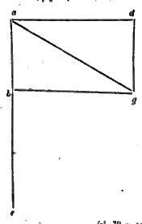

faciet .49.: ergo quadratus linee .gc. est .1.; cuius radix, scilicet .1., est linea .gc. quadrata super .ac., erit tota .ag., scilicet .gd. 8, quod est maius latus; remanet ergo .gb. 6., ut prediximus. Item sit area 48 et latus longius addat super breuius secundum quantitatem duorum. Accipe medietatem ipsorum duorum, erit .1.; cuius quadratum adde super .48., erunt .49.; de quibus accipe radicem, que est .7., et adde super eam .1., quod fuit medietas duorum supradictorum, erunt .8., quod est latus longius; de quo tolle .2., in quo longius latus superhabundat breuius, remanent .6.; quod etiam possumus comprehendere in figura suprascripta. Sit longius latus ut prediximus .gd., cui iacet equalis recta .ga.; et auferatur a recta .ga. recta .gf., que sit .2.; erit ergo recta .af. equalis recte .gb. Diuidatur itaque recta .gf. in duo equalia super punctum .c., erit recta .ac. equalis recte .cb.; ergo recta .ab. diuisa est in duo equalia super punctum .c., et in duo inequalia super punctum .g.; et est recta .gc. .1., que inter iacet sectionibus. Est ergo multiplicatio .ag. in .gb. cum quadrato linee .gc. equalis quadrato linee .ac. Sed .bg. in .ga. est .48.; et quadratum ex .cg. est .1.; ergo .bg. in .ga. cum quadrato linee .gc. est .49.; quorum radix, scilicet .7., est linea .ac.: cui si addatur .cg., que est .1., erit tota .ag. 8., quod est maius latus. Item si ex .cb., que est .7., cum sit equalis .ca., auferatur .cg., remanet .gb. .6., ut prediximus. Vel aliter: pone latus ubilibet in duo breuius radicem; eritque tunc latus longius radix et .2. Et quoniam ex multiplicatione breuioris lateris in longius prouenit .48.; ergo ex multiplicatione radicis in radicem et in .2. proueniunt similiter 48. Nam ex multiplicatione radicis in radicem prouenit census; et ex multiplicatione radicis in .2. proueniunt due radices; ergo census et due radices equantur .48.: fac ergo ut supra diximus in his in quibus census et radices equantur numero, et habebis optatum. Item dyameter sit .10., et embadum sit .48.; quantum est ergo unumquodque latus: super quadratum dyametri adde duplum embadi, erunt .196.; cuius radix, scilicet .14., est longitudo utriusque lateris. Verbi gratia: adiaceat quadrilaterum .abgd., cuius dyameter .ag. sit .10.: protrahatur quidem recta .ab. in punctum .e.; et sit .be. equalis .bg. Et quoniam recta .ae. diuisa est in duo super punctum .b., erunt duo quadrata portionum .ab. et .be. cum duplo .ab. in .be. equales quadrato totius linee .ae. Sed portio .be. equa est lateri .bg.; ergo quadrata linearum .ab. et .bg. cum duplo .ab. in .bg. equantur quadrato linee .ae. Sed quadrata laterum .ab. et .bg. faciunt quadratum dyametri .ag.; et duplum .ab. in .bg. facit duplum aree, scilicet .96.; quibus iunctis cum .100. faciunt .196. pro quadrato linee .ae.; ergo .ae. est radix ipsorum, scilicet .14., ut prediximus: post hec, ut separes .ab. ex .bc., scilicet ex .bg., procedas, ut superius dictum est ubi diximus, embadum erunt .48., et duo latera coniuncta .14. Rursus dyameter sit .10., et duo latera coniuncta sint .14.; et uolo scire embadum, nec non et unumquodque latus: multiplica igitur .14. in se, erunt .196.; de quo tolle quadratum dyametri, scilicet .100., remanet .96.; quorum dimidium, scilicet .48., est embadum: post hec per supradicta studeas latera segregare. Que inueniuntur in supradicta figura hoc ordine: quadratum dyametri .ag. equatur duobus quadratis laterum .ab. et .bg., hoc est quadratis portionum .ab. et .be. Sed quadrata portionum .ab. et .be. cum duplo .ab. in .be. equantur quadrato linee .ae.; ergo quadratum dyametri .ag. cum duplo .ab. in .be. equatur quadrato linee .ae. Quare si auferatur quadratum dyametri, scilicet .100., ex quadrato linee .ae., scilicet de .196.,
f. 0072 · p. 65
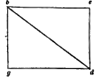
remanebunt .96. pro duplo .ab. in .be., hoc est pro duplo .ab. in .bg.: ergo .ab. in .bg. facit 48., scilicet dimidium de .96. Sed .ab. in .bg. facit embadum; ergo embadum est .48., ut prediximus: cum quo predicto modo separabis latera; et erit breuius latus .6., longius uero .8. Iterum coniunxi dyametrum cum uno latere, et prouenerunt inde .16.; et aliud latus est .8. Quanta est ergo dyameter, et quantum est latus ei coniunctum. Multiplica .16. in se, erunt .256.; de quibus tolle quadratum dati lateris, scilicet .64., remanent .192.; que diuide per duplum de .16., exibunt .6., que sunt latus coniunctum dyametro; quod latus tolle de .16., remanent .10. pro dyametro. Verbi gratia: adiaceat quadrilaterum .b.g.d.e.; et sit dyameter .bd. cum latere .bg. perticarum .16.; et latus .dg. sit .8.: pone itaque latus .bg. radicem, remanet dyameter .db. 16 minus radice; que multiplica in se, habebis .256. et unum quadratum minus radicibus .32. pro quadrato dyametri .bd. Sed quadrato dyametri .bd. equantur duo quadrata laterum .bg. et .gd.; ergo quadrata laterum .bg. et .gd. equantur 256. et uni quadrato lateris .bg., detractis inde radicibus .32.: restaura ergo ipsas radices et erunt quadrata linearum .bg. et .gd. cum radicibus .32. equales .256. et uni quadrato lateris .bg.: comuniter auferatur quadratum lateris .bg., remanebit quadratum lateris .gd. cum radicibus .32. equale .256.: comuniter auferatur quadratum linee .gd., scilicet .64., remanebunt radices 32. equales .192. Ecce raduximus (sic) hanc questionem ad unam ex sex regulis supradictis, ad eam uidelicet in qua radices equantur numero. Quare diuide .192. per .32., exibunt .6. pro radice, hoc est pro latere .bg.; quibus extractis de .16., remanent .10. pro dyametro .bd., ut predixi. Et si dyameter addat .4. super latus breuius; et longius latus sit .8., quanta est ergo dyameter. Multiplica .8. in se, erunt .64.; quibus adde multiplicationem quaternarij in se, erunt .80.: et dupla ipsa .4., erunt .8.; in quibus diuide .80., erunt .10. pro quantitate dyametri; de quibus tolle .4., que dyameter addit super latus breuius, remanebunt .6. pro ipso latere. Producitur enim hec questio ad unam ex sex regulis supradictis hoc modo: primo quidem manifestum est quod duo quadrata, breuioris uidelicet et longioris lateris equantur quadrato dyametri. Quare pone dyametrum radicem, quam in se multiplica, facit quadratum dyametri. Item pro latere breuiori pone radicem dyametri minus .4.; que multiplica in se, ueniet quadratum dyametri et .16. minus .8. radicibus dyametri pro quadrato lateris breuioris; cum quibus adde quadratum lateris longioris, habebis quadratum dyametri et 80. minus .8. radicibus dyametri, que equantur quadrato dyametri. Restaura ergo ipsas radices ab utraque parte, remanebit quadratum dyametri et .80., que equantur quadrato dyametrj et .8. radicibus: tolle ergo ab utraque parte quadratum dyametri, remanent 80., que equantur .8. radicibus dyametri. Quare diuisis 80 per 8 uenient .10. pro dyametro, ut predixi. Et Si ex multiplicatione longioris lateris in area proueniet 384.; et breuius latus sit .6.; et uis scire quanta sit area. Quia ex multiplicatione breuioris lateris in longius prouenit area; et ex multiplicatione aree in latus longius prouenit .384.; ergo ex multiplicatione breuioris lateris in quadratum longioris idem prouenit. Quare si diuiserimus 384. per .6., scilicet per breuius latus, prouenient .64. pro quadrato longioris. Quorum radix, scilicet .8., est latus longius. Et Si proponatur, embadum esse .48.; et diuiso latere maiore per minus proueniat 1 1/3.; et uis scire unum quodque latus, pone breuius latus .3. propter 1/3., quod denominatur ab ipso; et multiplica .3. per 1 1/3., erunt .4., quod pone pro maiori
f. 0073 · p. 66latere. Ergo in qua proportione est .3. ad .4., in eadem est breuius latus ad maius: multiplica itaque .3. per .4., erunt .12.; in quibus diuide 48., uenient .4.; de quibus accipe radicem, que est .2.; et multiplica in eam posita .3. et 4, et habebis .6. pro breuiori latere, et .8. pro maiori. uel aliter: multiplica 3 per 48, et diuide per 4, exibunt .36.; quorum radix est breuius latus. Item multiplica .4. per 48, et diuide per .3., exibunt .64., quorum radix est latus longius. Et si latus minus diuidatur per maius, et prouenient 3/4.; pone pro maiori latere .4. propter 3/4., que denominantur ab ipso; et accipe 3/4. de .4., erunt .3.; que pone pro minore, et fac ut supra, et habebis .6. pro minori latere, et .6. pro maiori.
Item latus breuius cum dyametro sit .16.; et latus maius addat .2. super latus minus; et uis scire quantum sit dyameter et unum quodque latus. Quoniam maius latus excidit minus latus in .2.; Ergo si addiderimus maius latus cum dyametro, uenient .18.: multiplica itaque .16. in se, et .18. in se; et aggrega multiplicationes eorum, erunt .580.; de quibus tolle quadratum duorum predictorum, remanent .576.; quorum radix, scilicet .24., est summa duorum laterum et dyametri: de quibus tolle dyametrum et latus breuius, scilicet .16., remanebunt .8., que sunt latus maius: de quo tolle .2., remanent .6. pro latere breuiori uel .16., scilicet maius latus; et dyametrum tolle de .24. Que si ad computationem algebre reducere uis, pone latus breuius rem, remanebit dyameter .16., excepta re: multiplica ergo rem in re, proueniet census; quem aggregabis cum quadrato maioris lateris; quod quadratum inuenies sic: quia maius latus excidit minus in .2.; pones ipsum maius latus rem et duas dragmas; que multiplica in se, egredientur census et .4. radices et .4. dragme pro quadrato longioris lateris: que adde cum quadrato breuioris, scilicet cum censu, erunt duo census, scilicet duo quadrata breuioris lateris et .4. radices et .4. dragme, que equantur quadrato dyametrj, scilicet multiplicationi de 16., excepta re in se. Que multiplicatio est 256 et census, exceptis triginta duabus radicibus. Restaura ergo radices, remanebunt 256 et census, que equantur duobus censibus et 36 radicibus et .4. dragmis: tolle itaque ab utraque parte censum et .4. dragmas, remanebunt census et radices 36, que equantur 252.: media ergo radices et censum, secundum quod superius diximus, ubi census et radices equantur numero. Et si maius latus cum dyametro sit 18.; et maius excedat minus in .2.; tunc minus latus cum dyametro esset .16.; cum quibus operaberis ut supra. Rursus duo latera cum embado surgunt in 62.; et maius latus addit super minus .2.; quantum est igitur unumquodque latus: modus inueniendi hoc erit ut minuas .2. ex 62., et remanebunt .60. Duo igitur adiunge medietati laterum, et prouenient .4.; ipsum itaque adiunge .60., et prouenient .64.: horum ergo radicem, que est .8., assume; ipsum namque est latus longius: quod si uis breuius, minue .2. ex .8., remanebunt 6, quod est latus breuius. Exempli causa: pone latus minus rem, erit tunc latus maius res et due dragme. Ex multiplicatione quidem multiplica rem, scilicet minus latus, in rem et in duas dragmas, et babebis censum et duas radices pro embado: quibus si addantur duo latera, scilicet 2 radices et .2. dragme, erunt census et 4 radices et 2 dragme, que equantur dragmis .62.: tolle ergo ab utraque parte dragmas .2., et remanent census et 4 radices, que equantur 60 et cetera.
Et si multiplicatio maioris lateris in dyametrum sit 80., et latus breuius .6., multiplica 80 in se et 6 in se, erunt .6400 et 36: accipe ergo quadratum medietatis de
f. 0074 · p. 67.36., scilicet .324.; et adde cum .6400., erunt .6724.; super quorum radicem, que est .82., adde medietatem de 36., erunt .100.; quorum radix, scilicet .10., est dyameter; in quo diuide 80., uenient .8., que sunt latus longius: uel de .80. deme .18., remanent .64., quorum radix est latus longius. Quod si hec ad computationem algebre reducere uis; quia ex multiplicatione longioris lateris in dyametrum proueniunt 80; ergo ex multiplicatione quadratorum ipsorum prouenit quadratum de 80., scilicet .6400. Sed quadratus dyametri equatur duobus quadratis, longioris uidelicet et breuioris lateris; et est quadratum breuioris lateris .36. Ergo ex multiplicatione quadrati maioris lateris in se et in 36 proueniunt 6400. Quare pone quadratum maioris lateris rem, que in se multiplicata et in .36. facit censum et 36 radices, que equantur sex milibus et quadragentis et cetera. Similiter secundum hanc regulam facies si ex multiplicatione breuioris lateris in dyametrum proueniet 60; et maius latus sit .8.; tunc census et 64. radices equabuntur 3600. Item latus breuius cum area faciunt 54.; et latus maius addit super minus .2. Quantum est ergo quodque latus. Quia ex multiplicatione breuioris lateris in longius prouenit embadum; si ponamus breuius latus rem, est latus longius res et duo; que si multiplicauerimus per rem, scilicet per breuius latus, egredientur census et due radices pro area: quibus si addamus breuius latus, scilicet radicem, erunt census et tres radices, que equantur 54.: multiplica ergo medietatem radicum in se, erunt 2 1/4.; que adde cum 54, erunt 56 1/4.; de quorum radice, scilicet de 7 1/2, tolle 1 1/2., remanent .6., quod est breuius latus; maius ergo erit .8.: et si longius latus surgat in 56 cum embado, et minus latus sit .2. minus maiore; pone maius latus rem, erit minus latus res, exceptis duobus: multiplica ergo maius latus per minus, ueniet census minus duabus radicibus; cui superadde radicem, scilicet latus longius, erit census, una radice excepta, que equantur .56. Restaura ergo radicem, et oppone eam, remanebit census, qui equatur uni radici et 56: accipe quidem medietatem radicis, et multiplica eam in se, erit 1/4.; quod adde super 56, erunt 56 1/4.; super quorum radicem, scilicet 7 1/2., adde medietatem radicis, erunt .8., quod est latus longius. Si autem ex agregatione 4 laterum cum area parte altera longioris proueniant 76; et maius latus addat super minus .2.; tunc pone latus breuius rem, et latus longius rem et duo: multiplica ergo rem in re et duo, erit census et due radices, que equantur embado; cum quibus adde duas radices pro duobus breuioribus lateribus, et duas alias pro duobus lateribus longioribus et .4., in quibus maiora latera superhabundant minora, erunt census et sex radices et 4. dragme, que equantur 76.: tolle ergo .4. ab utraque parte, remanebit census et sex radices, que equantur .72.: pone itaque quadratum medietatis radicum super 72, erunt 81.; de quorum radice, scilicet de .9., tolle medietatem radicum, remanebunt .6. pro breuiori latere. Si uero ex area diminuatur latus breuius, et remaneant .42.; et latus maius addat super minus .2.; pone ergo latus minus rem, quam multiplica per rem et duo, scilicet per latus longius, egredietur census et due radices, que equantur areg; de quibus tolle unam radicem, scilicet breuius latus, remanet census et radix, que equantur 42.: pone ergo super 42 quadratum medie radicis, scilicet 1/4., erunt 42 1/4.; de quorum radice, scilicet de 6 1/2., tolle 1/2., remanebunt .6., quod est latus breuius. Et si ex area tollatur maius latus, et remanent .40.; et maius sit duo plus minore. tunc erit manifestum: quod si minus latus tollatur ex
f. 0075 · p. 68
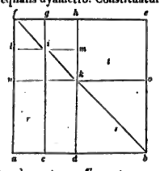
area, remanebunt duo plus ex eo quod remanet, cum ex area tollitur maius latus; ergo dempto minore latere ex area, remanent 42: fac ergo ut supra, et habebis propositum, si deus uoluerit.
Vel aliter: pone maius latus rem, et multiplica eam per latus breuius, scilicet per rem, exceptis duobus, erit census, minus duabus radicibus, que equantur aree: deme ergo inde unam radicem, scilicet latus maius, remanebit census, exceptis tribus radicibus, que equantur quadraginta. Restaura ergo radices, et oppone eas, et habebis censum, qui equatur tribus radicibus et .40. et cetera. Item diminutis .4. lateribus ex embado, remanent .20.; et maius latus addit super minus .2. Quantum est ergo quodque latus: pone latus breuius rem, et maius rem et duo. Quare .4. latera erunt .4. res et 4 dragme. Ex multiplicatione quidem rei in rem et duo proueniunt census et due res, que equantur embado. De quibus tolle 4 latera, scilicet 4 res et 4 dragmas, remanebit census minus duabus rebus et 4 dragmis, que equantur 20. Restaura ergo duas, scilicet res, scilicet .2. radices, et 4 dragmas, ueniet census, qui equatur duabus radicibus et 24 dragmis. Media siquidem radices, erit .1.; cuius quadratum adde super .24., erunt .25.; super cuius radicem adde ipsum .1., erunt .6., quod est breuius latus et cetera. Item si maius latus et minus addantur cum dyametro, et sint sicut medietas areg; et area sit .48.; et uis scire quantum sit dyameter, nec non et quodque latus. Accipe ergo dimidium aree, scilicet .24., que sunt summa duorum laterum et dyametri; et multiplica ea in se, erunt 576.: de quibus tolle duplum embadj, remanent 480; dimidium quorum diuide per 24., scilicet per summam coniunctionis duorum laterum cum dyametro, exibunt .10. pro dyametro. Vel aliter: duplica embadum, erunt 96.; que diuide per 24., uenient .4.; que extrahe de .24., remanent .20.; quorum dimidium habeas pro dyametro; quibus extractis de 24., remanent .14. pro quantitate duorum laterum. Ex hoc ergo talis oritur questio. Aggregatio duorum laterum est 14., et area est .48.: fac ergo ut superius dictum est: et habebis propositum. Nam si unde ista procedant noscere uis; adiaceat quedam recta .ab. .24. ulnarum, in qua continetur summa coniunctionis duorum laterum et dyametrj; et sit .ac. equalis maiori lateri dati quadrilateri parte altera longioris, et .cd. minori; remanebit ergo .bd. equalis dyametro. Constituatur siquidem super rectam .ab. tetragonum .ae.; et protrahatur dyametrum .fb.; et per puncta .cd. protrahantur recte .cpig. et .dkmh. equidistantes ut libet rectarum .af. et .be.; et per puncta quidem .ik. protrahantur recte .lim. et .nko. Quoniam tetragonum est .ae., tetragona sunt que describuntur circa dyametrum ipsius; ergo tetragonum est .kdbc. et .knfh. Rursus quia
f. 0076 · p. 69
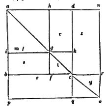
tetragonum est quadrilaterum .nh., tetragona quidem sunt .pimk. et .ilfg.; et est latus tetragoni .do. recta .db. Quare .do. tetragonum equale est quadrato dyametri; et tetragonum quidem .pm. est latus; recta .pk., que est equalis recte .cd., et .cd. est equalis minori lateri. Ergo tetragonum .pm. equale est tetragono minoris lateris. Similiter ostendetur, tetragonum .lg. equale esse quadrato maioris lateris propter rectas .fg. et .li., que sunt equales recte .ac.; et .ac. iacet equalis maiori lateri dati parte altera longioris. Et quoniam tetragonum est .pm., equalis est recta .kp. recte .pi.; ergo .pi. est equalis minori lateri, et .il. est equalis maiori. ergo supplementum .ni. est equale aree dati quadrilateri; et suplementum .ih., ut euclides ostendit, est equale suplemento .ni. Ergo supplementa .ni. et .ih. dupla sunt embado dati parte altera longioris; que supplementa sunt 96.: si tollantur ex area tetragoni .ae., scilicet ex 576, remanebunt tetragona .lg. et .pm., et gnomon .rst. 480. Sed tetragona .lg. et .pm. equalia sunt tetragono .do., scilicet dyametri; ergo .do. tetragonum cum gnomone .rst. sunt .480. Sed ex .do. tetragono et gnomone .rst. dimidium est superficies .ao.; ergo superficies .ao. est 240., que constat ex ductu .ab. in .bo.: ergo si .240. diuiserimus per .ab., scilicet per .24., uenient .10. pro linea .ob., scilicet pro linea .bd., que est equalis dyametro; ergo dyameter est .10. Vel secundum aliam supradictam regulam cum de quadrato linee .ab., scilicet de .24. uicibus .24. tollitur duplum embadj, scilicet supplementa .ni. et .ih.; et embadum est duplum quantitatis linee .ab.; ergo duplum embadi est quadruplum de .24.; ergo si ex 24. uicibus .24. tollatur quadruplum de .24., remanebunt .20. uicibus .24. pro area tetragonorum .lg. et .pm., et ignomoni .rst.; ex quibus superficies .ao. dimidium continet, ut ostensum est. Quare superficies .ao. constat ex .10. uicibus 24.: ergo cum .ab. sit .24., sequitur necessario, .bo. esse .10.; que oportebat ostendere. Item aggregatio duorum laterum cum dyametro est .24.; et maius latus addit supra minus .2. Quantum est ergo quodque latus: duplica itaque quadratum de .24., scilicet .1152.; super que adde quadratum superhabundantię, in qua maius latus superhabundat minus, scilicet duorum, erunt .1156.; de quorum radice, scilicet de .34., tolle .24. predicta, remanent .10., que sunt dyameter; a quibus usque in .24. desunt .14., que sunt duo latera: de quibus .14. tolle .2., remanent .12.; quorum medietas, scilicet .6., est breuius latus. Ad cuius regule demonstrationem adiaceat tetragonum .abcd. habens in singulis lateribus quantitatem duorum laterum et dyametrj; et sit .be. equalis maiori lateri, et .ef. minorj. Remanebit .fc. equalis dyametro: et protrahatur dyameter .ac.; et per punctum .f. protrahatur linea .fgh. equidistans utrique linearum .ba. et .cd.; et per punctum .g. protrahatur recta .igk.; et erit recta .ig. equalis recte .bf.: et auferatur a recta .gi. recta .gl., que sit equalis recte .fe.; remanet ergo .li. equalis recte .eb.; ergo .gl. est equalis minori lateri, et .li. maiori: auferatur itaque ab .li. recta .im., scilicet id in quo maius latus superaddit minus, remanebit .ml. equalis .lg., scilicet maiori lateri: et educatur .ad. in puncto .n.; et sit .dn. equalis .fc., scilicet dyametro; et constituatur super .an. tetragonum .nopa.; et quoniam tetragona sunt .bd. et .pn., et sunt circa unum angulum, qui ad .a. circa eumdem dyametrum sunt; ergo si protrahatur dyameter .ac. in punctum .o., ueniet ergo recta .ao. dyameter. Protrahatur quidem recta .dc. in .q., et recta .bc. in .r.; tetragonum ergo est .qr. continens in se quadratum dyametri dati parte altera longioris: totum igitur tetragonum .pn. equatur tetragono .bd. et ignomini .stu.
f. 0077 · p. 70Demonstrabo siquidem, ignomon .stu. equale esse tetragono .bd., et tetragono linee .im., que est superhabundantia, in qua maius latus superhabundat minus. Sunt enim suplementa .pc. et .cn. equalia superficiebus .bk. et .fd. Sed due superficies .bk. et .fd. equantur ignomonj .xyz. et tetragono .fk. Quibus superaddatur equale tetragono .qr., quod est equale tetragono .fk., erit duplum tetragoni .fk. cum ignomone .xyz. equale ignomoni .stu. Restat siquidem demonstrandum, duplum tetragoni .fk. equale esse tetragono .ih. et .ei., quod describitur a recta .im.; est enim recta .gm. in duo equa diuisa in puncto .l., cui in directo adiuncta est recta .mi.; erit itaque tetragonum, quod describitur a recta .gi., scilicet tetragonum .ih. cum eo quod describitur a recta .im., duplum eorum, que describuntur a rectis .gl. et .li. Sed tetragona que describuntur a rectis .gl. et .li. equantur tetragono .fk.; quare duplum tetragonj .fk. equatur tetragono .ih. et .ei., quod describitur a recta .im.; ergo ignomon .stu. equatur tetragono .bd., et quadrato superhabundantię maioris lateris, ut prediximus. Nunc ueniamus ad causam. Multiplicauimus superius .24. per .24., et habuimus quadratum .bd.; que duplauimus, hoc est addidimus super eum equale illius; et superaddidimus postea .4.; hoc est super quadratum .bd. superaddidimus ignomon .s.t.u.; et sic habuimus .1156. pro quadrato .pn., cuius latus est radix illius: ergo .po. est 34.; de qua extracta .pq., scilicet .bc., remanet .qo. 10., cui equalis est recta .cf.; ergo .cf. est .10., ut predixi. Possumus etiam aliter ad notitiam supradictorum laterum deuenire. Videlicet ut ponas latus minus rem. Eritque latus longius res et duo; quibus extractis de .24., remanent pro dyametro .22., exceptis duabus rebus. multiplica rem in se, erit census et rem. et duo in se, erit census et 4. res et IIIIor dragme: quibus in unum coniunctis, erunt duo census et .4. res et .4. dragme, que equantur quadrato dyametri, scilicet multiplicationi de 22, exceptis duabus rebus in se; que multiplicatio est 4 census et 484, exceptis .88. radicibus. Restaura ergo radices, et oppone duos census et 4 dragmas, et inuenies, 92 radices equari duobus censibus et 480. Redige ergo hec ad censum unum, et erit census et 240, que equantur 46 radicibus et cetera. Vel pone latus longius rem, eritque latus breuius res minus duo; que extrahe de 24., remanent .26., exceptis duabus rebus: et operare de inde ut supra; et inuenies, census et 336 equari 50 radicibus. Si autem dyameter addiderit super latus maius .2., et maius super minus totidem; et uis scire dyametrum et quodque latus. Semper cum superhabundantie laterum erunt equales, multiplicabis ipsam superhabundantiam per 5., et habebis dyametrum; et ipsam per .4., et habebis longius latus; et ipsam per 3, et habebis breuius. Verbi gratia: superhabundantia quidem laterum est .2.; quibus multiplicatis per .5. et per .4. et per .3., egrediuntur .10. pro dyametro, et 8 pro latere longiori et 6 pro breuiori: et hec contingunt propter quadrilaterum parte altera longius; cuius latus longius est .4., breuius .3., dyameter quoque .5.: horum quidem laterum superhabundantia est unum. Quare sicut .1. erit ad quam uolueris superhabundantiam, ita hec tria latera erunt ad latera illius parte altera longioris, de quo superhabundantia aliqua data fuerit. Verbi gratia: si superhabundantia erit .3.; quia 3 tripla sunt de uno, ideo tripla erunt latera ex lateribus predictis, scilicet dyameter erit .15.; latus quoque maius .12., minus autem .9. Vnde si proponatur, dyametrum esse .20.; et uis scire superhabundantiam laterum, diuide .20. per .5., exibunt .4., que sunt superhabundantia laterum: quam multiplica per
f. 0078 · p. 71
4, et per .3., erunt .16. et 12, que sunt latera. Item latus longius sit .20.; diuide ergo ipsum per .4., quia quaternarius est similis lateribus longioribus et 3 breuioribus et 5 dyametris. Diuisis ergo .20. per .4., ueniunt .5. pro superhabundantia; quam multiplica per .3. et per .5., uenient .15. pro latere breuiori et 25 pro dyametro. Rursus latus breuius sit .18.: diuide ergo ipsum per .3., exibunt .6. pro superhabundantia laterum; quam multiplica per 4. et per 5., uenient 24 pro latere longiori, et 30 pro dyametro. Nam si superhabundantie inequales fuerint ut in quadrato, in quo proponitur, dyametrum addere .1. super latus maius, et maius supra minus .7.; tunc operabimus per algebram: ponemus siquidem latus breuius rem, eritque latus longius res et 7; et dyameter erit res et .8.: multiplica itaque rem in rem, facit censum. Et rem, et .7. in se, facit censum et 14 res et 49 dragmas; quibus insimul iunctis, erunt duo census et 14 res et .49., que equantur quadrato dyametri, scilicet multiplicationi unius rei et 8 in se; que multiplicatio est census et 16 res et 64.: tolle ergo ab utraque parte censum et 14 res et .49., remanebit census, qui equatur duabus radicibus et 15. Quare media radices, ueniet .1.; quod multiplica in se, erit .1.; quod adde cum .15., erunt .16.: super quorum radicem, scilicet super .4., adde medietatem radicum, erunt .5., que sunt minus latus: super que adde .7., erunt 12, que sunt maius latus: super que adde .1., erunt .13., que sunt dyameter. ITEM maius latus addit super minus .7.; et dyameter est .13.; quantum est ergo quoque latus: quadratum itaque superhabundantię ex quadrato dyametri abice, scilicet 49 de 169., remanebunt .120.; cuius dimidium, scilicet 60., est area. Exempli causa: adiaceat recta .ab. equalis duobus lateribus; et sit .bg. equalis minori lateri, remanet .ga. equalis maiori; et sit .ac. 7., in quo maius latus .ag. superhabundat minus .bg.; ergo .gc. equalis est recte .gb. Constituatur itaque super rectam .ab. tetragonum .ad., et expleatur figura; erit quidem latus tetragoni gk. recta .gb., hoc est .gi.; latus quoque tetragoni hf. est recta .hi. uel .if., que sunt equales recte .ag.: suplementum ergo .ai. est equale quadrilatero dato, quia constat ex rectis .ag. et .gi., que sunt equales duobus lateribus dati quadrilateri. Et suplementum .id. est equale suplemento .ai.; ergo suplementa .ai. et .id. dupla sunt aree dati quadrilateri; ergo duplum aree cum tetragonis .hf. et gk. est equale tetragono .ad. Sed duo tetragona .hf. et .gk. sunt equalia quadrato dyametrj; ergo suplementa .ai. et .id. cum quadrato dyametrj dati parte altera longioris equalia sunt tetragono .ad. Sed tetragonum .ad. cum eo quod a recta .ac. describitur duplum est tetragonis, que describuntur a rectis .ag. et .gb. Sed ea que describuntur a rectis .ag. et .gb. equalia sunt tetragono dyametri. Ergo duplum tetragoni dyametri equale est tetragono .ad., et ei quod a recta .ac. describitur. Sed semel tetragonum dyametri equale est tetragonis .hf. et .gk.; remanet ergo tetragonum dyametri equale suplementis .ai. et .id., et tetragono quod a recta .ac. Quare extraximus tetragonum, quod est a recta .ac., scilicet .49., ex quadrato dyametri, et remanserunt nobis .120. pro suplementis .ai. et .id.: quorum dimidium, scilicet .60., est area .ai. quadrilateri, quod est equale dati quadrilateri. ergo area dati quadrilateri est .60. ut predixi. Sed ut habeas latera, dices: aream est 60; et maius latus addit .7. super minus; fac ergo ut supra docuimus. Aliter pone latus minus rem; eritque latus maius res et .7.: multiplica ergo rem in re, et rem et 7 in se; et adde ea, et erunt duo census et 14 radices et 49 dragmas; que oppone quadrato dyametri, et habebis quod queris.
f. 0079 · p. 72ITEM est pars altera longior, cuius dyameter est .20.; et id quod addit dyameter super latus maius non est equale ei quod addit maius super minus. Quantum est ergo quodque latus. Inuenias quidem aliquod quadrilaterum, cuius latera et dyameter sit rationabilia; et augmentum ipsius non sit equale. Sitque supradictum quadrilaterum, cui latus minus est .5.; maius quoque est .12.; dyameter quidem est .13.; que .13 habeas pro antecedente, cum ponatur dyametrum esse .20. Quare multiplicabis 20 per 12, et 20 per 5; et diuide utramque multiplicationem per 13, et habebis maius latus 6/13 18., minus quoque 9/13 7. Et si maius latus fuerit .20.; et uis inuenire minus latus seu dyametrum; tunc multiplicabis .20 per 5, et 20 per 13; et diuides utramque multiplicationem per 12; et habebis minus latus 1/3 8.; dyametrum quoque 2/3 21. Rursus minus latus sit .20.; tunc multiplicabis .20 per 12, et 20 per 13, et diuides utramque multiplicationem per 5.; uel quintam de .20., scilicet .4., multiplica per 12 et per 13; et inuenies, maius latus esse 48., et dyametrum .52. Sed ut in similibus sanius procedere ualeamus, quedam adiaceant demonstranda. Videlicet ut super quemlibet datum numerum doceamus addere quadratum numerum, et proueniat numerus quadratus. Esto datus numerus .a., oportet super numerum .a. quadratum numerum addere, et earum summa fiat quadrata, hoc est quod habeat radicem. Inuenias quidem duos numeros inequales, qui insimul multiplicati faciant numerum .a. : sintque .bg. gd.; et diuidatur .bd. in duo equalia super punctum .e.; et quoniam numerus .bd. diuisus in duo equalia super punctum .e. et inequalia super punctum .g.; erit multiplicatio .dg. in .gb. cum quadrato numeri .ge. equalis quadrato .de. Sed multiplicatio .dg. in .gb. numerum .a. facit; ergo numerus .a. cum quadrato numeri .ge. equatur quadrato numeri .de.; quod oportebat facere. SI autem unum ex lateribus quadrilateri continentibus angulum rectum datum fuerit; et uis aliud latus, nec non et dyametrum in numeris inuenire; et sit datum latus .13., multiplica itaque 13. in se, erunt .169., que sint linea .ab.; et inueniantur duo numeri, qui insimul multiplicati faciant numerum .ab. Sintque .ab., et unitas .bg. Nam ducta unitate in quo uis numero, idem prouenit numerus; ergo multiplicatio .bg. in .ba. numerum facit, scilicet .169.: diuidaturque numerus .ag. in duo equalia super punctum .d., eritque .gd. dimidium ex .ag., scilicet .85., que est dyameter; remanebit .bd. 84., quod est aliud latus. Et quoniam infinitos duos inequales numeros tamen cum fractionibus inuenire possimus, quorum superficies contineret numerum .ab. Infinita quidem latera et dyametri inueniri possunt conuenientia dato lateri. Verum si proponatur, dyametrum esse 34; et uis latera inuenire. Duplica quidem 34, et egrediatur inde numerus .ef., scilicet .68.: et diuidatur .ef. in duo equalia super punctum .g., eritque .gf. 34.; et sumatur super numerum .ef. punctus .d., et sit proportio .fd. ad .de sicut aliquis quadratus numerus ad aliquem quadratum numerum. Sit itaque .fd. 4., remanebit .de. 64: et quoniam .fd. et .de. habent proportionem quadratorum ex .fd. in .de., egredietur quadratus numerus, scilicet .256., quorum radix, scilicet .16., erit unum latus; reliquum erit .dg., quod est .30.; dyameter autem .gf., scilicet .34. Item si dictum fuerit: augmentum dyametri super latus longius est equale augmento longioris super breuius; et multiplicatio augmenti in dyametrum faciat .20. Supradicta ratione diuide .20 per 5, egrediuntur .4., quorum radix, scilicet .2., est augmentum; multiplica ergo augmentum in .5. et in .4 et in .3., et habebis dyametrum .10.; latus quoque maius .8., minus uero .6.
f. 0080 · p. 73
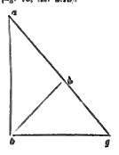
Et si proponatur: est quadrilaterum longius altera parte, cuius dyametri proportio ad ipsius longitudinem est sicut proportio longitudinis eius ad eius latitudinem, etiam dyameter est 10. In hac autem diuidende sunt .10. secundum mediam et extremam proportionem; et quod medie proportioni ceciderit, erit minus latus; ipsumque per .10 multiplicandum est; et ipsius multiplicationis radix erit latus longius: verbi gratia: adiaceat trigonum orthogonium .abg., scilicet dimidium quadrilateri parte altera longioris, cuius dyameter est .ag., latus longius .ab., breuius quoque .bg.; et protrahatur super .ag. cathetus .bd.; et sit sicut .ga. ad .ab., ita .ab. ad .bg. Et quoniam recta .bd. cathetus est super rectam .ag., trigona .bdg. et .bda. sibi inuicem similia sunt, et toti trigono .abg. Quare est sicut .ga. ad .ab., ita .ba. ad .ad. Sed sicut .ga. ad .ab., ita .ab. est ad .bg.; ergo recta .ab. ad rectas .bg. et .ad. eandem habet proportionem. Quare recta .ad. recte .bg. est equalis. Item quia trigona .abg. et .bdg. sibi inuicem similia sunt, est sicut .ag. ad .gb., ita .bg. ad .gd.; nam .bg. equalis est recte .ad.: est ergo sicut .ag. ad .ad., ita .ad. est ad .dg. Ergo .ag., scilicet .10., diuisa est secundum mediam et extremam proportionem; et est media, scilicet maior pars eius .ad., cuius minus latus quesiti parte altera longioris, scilicet .gb., iacet equalis. Nam ut inuenias quantitatem eius, secundum Euclidis regulam, dimidium de .10., scilicet .5., in se multiplica; et quod prouenerit adde cum quadrato linee .ag., scilicet cum .100., erunt .125.; de cuius radice abice .5., scilicet dimidium linee .ag.; et sic habebis pro minori latere, scilicet pro linea .gb., radicem de .125. minus .5. Nam ut habeamus maius latus .ab. Quoniam est sicut .ga. ad .ab., ita .ab. ad .bg.; erit quidem superficies .bg. in .ga. equalis quadrato linee .ab. Quare multiplica .ag. in .gb., scilicet 10., in radice de .125. minus .5., et egredietur radix de 12500 minus .50. pro latere .ab. Procedunt multe et diuerse questiones ex lateribus etiam et ex dyametro, seu ex area supradictorum duorum quadrilaterorum, quarum solutiones, per ea que dicta sunt, poteris inuenire.
Incipit pars secunda tertię differentię.
RELIQVI quidem quadrilateri in IIIIor partes diuiduntur: in prima quorum sunt rumbi, qui omnia IIIIor latera sibi inuicem equalia habent, sed angulos minime rectos habent. In secunda quidem sunt rumbi, idest qui tantum habent latera opposita sibi inuicem equalia et equidistantia, nec non et angulos oppositos equales habent. In tertia sunt campi, qui duo latera habent equidistantia, sed non equalia: qui diuiduntur in IIIIor genera, secundum quod inferius demonstrabimus. In quarta uero sunt diuersilateri campi, qui nullam equidistantiam in eorum lateribus habent.
Incipit de rumbo.
SIT Rumbus .a.b.c.d. habens in singulis lateribus perticas 13.; cumque hunc mensurare uolumus, oportet nos habere notitiam unius dyametrorum. Esto itaque dyameter eius breuius .bd. perticarum .10. Erit itaque rumbus .a.b.c.d. ab ipso dyametro in duo trigona equalia diuisus, quorum unumquodque est equicrurium. Nam duo latera, que sunt .ab. et .ad., duobus lateribus .cb. et .cd. equantur; et comunis eorum est .bd. Quare angulus, qui sub .bad., angulo, qui sub .bcd. est equalis; et totum trigonum .abd. toti trigono .cbd. equatur. Ergo si aream huius rumbi habere uolumus, duplicabimus aream trigoni .abd. uel .bcd.; et sic habebimus propositum. Nam area trigoni .abd. colligitur ex ducto catheto .ae. in dimidium basis .bd., ut in trigonis
f. 0081 · p. 74

demonstratum est. Quare si multiplicauerimus cathetum .ae. in totam .bd., ueniet duplum aree trigoni .abd., hoc est area rumbi .abcd.: cadit itaque cathetus .ae. in medio .bd., cum equicrurium sit trigonum .abd. Quare si notitiam eius habere uis, extrahe quadratum linee .eb. ex quadrato linee .ab., scilicet .25. de 169, remanebunt 144.; quorum radix, scilicet .12., est cathetus .ae.: propter eadem ergo et cathetus .ce. est similiter .12.; et est .c.e. recta in directo recte .ea. Cum anguli .aed. et .dec. sint recti. Quare dyameter est recta .ac., et est .24. Ergo area rumbi .abcd. colligitur ex multiplicatione dimidij dyametri .ac. in toto dyametro .bd.; que multiplicatio est .120.: similiter si data fuerit dyameter .ac. 24 perticarum, inuenimus siquidem per ipsum supradicto modo dyametrum .bd. Quia equicruria sunt trigona .bac. et .dac., et sunt sibi inuicem equalia. Quare si ex potentia lateris .ba. extraxerimus potentiam linee .ae., scilicet .144 de 169, remanebunt .25. pro potentia catheti .be.; ergo .be. est .5. Quare tota dyameter .bd. est .10. Et quoniam si multiplicauerimus cathetum .be. per dimidium basis .ac., egredietur nobis area trigoni .abc. Quare si multiplicauerimus cathetum .be., scilicet dimidium dyametri .bd., in totum dyametrum .ac., reddetur nobis area totius rumbi .abcd. Nam multiplicatio .be. in .ac., scilicet .5. in .24., facit .120., quod est area rumbi .abcd. Ergo area omnium rumborum colligitur ex multiplicatione unius dyametrj in dimidio alterius; et hec est regula uniuersalis in ipsis.
NAM si proponatur quod maior dyameter sit 24., minor quoque .10.; et uis scire latera rumbi. Quadrata medietatis dyametrorum, scilicet linearum .ae. et .eb. in unum coniunge; quorum radicem, scilicet .13., habeas pro uno quoque latere. Possumus quidem multas questiones ex dyametris et ex area, etiam et ex lateribus rumbi proponere; que omnes reduci possunt ad questiones illius parte altera longiores, cuius latus longius est medietas longioris dyametri rumbi: breuius quoque est medietas breuioris. Quod quadrilaterum dimidium rumbi aree continere probabimus: protrahatur itaque, ut in hac alia cernitur figura, .af. equalis et equidistans linee .eb.; et copuletur .fb. Dico quidem, quadrilaterum .ef. dimidium esse rumbi .abcd.; et sunt latera eius equalia medietatis dyametrorum .ac. et .bd. Nam .ae. dimidium continet ex .ac., et .be. ex .bd.: est enim trigonum .abd. dimidium rumbi .abcd. Sed trigonum .abd. equale est quadrilatero .ef.; constat enim utrumque ex ductu .ae. in .eb.; ergo quadrilaterum .ef. dimidium est rumbi .abcd., ut predixi. Nam qualiter questiones rumbi ad quadrilaterum perducantur, quedam de multis uolumus proponere. SI Dictum tibi fuerit: aggregaui duos dyametros, et fuit .34.; et rumbi area est .120. Quantum est ergo queque dyameter. Cum itaque dyametri sint .34.; dimidium ipsarum, scilicet .ae. et .eb., sunt .17.; et area quadrilateri .ef. est .60.: ergo perduxisti hanc questionem ad unam ex questionibus parte altera longioris; ad eam uidelicet, in qua proponitur aream esse .60., et aggregationem laterum .17.: ex quadrato quidem medietatis .17, scilicet ex 1/4 72, tolle 60, remanet 1/4 12.; quorum radicem tolle ex medietate .17., remanebunt 5. pro linea .be.: reliquum quod est usque in .17., est linea .ae.; ergo duplum eorum, scilicet .24. et .10., sunt dyametri. Item aggregatio dyametrorum sunt .24.; et maius addit super minus .14. Quantum est ergo area: tolle .14 et 34., remanebunt .20.; quorum dimidium, scilicet .10., est dyamiter breuior. Reliquum, scilicet .24., est longior; multiplica quidem dimidium unius dyametrorum per alium, et habebis aream.
f. 0082 · p. 75
Rursus aggregaui duos dyametros cum area rumbi, et prouenerunt .154.; et maior dyameter addit super minorem .14. Quoniam duo dyametri rumbi equantur .IIIIor lateribus quadrilateri .ef.: pone latus breuius rem; eritque latus longius res et 7.: multiplica ergo rem in re et in .7., proueniet census et .7. radices, que sunt area quadrilateri .ef. Et quoniam quadrilaterum .ef. dimidium continet rumbi. Duplica ergo censum et 7 radices, erunt duo census et .14 res, que equantur rumbo: super que adde .4 res et 14., scilicet quatuor latera, erunt duo census et 18. radices et .14., que equantur .154.: tolle ergo ab utraque parte .14.; et redige ea ad censum unum, ueniet census et 9. radices, que equantur .70.: media ergo radices, erunt 1/2 4.; que multiplica in se, erunt 1/4 20.; que adde cum .70, erunt 1/4 90; de quorum radice abice 1/2 4., remanebunt .5. pro .be.; quorum duplum, scilicet .10., est dyameter .bd.: quibus additis .14., erunt .24. pro dyametro longiori; a quibus dyametris usque in .154. remanet .120. pro area. ADhuc aggregaui dyametrum breuiorem, et latus rumbi, et fuerunt .23.; et dyameter maior addit super minorem .14. Quantum est ergo latus, nec non et queque dyameter. Quoniam dyameter maior addit .14 super minorem; ergo medietas dyametri longioris addit .7. super medietatem breuioris, scilicet latus .ae. super latus .eb. Ergo .be. cum .ae. addit .7. super dyametrum .bd. Sed .bd. cum latere .ab. sunt 23; ergo .be. et .ea. cum .ab. sunt .30. Vnde talis est hec questio. Aggregaui duo latera quadrilateri cum dyametro ipsius, et fuit .30.; et maius latus addit super minus .7: fac ergo ut supra dictum est, et cetera. Item multiplicasti unam quamque dyametrum in se, et aggregasti eas: et quod prouenerit fuit .676.; et area est .120. Queque igitur dyameter quanta est. Accipe itaque quartum de .676.; quia quadrata linearum .ae. et .eb. quarta pars sunt ex quadratis dyametrorum; cum ipsarum latera sint dimidium ipsorum, exibunt .169., quorum radix, scilicet .13., est dyameter quadrilateri .ef., scilicet latus rumbi. Et quoniam ostensum est superius, quod quadratum dyametri parte altera longioris addit super duplum embadi quadratum superhabundantię laterum ipsorum. Iccirco si extraxerimus embadum rumbi .abcd., quod est duplum aree quadrilateri .ef., ex quadrato dyametri ipsius, scilicet 120 ex .169., remanebunt .49., quorum radix, scilicet .7., est superhabundantia laterum: ergo area quadrilateri est .60., et maius latus addit super minus .7.; quantum est ergo quodque latus, et cetera. Item multiplicaui maiorem dyametrum rumbi per minorem, et prouenit 240.; et maior dyameter addit super minorem .14.; quanta est ergo queque dyameter: ex multiplicatione quidem medietatis unius dyametri in totam aliam prouenit embadum rumbj; ergo .240., scilicet multiplicatio unius dyametri in aliam sunt dupla ex area rumbi; ergo area rumbi est .120., que est duplum aree quadrilateri .ef. Ergo area quadrilateri .ef. est .60. Vnde talis oritur questio. Est quadrilaterum parte altera longius, cuius area est .60.; et maius latus addit super minus .7., scilicet dimidium de .14., in quibus maior dyameter superhabundat minorem, et cetera.
Rursus aggregaui dyametros, et quod prouenit fuit .34.; et ex multiplicatione unius dyametri per aliam prouenerunt .240. Quanta est ergo queque dyameter. Ad hec quidem ostendenda, adiaceat recta .ab. 34. perticarum; et sit diuisa in duo equa, et totidem inequalia super puncta .g.d.; et sit .ad. equalis dyametro breuiori; remanet ergo .db. equalis maiori. Ex multiplicatione quidem .ad. in .db. cum quadrato linee .dg. egreditur quadratum linee .gb., scilicet de .17., quod est .289.: ex quibus si extraxeris
f. 0083 · p. 76
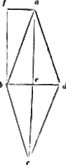
multiplicationem ex .ad. in .db., remanebunt .49. pro quadrato .dg.; ergo .dg. est .7.; quibus additis cum .bg., erit tota .bd., scilicet maior dyameter .24.; remanet .da. 10., que est minor dyameter. Iterum diuisi maiorem dyametrum per minorem, et egredietur ex diuisione 2/5 2., et area rumbi est .120.; quanta est ergo queque dyameter. Quoniam est sicut totum ad totum, ita quelibet pars est ad eandem partem. Erit itaque sicut maior dyameter est ad minorem, ita medietas maioris ad medietatem minoris; et medietas maioris est maius latus quadrilateri .ef., scilicet linea .ae.; et medietas minoris est linea .eb., scilicet minus latus. Nam omnes numeri, qui habeat unam et eandem proportionem, si diuidantur maiores per minores, semper ueniet idem ex diuisione. Ergo si diuiserimus maius latus quadrilateri .ef. per minus, prouenient similiter 2/5 2.; ergo talis est questio: area quadrilateri est .60., scilicet dimidium aree rumbi; et diuisi maius latus per minus, et prouenerunt 2/5 2.: et multiplica ita .1. per 2/5 2.; que multiplica per .60., erunt .144., quorum radix est .12.; que diuide per numeros proportionis, scilicet per .1., et per 2/5 2., egredientur 12 et 5., que sunt latera quadrilateri, scilicet dimidium dyametrorum; ergo maior dyameter est .24., et minor est .10. Nam si unde hec procedant noscere uis, adiaceat unitas .a.; et 2/5 2. sit .b.; multiplicetur .a. per .b., et proueniat .g.; et sit minus latus quadrilateri .d., maius quoque .e.; et area sit .f.; et quoniam ex diuisione maioris lateris per minus prouenit 2/5 2.; est sicut .1. ad 2/5 2., ita minus latus est ad maius, hoc est sicut .a. ad .b., ita .d. ad .e. Quare ductus .a. in .e. est sicut ductus .b. in .d. Sit ergo multiplicatio ex .a. in .e., uel ex .b. in .d. numerus .h.; et .h. multiplicetur in se, proueniat .t.: et multiplicetur quidem .d. in .f., et proueniat .k.: dico, numerum k equalem esse numero .i. Multiplicasti quidem .a. in .b., et uenit .g.; et .d. in .e., et uenit .f.; et .g. in .f., fecit .k.: ergo numerus .k. factus est ex multiplicatione .a. in .b. ducta in .d. et producta in .e. Item multiplicasti .a. in .e., et prouenit .h.; et .b. in .d., et prouenit similiter .h.; et ex .h. in .h. factus est .t.: ergo .t. factus est ex multiplicatione .a. in .e. ducta in .b. et producta in .d. Sed multiplicatio .a. in .b. ducta in .d. et producta in .e. equatur multiplicationi .a. in .e. ducta in .b. et producta in .d.; ergo .k. equalis est .t., ut prediximus. Multiplicauimus quidem superius .a. in .b., et que multiplicauimus per aream, scilicet .g. per .f., et habuimus numerum .k., hoc est numerum .i., qui fuit .144.; de quibus accepimus radicem, que fuit .h.; quia ex multiplicatione .h. in se prouenit .t.; ergo .h. est .12. Et quoniam ex .a. in .e. prouenit .h., scilicet .12.; et .a. est .1. Ideo diuisimus .12 per 1., scilicet .h per a, prouenit .12., quod est .e., scilicet maius latus. Item ex b. in d. prouenit .h., scilicet .12; et b est 2/5 2. Quare diuisimus .12, scilicet h, per b, scilicet per 2/5 2; et habuimus .d., scilicet minus latus, quod fuit .5. Nam si area, scilicet .f., esset .100, tunc k, scilicet .t., esset .240., cuius radix est .h. Sed 240. non habet radicem; unde cum non possumus diuidere .h. per .a. et per .b., accipiemus quadratos eorum, et in ipsis diuidemus numerum .t. Vel aliter accipiemus proportionem in sanis numeris, quam habet unitas .a. ad .b., eruntque .5. et 12. Sit ergo .a. 5., et .b. 12., et .g. 60. Quare .k. uel t erit .6000.; que diuidemus per quadrata numerorum .a et b., scilicet per 25, et per 144., egredietur per maiore latere radix ducentorum quadraginta; minus uero erit radix de 2/3 41. Vel aliter: pone latus minus rem, eritque latus maius due res et due quinte rei: multiplica ergo rem in duabus rebus et duabus quintis, erunt
f. 0084 · p. 77
duo census et due quinte census, que equantur aree date. Sit ergo area data .100.; que diuide per 2/5 2., proueniet 2/3 41; quorum radix est .d., scilicet latus minus. Et quoniam est sicut .a. ad .b., ita d. ad .e.; erit itaque sicut quadratus numeri .a. ad quadratum numeri .b., ita quadratus quantitatis .d. ad quadratum quantitatis .e. Quare multiplica quadratum numeri .b. per quadratum quantitatis .d., scilicet .144 per 2/3 41.; et multiplicationis summam diuide per quadratum numeri .a., scilicet per 25, egredientur .250., quorum radix est latus maius.
Incipit de rumboide differentia secunda.
RVMBOIDES quidem est figura paralilograma habens tantum latera opposita, et angulos ut diximus equales. Cumque hanc metiri uolumus, protrahemus in ea dyametrum, per quam figura diuisa erit in duo trigona equalia. Quare si cathetum unius per totam basem, scilicet per dyametrum ipsius multiplicauerimus, reddet aream totius rumboidis. Ad cuius rei euidentiam sit rumboides .abcd. habens in singulis lateribus .ab et cd. perticas .30., que sibi inuicem opposita et equidistantia sunt. Reliqua uero duo latera .ac. et .bd. similiter sunt equalia et equidistantia, continentia in uno quoque latere perticas .13.: et sit dyameter .bc. perticarum .37., a qua rumboides .abcd. in duo equalia trigona diuisus est, que sunt .abc. et .dbc.; utrumque ipsorum est ampligonium propter potentiam dyametri .bc., que est maior duabus potentijs laterum .ba. et .ac., uel .bd. et .dc. Supra basem quidem .bc. protrahatur cathetus a puncto .a. in trigono .abc.; sitque .ae.; et multiplicabis cathetum .ae. per basem .cb., et habebis aream totius rumboidis .abcd.; uel inuenies cathetum .df. in trigono .bcd. super basem .bc.; et multiplicabis ipsum cathetum .df. per basem .bc., et habebis similiter embadum rumboidis .abcd. Verbi gratia: Rumboides .abcd. est duplum trigono .bcd., cuius trigoni area colligitur ex multiplicatione catheti .df. in dimidium basis .bc.: quare multiplicatio catheti .df. per totam basem .bc. facit duplum aree trigoni .bdc.; ergo facit aream totius rumboidis, qui est duplus trigoni .bcd. Nam utramque cathetum .ae. et .df. inuenies esse perticas 27/37 9. Quibus 27/37 9. multiplicabis per dyametrum .bc., scilicet per 37, addunt perticas 360 pro area totius rumboidis .abcd. Similiter si extra trigonum .bcd. cathetum .bg. protraxeris supra basem .cg.; et multiplicauerimus ipsum cathetum .bg. per basem trigoni, scilicet per lineam .cd., habebis embadum totius rumboidis .abcd. Item multiplicato catheto .ch. per basem .ab., reddet eiusdem rumboidis embadum. Reperitur autem utraque cathetus per regulam, quam superius in trigono ampligonio demonstrauimus. Verbi gratia: extractis potentijs laterum ca et ab, uel bd et dc., scilicet 169 et 900. de potentia lateris .bc., scilicet ex 1369., remanent 300;
f. 0085 · p. 78
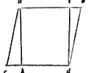

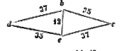

cuius dimidium si diuisum fuerit per basem .cd., scilicet per 30, reddit .5. pro quantitate .dg. uel .ah.; cuius potentia, scilicet .25., extracta ex potentia .bd., scilicet de .169., remanet .144.; cuius radix, scilicet .12., est cathetus .bg. Quo multiplicato per basem .cd., scilicet 12 per 30, reddunt perticas .360 pro embado dicti rumboidis, ut superius docuimus. Inuestigatur siquidem huius rumboidis area per duos alios cathetos, qui sunt .di. et .ak., qui reperiuntur per dyametrum .ad. et per latera rumboidis. Quia protracto ipso dyametro resoluitur ipse rumboides in duobus trigonis oxigonijs, ut in hac alia figura depingitur, quorum unum est trigonum .acd., aliud .abd.; et est cathetus .id., uel .ak. perticarum .12.: et notandum quia ab .a. in .i., ubicomque cathetum protraxerit infra rumboidem inter k et d., super lineam .kd. cadet. Nam casus catheti illius poteris inuenire per ea que in trigonis oxigonijs diximus, uel cum lensa quemadmodum in triangulis docuimus. EST enim quandoque rumboides, qui per breuiorem dyametrum resoluitur in duobus trigonis orthogonijs, ut rumboides .bcde.; cuius .bc et .de. latera sunt perticarum 35.; reliqua uero duo latera .bd et .ce. perticarum .37.; dyameter quoque .be. breuior sit perticarum 12. Dico quidem, rumboidem .bcde. diuisum esse in duo trigona orthogonia propter potentiam linee .ec., que equatur potentijs linearum .cb et .be. Quare rectus est angulus qui sub .cbe. Similiter reperitur rectus qui sub .bed. Et est equale trigonum .cbe. trigono .bed. Et quoniam ex multiplicatione catheti .be. in basem .ed. dimidium colligitur area trigoni .bed. Sed si multiplicauerimus itaque .be. dyametrum in .ed. latus, habebimus perticas .420. pro embado totius rumboidis .bc.de.: similiter fit rumboides, qui per unamquamque dyametrum diuiditur in duobus trigonis ampligonijs.
Incipit de figuris que habent capita abscisa de quibus IIIIor sunt genera in differentia prima.
PRIMVM genus tertię differentię camporum quadrilaterorum, qui habent duo latera equidistantia et inequalia, est figura, que eque caput abscisa dicitur, cuius reliqua duo latera equalia sibi inuicem sunt, ut quadrilaterum .abcd., cuius latus .ab. est pertice .8.; et est equidistans lateri .cd., quod latus est pertice 18; quodlibet reliquorum .ac. et .bd. sit pertice .13. In hac aut figura latus .a.b. capitis abscissio, et latus .cd. abscissio basis appellatur. Cuius figure embadum colligitur ex multiplicatione catheti in dimidio laterum .ab. et .cd.; et cathetus ducitur a capite in basim. Vnde si a puncto .a., uel a puncto .b. cathetum super basim .cd. erigere uolueris; abscisio capitis, scilicet .8., ex abscissione basis deme, scilicet de .18., remanent 10; cuius dimidium, scilicet .5., erit casus .ce. uel .df.: a puncto enim .a. cathetus cadit super .e.; a puncto uero .d. cadit super .f. Quare si potentiam .ce. ex potentia .ae., uel potentiam .df. ex potentia .bd., scilicet .25 de 169 extraxeris, remanebunt .144.; cuius radix, que est .12., est perpendicularis .ae. uel .bf.: quibus .12. multiplicatis in dimidium laterum .ab. et .cd., scilicet in dimidium de .26., hoc est in .13., reddent .156. pro embado ipsius quadrilateri .abcd. Verbi gratia: protractis cathetis .ae. et .bf. efficitur quadrilaterum parte altera longius .aefb.; cuius area colligitur ex multiplicatione catheti .ae. in .ef., equalis est lineę .ab.; ergo .ef. est pertice .8. In quibus multiplicatis perticis .12. catheti .ae. reddunt perticas .96. pro embado quadrilateri .aefb.: quo quadrilatero extracto ex quadrilatero .abcd., remanent duo trigona orthogonia et equalia, que sunt .aec. et .bfd.:
f. 0086 · p. 79multiplicatio enim catheti .ae. in dimidium .ec. reddit aream trigoni .aec. Quare multiplicatio linee .ae. in totam .ec. reddit embadum duorum trigonorum .aec. et .bfd., que multiplicatio est .60.; qua addita cum 96., scilicet cum embado quadrilateri .aefb., reddit .156., ut prediximus pro area quadrilateri .abcd. Nam si dyametrum .da. uel .cb. inuenire uolueris, potentiam linee .de. uel .cf., scilicet .169. cum potentia catheti .ae. uel .bf., scilicet cum .144. adde, erunt 313.; cuius radix est longitudo dyametri .da. uel .bc. Et si punctus in quo se intersecant dyametri habere uis, adde caput cum base, erunt .26.; que in se multiplica, erunt 676. Item caput .ab. in se multiplica, erunt .64.; et basis in se, erunt 324.: multiplica ergo .64. per quadratum unius dyametrorum, scilicet per 313, et diuide summam per 676.; uel quartum de 64, scilicet .16, multiplica per 313, et diuide per quartum de 676., hoc est per 169., exibunt 3/13 8/13 29.; quorum radix est linea .ag. uel .bg. Similiter multiplica quartum de 324., scilicet 81. per 313; et diuide summam per quartum de 676., scilicet per .169., et habebis quadratum linee .gc. uel .gd. Et nota, quia ideo accepimus quadrata predictarum linearum, quia 313, scilicet quadratum unius dyametrorum non habet radicem. Nam si dyameter rationabilis esset, multiplicauissemus eum per 8 et per 18, et diuisissemus summam eorum per 26; et sic haberemus abscissiones dyametrorum; que omnia uolumus geometrice demonstrare. Quoniam recta .ab. equidistans est linee .cd. Simile est ergo trigonum .agb. trigono .dgc.; et est angulus .abg. angulo .gcd. equalis; et angulus .bag. angulo .gdc. Quare est sicut .ab. ad .bg., ita .dc. ad .cg.; et permutatim est sicut .ab. ad .cd., ita .bg. ad .gc. Similiter est iterum sicut .ab. ad .cd., ita .ag. ad .gd. Est enim ab ex cd 4/9.; quare .bg. ex .gc., uel .ag ex gd. sunt similiter 4/9. Et quoniam disiuncte proportionales sunt, et coniuncte proportionales erunt: est ergo sicut .ab. ad se et ad .cd., hoc sicut 8 est ad .26.; uel 4 ad 13., qui minimi sunt eandem proportionem habentes, ita .bg. est ad totam .bc., et .ag. ad totam .ad.; ergo .bg. est ex .bc. 4/13., et .ag. ex .ad. similiter est 4/13. Quare si ratiocinata ex dyametro .bc. acciperemus 4/13., haberemus lineam .bg. uel .ag. Reliquum uero .gc. uel .gd. esset 9/13. ex toto dyametro. Sed quia quadratum dyametri, scilicet de .313., radicem non habet, accepimus quadrata de 4. et de 13, scilicet 16 et 169; et multiplicauimus 16 per 313, et diuisimus per 169.; quia cum est sicut .ab. ad se et ad .cd., ita .bg. ad .bc.; erit itaque sicut quadratum linee .ab. ad quadratum summe iunctionis linearum .ab. et .cd., scilicet sicut 64. est ad 676, uel sicut quartum de 64. est ad quartum de 676., scilicet 16. ad 169, ita quadratum linee .bg. est ad quadratum dyametri .bc., scilicet ad 313.; et in eadem proportione est quadratum linee .gc ad quadratum linee .ad. Quare recta .ag. equalis est recte .bg.; habent enim eandem proportionem ad equalia: et quoniam cum de equalibus equalia tolluntur, que remanent sibi inuicem equalia sunt. Equalis est ergo recta .gc. recte .gd.; et habent proportionem ad totum dyametrum, scilicet ad radicem de .313., sicut .cd. habet ad se et ad .ab. rectam. Que proportio est sicut .9. ad 13. Quare proportio quadrati linee .gc. uel .gd. est ad 313., scilicet ad quadratum dyametri, sicut quadratum de .9. est ad quadratum de 13, scilicet sicut .81. est ad 169. Quare multiplicauimus superius 81 per 313, et diuisimus per 169, et habuimus quadratum linee .gc. uel .gd.; que oportebat ostendere.
NAM si linea .ca et .db. in partes .ab. protrahantur, donec ad punctum .h.
f. 0087 · p. 80

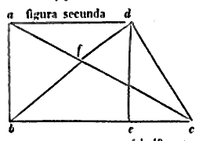
concurrant, ut in hac alia figura, in qua quadrilaterum abcd transmutatur in trigono hcd.; et uolueris scire quantitatem linee .ah. uel .bh. Dimidium capitis ex dimidio abscissionis basis extrahe, scilicet .4. de .9.; super reliquum uero, scilicet super .5., diuide multiplicationem dimidij abscissionis capitis in lineam .ca., scilicet de .4. in 13., exibunt 2/5 10. pro quantitate linee .ah. uel .bh.: et si multiplicaueris eadem 4 per cathetum .ae., scilicet per 12; et diuiseris per 5., exibunt 3/5 9 pro catheto trigoni .hab., scilicet pro linea .ih.: qua protracta usque in punctum .k., erit tota linea .hk. cathetus trigonj .hcd.: et quoniam in trigono .hcd. protracta est quedam recta ab equidistans basi cd., erit trigonum .hai. scilicet trigono .hcd., hoc est quod habent equales angulos adinuicem, scilicet angulus .hab. angulo .hcd., scilicet exterior interiori equalis est; et angulus .hba. angulo qui ad .d. similiter equalis est: comunis autem angulus, qui sub .ahb. Similia uero trigona circa equales angulos habent latera proportionalia, ut in geometria declaratur. Quare sicut latus .ha. est ad .ab., ita hc est ad .cd.; et sicut hb est ad .ba., ita .hd. est ad .dc.: permutatim ergo sicut .ha. est ad hc., ita hb. est ad hd., et .ab. ad .cd. Rursus sicut .ab., scilicet basis trigoni .hab. est ad basem .cd., ita latus .ha. est ad latus .hc., et hb. ad hd, nec non et cathetus .ih. ad cathetum .hk.; ergo que pars est .ab. ex .cd., scilicet .8. de 18., eadem pars erit .ha., scilicet 2/5 10. ex .ac., scilicet de 2/5 23.; et hb ex hd, et cathetus .ih. ex catheto .hk. Nam .8 de 18 est 4/9; quare .ha. ex hc. et hb. ex hd., nec non et .ih ex hk. sunt quatuor none. In hac etiam figura est trigonum .cea. simile trigono .aih., habent enim angulos equales. Angulus siquidem .hia. angulo .aec.; quia uterque ipsorum rectus est; et angulum qui ad .c. angulo .iah.; quia equidistans est linea .ab. linee .cd. Reliquum ergo qui sub .ahi. reliquo qui sub cae est equalis, propter tres angulos cuiuslibet trigoni, qui sunt duobus rectis equales. Est enim sicut .ce., scilicet .5., ad .ea., scilicet ad .12., ita .ai., scilicet .4., est ad .ih. Quare multiplicauimus superius .4 per 12.; et diuisimus per 5., et habuimus 3/5 9 pro catheto .hi. Item sicut .ec. est ad .ca., scilicet .5. ad .13., ita .ia., scilicet .4. est ad .ah. Quare multiplicauimus superius .4. per 13.; et diuisimus per 5, et habuimus 2/5 10 pro linea .ha.: per has enim proportiones inuestigantur altitudines: et longitudines: et profunditates rerum, ut in suo loco demonstrabimus. SECVNDVM uero genus huius tertię differentię est figura, que semicaput abscisa dicitur, cuius duo latera equidistantia sunt, sed non equalia. Reliqua uero duo inequalia, quorum unum eleuatur supra basem secundum rectum angulum, faciens similiter rectum angulum cum capite absciosionis (sic); reliquum uero latus eleuatur ab alia parte basis secundum acutum angulum, ut quadrilaterum .abcd., cuius latus .ad., scilicet caput, est equidistans basi .bc., cuius longitudo est pertice .18.; basis .bc. perticarum 30.; cathetus .ab. 16.; latus quoque .dc. 20. Ad habendam ergo aream totius quadrilateri adde 18 cum 30., scilicet caput cum base, erunt .48.; quorum medietas, scilicet .24., multiplica per lineam .ab., scilicet per .16.: ideo quia ipse erigitur orthogonaliter, erunt pertice 484 in embado quadrilateri .abcd. Verbi gratia: super rectam .bc. a puncto .d. cathetus .de. protrahatur; erit quidem quadrilaterum .abcd. in duo diuisum, scilicet in quadrilaterum .abcd. parte altera longius, et in trigono .dec. ortogonium; et est .be. equalis .ad., et .ad. est 18., et .be. est similiter .18.; et .de. cathetus catheto .ab. est equalis: est enim uterque illorum 16.; area ergo quadrilateri .abed. est .288., que colligitur
f. 0088 · p. 81
ex multiplicatione .de. in .eb., hoc est de 16. in .18.: area quidem trigonj .dec. colligitur ex multiplicatione catheti .de. in dimidium .ec., scilicet .16. in 6. faciunt .96.; quibus additis cum 288., scilicet cum embado quadrilateri .abed., reddunt 384. pro embado quadrilateri .abcd., ut predixi.
ET si dyametrum .ac. habere uis; quia orthogonium est trigonum .abc., adde potentias linearum .ab. et .bc., scilicet .259 cum .900., erunt .1156.; cuius radix, scilicet 34., est longitudo dyametri .ac. Item ut habeas dyametrum .bd., adde potentiam catheti .de. cum potentia basis .eb., scilicet 256. cum .324, erunt .580.; quorum radix, que est surda, est longitudo dyametri .bd. Quare dicemus, dyametrum .bd. radicem esse de 580.; uel quadratum dyametri .bd. esse .580. Sed ut sciamus intersecationem dyametrorum, faciemus ut supra, uidelicet addemus capud cum base, scilicet .18. cum 30, erunt .48.: est ergo sicut .18 ad .48., ita .af. est ad totum dyametrum .ac. Nam .18. ad .48. est sicut 3 ad .8. Quare est sicut .3. ad .8., ita .af. est ad .ac. Quare multiplicabis .3 per 34, et diuidemus per 8., hoc est 3 per 17; et diuidemus per 4., exibunt 3/4 12. pro linea .af. Reliquum quod est usque in .34., scilicet 1/4 21., est linea .fc. Similiter quia simile est .afd. trigono .bfc., erit sicut .af. ad .ac., hoc est sicut .3 est ad .8., ita .df. est ad .db.; ergo .df ex .db. est 3/8; remanet .fb. 5/8 ex .db. Sed quia surda est linea db., accipiemus proportionem earum in quadratis ipsorum. Est ergo quadratum de .3. ad quadratum de .8, hoc est sicut .9. est ad .64., ita ad quadratum dyametri .bd., scilicet ad 580. est quadratum linee .df.: quare multiplicabimus .9. per 580., et diuidemus summam per 64.; uel multiplicabimus .9. per quartum de 580., scilicet per 145., et diuidemus summam per quartum de .64., scilicet per .16.; quia semper debemus imitari modum euitationis. Quem in libro abbaci docuimus, scilicet accipere minimos numeros eandem proportionem habentes in multiplicationibus et diuisionibus: Est enim .580 ad 64., sicut quarta de 580. ad quartam de 64, exibunt 9/16 81. pro quadrato linee .df. Rursus quia linea .fb. est 5/8 ex dyametro .bd.; multiplicabis quadratum de 5, scilicet 25 per 145, et diuidemus summam per .16., exibunt 9/16 226 pro quadrato linee .fb.
NAM si in partes .a et d. recte .ba. et .cd. protracte fuerint. donec se tetigerint in punctum .g., ut in hac alia figura ostenditur; et uolueris scire quantitatem linee .ag.; multiplica quidem .ed. per .da., scilicet .16 per 18, et diuide per .ce., scilicet per 12., exibunt .24. Est enim simile trigonum .dec. trigono .gad.; quare est sicut .ce. ad .ed., ita .da. ad .ag.: per equale enim erit sicut .ec. est ad .cd., ita .ad. est ad .dg. Quare multiplicato .cd., scilicet .20., per .da., scilicet per 18; et diuiso per ec., reddit .30 pro quantitate .dg., ut suprascripta figura ostenditur.
TERTIVM uero genus ex hac tertia differentia est figura, que diuersecaput abscisa dicitur. cuius caput et basis sunt equidistantia et inequalia sunt. Reliqua uero latera eleuantur supra basem secundum acutum angulum; et sunt inequalia, ut quadrilaterum .abcd., cuius caput .ab. est perticarum .10.; et est equidistans basi .cd., que est perticarum .24.; latus quoque .ac. est .13.; latus uero .bd. pertice .15.: huius enim figure embadum colligitur ex multiplicatione catheti, qui deducitur a capite in basem in dimidium capitis et basis. Nam si ipsam cathetum a puncto .a., uel a puncto .b. supra basem .cd. protrahere uolueris, oportet primum inuenire casus ipsorum cathetorum; quorum inueniendj modus est, ut extrahas caput a base, scilicet .10. de 24, remanent .14.: de
f. 0089 · p. 82
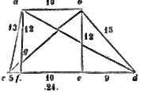

inde extrahe potentiam lateris .ac., scilicet .169., ex potentia lateris .bd., scilicet de 225, remanent .56.; que diuide per .14. suprascripta, exibunt .4.; que adde cum .14., erunt 18.; cuius dimidium, scilicet .9., est casus longior .de. a parte lateris .bd.: a quibus .9. usque in 14. desunt .5., que sunt casus breuior .fc. a latere .ac., ut in trigonis acutiangulis diximus. Extracta quidem potentia minoris casus, scilicet ex .cf., que est .25., ex potentia lateris .ac., scilicet .169., remanent .144.; cuius radix, scilicet .12., est cathetus .af. Similiter extracta potentia .ed. ex potentia .bd., remanebit potentia .be. 144.; quare .be. est .12., sicut .af.: addictio quidem capitis et basis, scilicet .10. et .24., faciunt .34.; quorum dimidio, scilicet .17., multiplicato per cathetum .af., uel .be., scilicet per 12., reddunt .204. pro embado quadrilateri .abcd.
QVADRATVM quoque dyametri .cb. colliges si quadratum linee .ce. cum quadrato catheti .eb. coadunaueris, et est .369., quorum radix est dyameter .cb. Nam si ubi intersecat cathetum .af. scire desideras, hoc dupliciter facere potueris: primum quidem quia equidistans est linee .ab linee .cf., est sicut .ab. ad se et ad .cf., ita .ag. est ad .af.; ergo .ag. est 2/3 ex .af., scilicet .8., remanet .gf. 4. Sunt enim similia trigona .agb. et .cgf. Similiter et .bg. est 2/3 ex .bc. Similiter quadratum eius est 4/9 ex quadrato ipsius dyametrj. Quare multiplica .4. per 369, et diuide per 9.; uel nonam de 369 multiplica per .4., erunt .164 pro quadrato linee .bg. : et quia .bg. est 2/3 ex .bc., remanet .gc. 1/3 ex .bc.; quare quadratus eius est 1/9 de 369, scilicet .41. Aliter quia similia sunt trigona .ceb. et .cfg., est sicut .cf. ad .ce., ita .fg. ad .eb., scilicet tertia pars. ergo .fg. est .4. ut predixi. Similiter propter eandem et cg est 1/3 ex cb., et cetera.
POSSVMVS enim, secundum ea que dicta sunt in hac parte, etiam et in trigonis reperire dyametrum .da.; et scire ubi intersecat cathetum .be., nec non ubi se secat cum dyametro .bc., etiam si ab angulis .cd., uel ab aliquo puncto dato super rectam .cd., uel intus, uel extra figuram protraheretur linea super datas partes laterum .db. uel .ca.; et emitteretur extra figuram pariter cum linea .ab., donec insimul coniungerentur, possumus scire punctum coniunctionis ipsarum, nec non et quantitatem linearum protractarum. Nam si latera .ca. et .db. extra educere uolueris, donec ad punctum .h. concurrant caput, scilicet 10 ex base, scilicet de .24 extrahe reliquum, scilicet per 14. diuide multiplicationem capitis .ab. in latus .ac., scilicet de .10. in .13, exibunt 2/7 9 pro linea .ah. Similiter si diuiseris multiplicationem .ab. in .bd., scilicet de .10. in .15. per 14., uenient 5/7 10. pro longitudine linee .bh. QVARTVM uero genus est figura, que caput abscisa declinans dicitur, cuius caput et basis sunt inequalia et equidistantia. Ex reliquis duobus lateribus unum supra basem eleuatur secundum acutum angulum. Reliquum super eandem basem facit angulum amplum, ut in quadrilatero .abcd. subscripto, cuius caput .ad. est pertice .12.; basis uero .bc. pertice .16.; latus quoque .ab. pertice .15.; latus quoque .dc. pertice .13.: hec etiam figura colligitur ex multiplicatione catheti in dimidium capitis et basis ipsius. Nam a puncto .a. supra basem .bc. cathetus cadit infra quadrilaterum .abcd.; a puncto uero .d. cathetus cadet extra. Quare ut inueniamus quantitatem catheti interioris uel exterioris, oportet ut inueniatur primum casus ipsius. Cuius inueniendi modus est, ut extrahatur caput a base, scilicet .12. de .16., remanent .4.; quorum potentia, scilicet 16, addatur cum potentia lateris .cd., scilicet cum .169., erunt 185.; que extrahantur ex potentia .ab., scilicet de .225., remanent
f. 0090 · p. 83
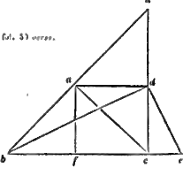


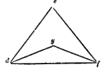
.40.; quorum dimidium, scilicet 20, diuidenda sunt per suprascripta .4., exibunt .5. pro exteriori casu .ce., ut in trigono ampligonio demonstrauimus: quibus .5. additis cum base .cb., scilicet cum .16., reddunt .21. pro tota linea .eb.; ex qua extractis .12., que sunt quantitas capitis, remanent .9. pro quantitate casus .fb. interioris. Quare extracta potentia ex .fb., scilicet .81., ex potentia lateris .ba., scilicet .225.; uel extracta potentia .ce., scilicet .25., ex potentia .cd., scilicet ex 169, remanebunt .144.; quorum radix, scilicet .12., est cathetus .af. uel .de.: quibus scilicet 12 multiplicatis per dimidium capitis et basis, scilicet per 14., reddunt perticas .168. pro area totius quadrilateri .abcd. In similibus quoque figuris, que capita declinantia nuncupantur, duo catheti que producuntur ab angulis capitis in basem, quandoque una cadit interius, et alia exterius, ut in suprascripta figura. Quandoque una cadit interius super angulum basis, qui oppositus est ei angulo, a quo cathetus producitur: et alia cadit exterius; quandoque utreque cadunt exterius, ut in his subscriptis figuris ostenditur; quarum figurarum catheti inueniuntur, secundum quod superius demonstrauimus. QVADRATVM quidem ex .be. est .441., et .ed. est .144.; quibus in unum coniunctis faciunt 585. pro quadrato dyametri .bd. Item quadrato linee .cf., scilicet .49., addito cum quadrato catheti .fa., scilicet cum .144., egredientur .193. pro quadrato dyametrj .ac. Secationem uero dyametrorum per ea que superius dicta sunt habere potes. Verum si in partes .a.d. latera .ba. et .cd. in puncto .k. protraxerimus, erit quidem ka. ad kb., et kb et kd. ad kc., sicut .ad. est ad .bc., hoc est 3/4. Quare .ab. ex kb., et dc ex kc. sunt quarta pars. ergo .ka. est triplum ex .ab., et kd. ex .dc. Quare ka. est .45., et kd est .29.
SI QVADRILATERI latera nequaquam equidistantia fuerint, ut in quadrilatero .abcd., cuius latus .ab. est pertice .13.; latus quoque bc sit pertice .15.; latus quoque .dc. pertice .17.; latus quoque da pertice .16.; quod quadrilaterum mensurati (sic) potest, si habeatur notitia unius dyametrorum, a quo ipsum quadrilaterum diuiditur in duo trigona, quorum area in unum coniuncta reddit aream totius quadrilateri. Verbi gratia: sit dyameter .ac. pertice .14., eritque area trigonj .abc. pertice .84.; trigonj .acd. pertice 1/3 104.; quibus areis in unum coniunctis reddunt 1/3 188. pro embado tutius quadrilateri .abcd.: et est hic modus uniuersalis in omnibus quadrilateribus. Vel aliter a puncto .a. protrahatur recta .ae. equidistans lateri .bc.; et secundum ea que dicta sunt in precedenti parte accipiatur area quadrilateri .abce., cui superaddatur triangulus .ade., et habebitur area totius quadrilateri .abcd. Preterea est figura, que barbata dicitur, similiter diuersa habens latera, in qua una ex dyametris cadit interius, altera uero exterius, ut in quadrilatero .defg., cuius dyameter .eg. cadit interius a puncto .f. in puncto .d., cadit linea .fd. extra quadrilaterum .d.e.f.g.: huius itaque figure aream habebis, si aream trigonj .deg. cum area trigonj .feg. coadunaueris; uel si ex area trigonj .def. dempseris aream trianguli .d.g.f.
Incipit pars tertia in dimensione camporum plura latera quam quatuor habentium.
MODVS itaque metiendi multilateras figuras est, ut diuidas ipsas in trigonos, et areas omnium trigonorum in unum colligas, et sic habebis aream cuiuslibet multilaterę figurę. Et notandum quia multilatera figura, que constat ex quinque lateribus, soluitur adminus in tria trigona. Que uero constant ex sex lateribus in quatuor; et sic semper omnis multilatera figura soluitur in duo trigona minus laterum ipsius. et quamuis
f. 0091 · p. 84
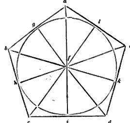
per resolutionem ipsarum in trigona multilatere figure mensurare possint, tamen quandoque subtilius in quibusdam procedere possumus, scilicet cum figura fuerit penthagona, hoc est ex quinque lateribus; et poteris ex ea facere duo petia, quorum unum erit trigonum, et alterum fit quadrilaterum, in quo latera ipsius erunt equidistantia, ut in penthagono .abcde., ex quo absciso trigono .abe., remanet quadrilaterum .ebcd. caput abscisum, cuius .be. latus equidistans est lateri .cd.; tunc colliges aream trigoni .abe., et addes eam cum area quadrilateri .bcde., et habebis aream penthagoni .abcde. Similiter cum possibile fuerit de exagono, scilicet ex figura que habent sex latera, facies duo quadrilatera, quorum unumquodque habeat duo latera equidistantia. Vel faciat inde unum quadrilaterum, quod habeat duo latera sibi inuicem equidistantia, et duo trigona; et sic studeas in reliquis figuris multilateribus operari. Verum si figura multilatera fuerit equilatera et equiangula, quam metiri desideras, aliter quam dictum sit, poteris ad ipsius embadum peruenire, cum in ipsa cadat circulus contingens medium unius cuiusque laterum ipsius. Multiplicabis itaque semidyametrum ipsius circulj per dimidium laterum ipsius figurę, et habebis embadum ipsius. Ad cuius rei euidentiam adiaceat penthagonum equilaterum et equiangulum .abcde. In quo uolumus describere circulum contingentem laterum ipsius, quod sic fit: diuidam angulos .eab. et abc. in duo equa á duobus (sic) lineis .af et fb., et protraham lineas .fc. fd. fe., et signabo puncta .g.h.i.k.l. in medio laterum ipsius, et copulabo lineas .fg. fh. fi. fk. fl.; quas demonstrabo esse sibi inuicem equales. Quoniam equiangulum est penthagonum .abcde., erit angulus .fab. equalis angulo .fba.; cum sint dimidium angulorum penthagoni. Quare trigonum .fab. est equicrurium habens latera equales angulos subtendentia sibi inuicem equalia. Quare equalis est recta .fa. recte .fb. et .fg., que est cathetus super lineam .ab., cum cadat in medio ipsius: est enim .la., cum sit medietas recte .ae., equalis recte .ag.: comuniter adiaceat recta .fa., erunt due recte .ga. et .af. equales duobus rectis fa et al.; et angulus qui sub .gaf. equalis est angulo qui sub .fal.: quare et basis .fl. equalis est basi .fg.; et angulus .afl. equalis est .afg. angulo .agf., rectus qui sub .agf., et qui sub .alf. erit rectus: quare recta .fl. cathetus est
f. 0092 · p. 85
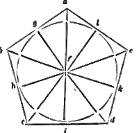

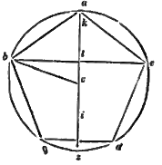
super rectam .ae.; et quia .al. equalis est recte .el., si comuniter adiaceat recta .fl., erunt duo recte .fl. et .la. equales duabus rectis .fl. et .le.; et anguli qui ad .l. sunt equales; cum rectus sit uterque eorum: quare recta .fe. equalis est recte .fa.; et trigonum .afl. equale est trigono .lfe.; et totum trigonum .bfa. est equale toti trigono .afe. Similiter ostendetur, quamlibet rectarum .fh. fi. fk. equalem esse cuilibet rectarum .fg. fl. Quare centro .f. spatio unius rectarum .fg. fh. describetur circulus .ghikl., et erit penthagonum .abcde. diuisum in quinque trigona equalia, que sunt .fab. fbc. fcd. fde. fea.; et catheti cadentes in ipso sibi inuicem sunt equales, qui sunt .fg. fh. fi. fk. fl.: et quia ex ductu .fg. in dimidium .ab. prouenit area trigoni .fab.; si multiplicauerimus semidyametrum circulj cadentis in penthagono, scilicet .fg., in quincuplum medietatis .ab., hoc in medietate laterum penthagonj .abcde., proueniet utique quincuplum aree trigonj .fab., hoc erit area penthagonj .abcde., ut prediximus. Similiter ueniet in omnj figura equilatera et equiangula, in qua cadit circulus. Ex hoc enim manifestum est, quod multiplicatio semidyametrj circulj in plus medietate linee circumferentis facit plus embado ipsius circulj. Possumus autem penthagonum equilaterum et equiangulum alio modo metirj, cum cadat in circulo contingente omnes angulos ipsius. Multiplicetur quidem medietas, idest dodrans et quarta ipsius dyametrj, per medietatem, idest destunce et tertiam cordę anguli penthagonicj, et habebis embadum ipsius: ad cuius rei euidentiam sit penthagonum .abgde. descriptum in circulo .abgde., cuius dyameter sit .az., et centrum eius sit .c.; et copuletur recta .be., que est corda anguli penthagonicj .bae.; et accipiatur .c.i. medietas semidyametrj .cz., et erit tota .ai. medietas et quarta totius dyametrj .az.; et sit sicut .ai. ad .ac., ita .te. ad .tk.: est enim .ac. ex .ai. due tertie: similiter et .tk. est due tertie ex .te., hoc est ex .tb.; quare .tk. est tertia pars totius cordę .be.; quare .bk. est medietas et tertia cordę .be. Dico quidem quod ex multiplicatione .ai. in .bk. prouenit embadum penthagonj .abgde.; quod sic probatur: quia est sicut .ia. ad .ac., ita .te. ad .tk.; erit multiplicatio .ca. in .te., hoc est ex .tb.; equalis quidem est .bt. ex .te.; equalis multiplicationj .ia. in .tk. Sed ex multiplicatione .ca. in .bt. prouenit duplum trigonj .cba.; ergo ex ductu .ia. in .tk. prouenit duplum trigonj .cba.: et quia .tk. dupla est ex .ek.; si multiplicauerimus .ia. in .ek., proueniet equale trigono .cba., quod est quinta pars totius penthagonj .abgde. Quare si multiplicauerimus .ai. in .bk., scilicet quincuplum ex .ke., proueniet utique quincuplum aree trigonj .cba.: sed quincuplum trigonj .cba. est equale penthagono .abgde.; ergo ex ductu .ai. in .bk. prouenit embadum penthagonj .abgde., ut predixi. Et notandum, quod si dyameter circulj fuerit ratiocinatus, tunc latus penthagonicum cadens in ipso erit linea minor, scilicet radix recisi quarti, uel abscisionis quartę; que abscisio constat ex numero minus radice: quorum duorum nominum maius nomen potest super minus, eo quod ab incommensurabilj sibi longitudine et corda anguli penthagonicj erit linea maior, scilicet radix binomij quartj; quod constat ex numero et radice, cuius nomen maius potest plus minore, eo quod ab incommensurabilj sibi longitudine sunt eorundem nominum latus penthagonicum et corda angulj penthagonicj: ut si latus penthagonicum .ab. fuerit radix de .40. minus radice de .320.; et corda .be. erit radix de .40., et radicis de 320.; et hoc est cum dyametrum .az. ponimus esse .8., ut in suo demonstrabitur loco.
f. 0093 · p. 86

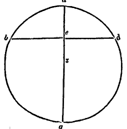
SI uero campus rectilineus non fuerit, ut quadrilaterum .abcdez., cuius duo latera .az. et .cd. sunt rectilinea, reliqua uero .abc. et .dez. sunt curua; qualiter ipsum etiam et similia mensurarj debeas, indicabo. Ex .a. quidem in .c. et ex .z. in .d. recte protrahantur .ac. et .dz.; deinde quadrilaterj .acdz. rectilinej aream, secundum ea que dicta sunt, colligere studeas; super quam aream uentris .zed. superadde; et ex quo toto diminuas aream uentris .abc., et habebis aream quesitj campi. Nam qualiter habeatur area uentris .zed. indicabo : super dimidium arcus .zed. punctum fige .e., et copulabis rectas .ez. ed., et erit trigonum .ezd. rectilineum, et remanebunt ex toto uentre .zed. uentres .zge. et .ead.; in unoquoque quorum, si eodem modo trigona rectilinea ordinaueris, remanebunt uentres IIIIor, quos solueris eos in triangulos rectilineos; et hoc eodem modo si semper fiet in reliquis uentribus, ueniet aliquando quod ex toto uentre .zed. non remanebit aliquid sensibile: unde si arem omnium trigonorum contentorum infra uentrem .zed. coniunxerit, habebis siquidem aream uentris .zed. Similiter si eodem modo processeris in uentre .abc., habebis utique aream ipsius.
Incipit Pars Quarta Tertie Distinctionis de Mensuratione Circulorum¶
Versio Anglica: Archimedes’ Circle Measurement (pp. 88–91) · Commentarius: Notae ad Mensurationem Circuli
Incipit pars quarta in dimensione circulorum et eorum partium.
CVM itaque campum rotundum, idest circulum, mensurare desideras, ipsius dyametrj notitiam habeas; quem in 1/7 3 multiplica, uel in .22 extende; et quod ex multiplicatione prouenerit per 7 partire, et habebis quantitatem linee circumferentis, et continentis ipsum circulum. Cum dimidium dyametrj per dimidium circumferentis lineę duxeris, nimirum area ipsius circulj inde proueniet : uel ex quadrato sui dyametrj undecim quartas decimas accipe; et habebis similiter circuli embadum. Vel si secundum pisanum modum mensurare desideras, dyametrum in se multiplica; et quod prouenerit diuide per 7, et habebis panora embadj ipsius circulj. Et ut hec omnia apertius declarentur; adiaceat circulus .abgd., in quo sumantur duo puncta .b.d.; et copuletur recta .bd., et diuidatur in duo equa super .e. punctum, á quo protrahatur recta .ag., faciens rectos angulos cum recta .bd.; et erit utique recta .ag. dyameter circulj, in cuius dimidio est centrum ipsins circulj, quod sit .z.; et ponamus, dyametrum .ag. esse .14 perticarum; que si multiplicauerimus per 1/7 3., prouenient pertice .44. pro linea circumferente .abgd.; que uocatur periferia: uel 14. per 22 multiplica; et quod prouenerit diuide per 7, et uenient similiter 44 pro curua .abgd.; cuius dimidium, scilicet .22., si per dimidium dyametrj multiplicauerimus, prouenient 154 pro embado circulj .abgd. Vel si de quadrato dyametrj, quod est 196., acceperis 11/14, scilicet multiplicabis 196 per 11, et diuides per 14.; uel quartam decimam partem de 196., que est .14., extende per .11., et prouenient similiter 154 pro embado ipsius. Similiter si dyametrum in se multiplicauerimus, erunt 196; quibus diuisis per 7, uenient panora 28 pro embado circulj .abgd., quibus equantur pertice 154. superius inuente; cum unumquodque panorum contineat perticas 1/2 5. ET si per notitiam circumferentis linee dyametrum circulj habere desideras, ipsam in 1/7 3 diuide, hoc est septuplum eius diuide per 22. Verbi gratia : sit linea circumferens 44.; quorum septuplum si diuiserimus per 22; uel si uigeximamsecundam partem de 44 multiplicauerimus per .7., nimirum .14. pro eius dyametro prouenient: et si embadum circulj ex linea circumferente tantum habere desideras, quadratum medietatis ipsius per 7 multiplica; et quod proueniet diuide per 22. Verbi gratia : medietas curuę .abgd. est 22, quorum quadratum est .484.; quod per 7 multiplicatum facient 3388.; quibus per
f. 0094 · p. 87
22 diuisis, ueniunt 154., ut superius inuenimus: uel si 484 diuiserimus per 22, uenient .22; quibus multiplicatis per 7 faciunt similiter 154. ET si dyameter circulj fuerit .10., erit utique circumferens linea 2/7 31., que proueniunt ex multiplicatione .10. in 1/7 3. Quare si dimidium dyametrj, scilicet .5., multiplicauerimus per dimidium circumferentis lineę, scilicet per 5/7 15, uenient 4/7 78. Vel si quadratum dyametrj, scilicet 100., multiplicauerimus per 11, et summam diuiserimus per 14.; uel si .11. multiplicauerimus per dimidium de 100, et summam diuiserimus per dimidium de 14, scilicet per 7, proueniunt utique 4/7 78 pro area suprascripti circulj. Vel si 100 diuiserimus per 7, prouenient panora 2/7 14., que equantur perticis 4/7 78 suprascriptis. Et si 2/7 unius panori in usitatas partes reducere uis, scilicet in soldos et denarios, multiplica 2, que sunt super uirgam, per soldos unius panori, erunt soldi 33; quos diuide per 7, uenient soldi 4 et denarii 4/7 8 mensurę. Ergo pro embado suprascripti circulj habetur stariorum unum et panora duo et soldi IIIIor et denarii 4/7 8; et sic studeas facere in similibus. Verum si nosse uis unde habeatur quod ex multiplicatione semidyametrj circumferentię dimidium embadum circulj proueniat, reiterabo circulum .abgd., cuius centrum sit .e.; et describam in ipso rectilineum aliquod, et quotcumque uoluerit laterum; et sit quadrilaterum .abgd., quod resoluam á centro .e. in quatuor trigona, uidelicet secundum numerum laterum ipsius, que sint .eab. ebg. egd. eda.; et est equicrurium unumquodque ipsorum; cum linee .ea. eb. eg. ed. sibi inuicem sint equales; sunt enim á centro ad periferiam ducte: quare si in ipsis trigonis catheti producantur á centro .e., cadet unusquisque super dimidium basis sui trigoni. Quare ponamus super dimidium ipsorum trigonorum puncta basium .z.i.t.k., per que puncta producantur á centro .e. ad periferiam recte .el. em. en. eo.; et copulentur .al. lb. bm. mg. gn. nd. do. oa., et erunt quatuor trigona super bases ab. bg. gd. da. constituta: et quoniam recta .ez. cathetus est super rectam .ab.; si multiplicauerimus .ez. in dimidium .ab., prouenient utique embadum trigonj .eab. Similiter quia .lz. cathetus est trigonj .lab., proueniet utique ex .zl. in dimidium .ab. embadum trigonj .lab. Quare si multiplicauerimus totam .el., scilicet semidyametrum circulj, in dimidium .ab., proueniet utique embadum quadrilateri .ealb. Simili quoque modo si multiplicauerimus .em., scilicet .el., in dimidium linee .bg., proueniet embadum quadrilateri .ebmg. Eodemque modo si multiplicauerimus .en. in dimidium .gd., et .eo. in dimidium .da., prouenient embada quadrilaterorum .egnd. et .edoa.; hoc est si multiplicauerimus .el., scilicet semidyametrum in dimidium laterum quadrilaterj .abgd., proueniet embadum multilaterę figurę cadentis in circulo. Sed embadum ipsius multilaterę figure, que est .albmgndo., est minor embado circulj. Ergo ex multiplicatione semidyametrj circulj in dimidium rectarum .ab. bg. gd. da. proueniet minus embado circulj. Sed dimidium linearum .abgd. minus est medietate circumferentię .abgd. Ergo ex multiplicatione semidyametrj circulj in minus dimidio circumferentię ipsius circulj facit minus embado circulj : demonstrauimus itaque in preterita parte in dimensione multilaterum figurarum continentium circulum, quod ex multiplicatione semidyametrj circulj in plus medietate circumferentię ipsius prouenit plus embado circulj. Quare concluditur, quod ex multiplicatione semidyametrj circulj in dimidium lineę circumferentis prouenit embadum ipsius. Sed querendum rursus est vnde procedat inuentio embadj circulj per
f. 0095 · p. 88adsumptionem undecim quartarum decimarum quadrati sui dyametrj. Quoniam embadum alicuius circulj ad embadum alterius est sicut quadratum dyametrj unius ad quadratum dyametrj alterius, ut Euclides in secundo theoremate duodecimj sui libri demonstrauit. Erit permutatim sicut quadratum dyametrj alicuius circulj ad embadum ipsius, ita omnia quadrata dyametrorum omnium circulorum erunt ad embada ipsorum circulorum. Quare cum inuenta fuit proportio quadrati dyametri unius circulj ad suum embadum, tunc fuit inuenta proportio quadrati dyametrj unius cuiuslibet circulj ad suum embadum. fuit enim quadratum dyametrj suprascripti circulj 196., et embadum ipsius .154., quorum proportio est sicut 14 ad 11. in minimis numeris. Quare erit sicut 14 ad quadratum dyametrj cuiusuis circulj, ita .11. erit ad embadum ipsius. Vnde cum multiplicauerimus .11. per quadratum dyametrj cuius uis circulj; et summam diuiserimus per .14., proueniet embadum ipsius circulj; quod oportebat ostendere. Similiter si perticas 154 redigemus in panora, uenient panora 28. Ergo erit sicut 196 ad panora .28., ita quadratum dyametrj cuius uis circulj erit ad panora continentia embadum ipsius. Sed 196 ad .28. sunt sicut .7 ad .1.; quare erunt sicut .7. ad .1., ita quadratum dyametrj cuius uis circulj erit ad panora embadi ipsius. Quare si ex quadrato dyametrj cuius uis circulj septimam acceperimus, nimirum panora, que sunt in embado ipsius circulj, prouenient, ut superius demonstrauimus. Et notandum, quia que proportio est unius quantitatis ad aliam, eadem erit cuius uis multiplicis unius ad idem multiplex alterius. Quare que proportio est dyametri antecedentis circulj ad dyametrum consequentis, eadem erit linee circumferentis antecedentis circulj ad lineam circumferentis consequentis. Et eadem erit proportio medietatis lineę circumferentis antecedentis circulj ad medietatem linee circumferentis consequentis. Quare erit sicut quadratum diametrj antecedentis circulj ad quadratum dyametrj consequentis, ita quadratum semicircunferentie antecedentis ad quadratum semicircunferentię consequentis: et quia est sicut quadratum dyametrj antecedentis circulj ad quadratum dyametrj consequentis, ita embadum ad embadum: erit utique sicut quadratum semicircunferentię antecedentis circulj ad quadratum semicircunferentię consequentis, ita embadum antecedentis circulj ad embadum consequentis: permutatim ergo erit sicut quadratum semicircunferentię antecedentis circulj ad suum embadum, ita quadratum semicircunferentię consequentis erit ad suum embadum; fuit medietas lineę circumferentis supradictj circulj 22, cuius quadratum est 484; et embadum eius fuit 154.; quorum proportio in minimis numeris est sicut 22 ad .7; ergo sicut 22 est ad .7, ita quadratum semicircunferentis lineę cuius uis circulj erit ad suum embadum. Quare cum multiplicantur .7 per quadratum semicircunferentis linee alicuius circulj; et summa diuiditur per 22, prouenit utique embadum ipsius circulj.
OSTENDENDVM est etiam quomodo inuentum fuit, lineam circumferentem omnis circulj esse triplam et septimam sui dyametrj ab Archimenide phylosopho; et fuit illa inuentio pulcra et subtilis ualde: quam etiam reiterabo non cum suis numeris, quibus ipse usus fuit demonstrare; cum possibile sit cum paruis numeris ea que ipse cum magnis ostendit plenissime demonstrare. Adiaceat quidem circulus .abgd., cuius dyameter sit linea .ag.; et centrum eius sit .c.; et protraham lineam .ez. contingentem circulum super punctum .a. Quare dyameter .a.g. cathetus est super rectam .ez.: deinde super rectam .ac.; et in ipso puncto .c. protraham angulum .ace., qui
f. 0096 · p. 89sit tertia pars recti; quare angulus .aec. erit 2/3 unius anguli recti, cum angulus .eac. sit rectus. Sunt enim omnis trigonj tres anguli duobus rectis equales: et iaceat .az. equalis recte .ae.; et copuletur recta .cz., et erit trigonum .caz. equale trigono .cae.; et angulus .cza. equalis est angulo .cea.: est enim unus quisque eorum 2/3 angulj recti. Similiter cum angulus .ecz. duplus sit angulo .eca., erit similiter angulus .ecz. 2/3 angulj recti: equiangulum ergo est et equilaterum trigonum .cez.; quare recta .ez. erit latus exagonj equilaterj et equiangulj continentis circulum .abgd. Quibus ita per ordinem peractis, ponam .ce. esse 30; quare .ae. erit 15: et quia orthogonion est trigonum .cae., si ex quadrato lateris .ce. tollatur quadratum lateris .ae., scilicet .225 de 900, remanebunt 675 pro quadrato lateris .ca.; ergo latus .ca. est radix de 675: quam si subtiliter ceperemus, inueniemus, ipsam esse secundum propinquitatem perticarum .26. minus unceis 1/13 2. Constat enim pertica ex unceis .108.: deinde diuidatur angulus .eca. in duo dimidia á linea .cf., que diuidet arcum .ab. super punctum .y. Et cum habeatur ex demonstrationibus Euclidis, equales angulos á centro super equales periferias consistere; equalis est ergo periferia .ay. periferie .by.: fuit itaque .ae. semilatus exagonicj. Quare et .af. erit semilatus dodecagonj continentis circulum .abgd. Et quia angulus .eca. in duo equa diuisus est á linea .cf., proportionaliter erit sicut .ec. ad .ca. ita .ef. ad .fa., ut Euclides in sexto declarauit libro: quare erit sicut coniunctum ex .ec. et .ca. ad .ea., hoc est sicut 56 minus unceis 1/13 2 est ad .ea., ita coniunctum ex .ef. fa., quod est .15., ad lineam .fa.: permutatim ergo erit sicut coniunctum ex .ec. et .ca. ad .ea., hoc sicut 56 minus unceis 1/13 2 sunt ad 15., ita .ca. erit ad .af. Quare ponam .ea. esse 56 minus 1/13 2, et .af. erit 15. Quare si coniunxerimus quadrata linearum .ca. et .af., habebimus pro quadrato linee .cf. 3359 minus unceis 2/3 16; quorum radix, que est 58, minus unceis 4/5 4, est latus .cf. Deinde diuidam angulum .fc. in duo equa á linea .ch.; et erit .ah. semjlatus figure equilaterę habentis latera .24., et descripta circa circulum .abgd.: et quia angulus .fca. diuisus est in duo equa á linea .ch., erit proportio coniuncti ex .fc. et .ca. ad .ca. sicut .fa. ad .ah.: permutatim ergo erit sicut coniunctum ex .fc. et .ca. ad .fa., hoc est sicut 114 minus unceis 7/8 6 ad .15., ita .ca. ad .ah.: quare ponam .ca. esse .144 minus unceis 7/8 6, et .ah. erit 15; quare si ex coniunctione quadratorum ipsorum radicem acceperimus, habebimus 115 minus unceis 16/23 8. pro linea .ch. Rursus diuidam angulum .hca. in duo equa cum linea .ci.; et erit .ai. semilatus equilatere figure habentis latera .48, et descriptę circa circulum .abgd., cuius .ai. proportio ad .ac. erit sicut .15. ad coniunctum ex .ac. et .ch., hoc est ad 229, minus unceis 11/72 15, secundum maximam propinquitatem. Non enim possumus uere procedere quando oportet inuenire radices numerorum surdorum, eorum uidelicet qui radicem non habent in numeris. Ponam ergo .ca. esse 229 minus unceis 11/72 15; et .ai. ponam esse .15.; et diuidam iterum angulum .ica. in duo equa á linea .ck., et erit .ak. semilatus figure descriptę circa circulum .abgd., habentis latera .96. continentia ipsum circulum. Addam iterum quadrata linearum .ca. et .ai.; et habebo quadratum lateris .ci., cuius radix est 229, et uncie 1/32 7 aliquantulum minus; sed proportio .ca. ad .ak. est sicut proportio coniuncti ex .ic. et .ca. ad .ai.; ergo proportio .ca. ad .ak. est quasi 4/5 458 ad 15. Sed proportio .ca. ad .ak. est sicut proportio dyametrj .ga. ad duplum
f. 0097 · p. 90
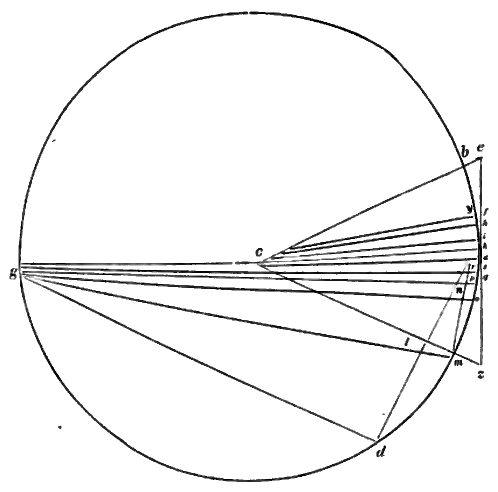
.ai. Sed duplum .ai. est latus equilaterę figure descriptę circa circulum .abgd., habentis latera 96; quare est sicut 4/5 458 ad 15., ita dyametrum .ga. ad unum ex lateribus figurę supradictę habentis latera .96. Quare si multiplicauerimus 15 per 96, prouenient .1440. pro summa laterum ipsius figurę: ergo proportio omnium laterum figurę supradicte ad dyametrum circulj cadentis in ipsa est sicut 1440 ad 4/5 458. Inueniam rursus proportionem circulj ad dyametrum ipsius per latus figurę cadentis in ipso habentis latera .96. in hunc modum: ponam in eodem circulo .abgd. latus exagonici .ad., quod est equale semidyametro .ca.; et copulabo .gd., et erit trigonum .gda. orthogonion, cum sit in semicirculo .gda.: omnis enim angulus, ut in tertio libro Euclidis habetur, qui est in semicirculo, est rectus; et quia linea .ad. est latus exagonicum, erit periferia .ad. tertia pars periferię .dag.; quare periferia .gd. dupla est periferie .da. Vnde angulus .gad. duplus est angulo .agd.; et sunt ambo simul equales uni angulo recto; quare angulus .agd. est tertia pars recti. Ponam ordine suprascripto, dyametrum .ag. esse 30; quare recta .ad. erit .15, et recta .gd. erit 26, minus unceis 1/13 2 per ea que superius demonstrauj : et diuidam angulum .agd. in duo equa á linea .gm.; et copulabo rectam .am., et erit proportio recte .al. ad .ld. sicut .ag. ad rectam .gd.: et cum coniunxerimus, erit proportio recte .ad. ad .ld. sicut coniuncti ex .ag. et .gd. rectis ad rectam .gd.; et cum permutauerimus, erit sicut
f. 0098 · p. 91recte ad rectam .ad., hoc est sicut 56 minus unceis 1/13 2. ad 15., ita .gd. ad .dl.: et quia angulus .agd. in duo equa diuisus est a linea .gm., equalis est angulus .agm. angulo .dgm., et angulus .gdl. equalis est angulo .gma.: est enim uterque eorum rectus, cum sit in semicirculo .gdma.; reliquus ergo angulus, qui sub .gld., reliquo, qui sub .gam. est equalis; equiangulum ergo est trigonum .gdl. trigono .gma.: quare est sicut recta .gd. ad .dl., ita recta .gm. ad .ma.: quare ponam .gm. esse 56 minus unceis 1/13 2; et .ma. recta erit 15; et est recta .am. latus dodecagoni, cum periferia .am. dimidium sit periferie .amd. Rursus diuidam angulum .agm. in duo equa cum linea .gno.; et copulabo rectam .ao., et inueniam radicem coniunctam ex quadratis linearum .gm. ma., que est 58 minus unceis 4/5 4 pro latere .ag.; et erit sicut coniunctum ex .ag. et .gm. ad lineam .ma., hoc est sicut .114 minus unceis 7/8 6 ad 15., ita .gm. ad .mn. Sed sicut .gm. ad .mn., ita .go. ad .oa.; sunt enim trigona .gmn. et .goa. similia et orthogonia: est ergo sicut 114. minus unceis 7/8 6. ad .15., ita .go. ad .oa.: quare ponam .go. esse .114 minus 7/8 6 uncie, et .oa. 15; et accipiam iterum radicem ex quadratis linearum .go. et .oa., et habebo pro linea .ga. 115 minus unceis 16/23 8; et linea .oa. est latus figure descriptę intra circulum .abgd., habentis latera .24.: didam rursus angulum .ago. in duo media á linea .gq.; et copulabo .qa., et erit sicut .ag. et .go. ad .oa., ita .go. ad .op. Sed sicut .go. ad .op., ita .gq. ad .qa.; erit ergo sicut 229, minus unceis 11/72 15, ad 15., ita .gq. ad .qa.: quare ponam .gq. esse .229 minus unceis 11/72 15, et .qa. 15; et coniungam quadrata eorum; et coniuncto radicem inueniam, et habebo .229, et parum minus de unceis 1/2 37.; et est .aq. latus figure habentis latera 48. Diuidam iterum angulum .agq. in duo equa a linea .grs.; et copulabo .sa., que erit latus figurę habentis latera .96. cadentis intra circulum .abgd.; et quia angulus .agq. diuisus est in duo equa cum linea .gs., erit proportio .gq. ad .qr. sicut .ag. et .gq. ad .qa., hoc est sicut 1/5 458 ad .15., ita .gq. ad .qr. Sed sicut .gq. ad .qr., ita .gs. ad .sa., cum trigona .gqr. et .gsa. sint similia: quare erit sicut 1/5 458 ad .15., ita .gs. ad .sa.: coniungam iterum quadrata linearum .gs. et .sa., et coniuncto radicem inueniam, et habebis 4/9 458 pro dyametro .ga.: multiplicabo ergo rectam .sa. per .96, erunt .1440 pro summa omnium laterum figurę descriptę intra circulum .abgd.: quare est sicut .1440 ad 4/9 458., ita omnia latera predictę figurę in circulo .abgd. descriptę sunt ad dyametrum circulj .ga. Inuenimus per inuestigationem lateris exterioris figure, quod proportio omnium laterum ipsius ad dyametrum circulj est sicut .1440 ad 1/5 458; et linea circumferens est minus omnium laterum figurę continentis circulum; et est plus omnium laterum figurę descriptę intra circulum; erit proportio circulj ad suum dyametrum, sicut 1440 ad 1/3 458, cum sint in medio inter 4/9 458 et 1/5 458. Sed proportio de 1440 ad 1/3 458 est sicut triplum unius numerorum ad triplum alterius, hoc est sicut 4320 ad 1375; quorum proportio in minimis numeris est sicut 864 ad 275: sed proportio de 864 ad 275, minus 1/11, est sicut 1/7 3 ad 1; et quia parua est differentia inter proportionem, quam habet circulus ad suum dyametrum, et proportionem, quam habent 1/7 3 ad 1.; ideo posuerunt sapientes antiqui, circulum esse triplum et septimam sui dyametrj; et hoc uolui ostendere. SI autem campum semicircularem metirj desideras, embadum ipsius circulj per unum ex demonstratis modis quere; et dimidium eius habeas pro embado ipsius semicirculj.
f. 0099 · p. 92

Ad cuius rei euidentiam esto semicirculus .abg., cuius dyameter .ag. sit .24.; et expleatur circulus .abgd.; et erit suplementum .adg. similiter semicirculus. Quare si acceperimus dimidium embadj circulj .abgd., habebimus utique embadum dati semicirculj .abg. Vel dimidium dyametrj, scilicet 12, in 1/7 3 multiplica, et habebis 5/7 37 pro arcu .abg.: cumque dimidium dyametrj per dimidium arcus .abg. multiplicaueris; uel si quartam partem dyametrj in toto arcu .abg. duxeris, uenient 4/7 226 pro embado semicirculj .abg.: uel si ex quadrato dyametri, quod est .576., undecim uigeximas octauas acceperis; uel si ex quadrato ipsius dyametrj uigeximam optauam acceperis, et eam per 11 multiplicaueris, ad eundem embadum peruenies: et si ex quadrato dyametrj quartam decimam partem acceperis, habebis panora embadj suprascripti, que sunt 1/7 41. Et si ad notitiam arcus .abg., qui est semilinea circumferentia circulj aliter uenire desideras, á centro .e. super dyametrum .ag. lineam .eb. orthogonaliter erigas, que erit semidyametrj circulj .abgd.; et copulabis rectas .ab. bg., et erit angulus, qui sub .abg. rectus; cum sit in semicirculo .abg.: uel quia .be equalis est rectis .ea. et .eg., erit utrumque trigonum .aeb. et .beg. equicrurium: quare anguli, qui sub .eba. et .eab. et .ebg. et .bge. sibi inuicem sunt equales; et est unusquisque eorum dimidium angulj rectj: quare duo angulj, qui sub .abe. et .ebg. uni recto sunt equales; rectus est ergo angulus, qui sub .abg.: et quia due recte .ae. et .eb. duabus rectis .be. et .eg. sunt equales; et anguli, qui sub .aeb. et .beg sont rectj, equales erant sibi inuicem recte .ab. et .bg.; quare quadratum dyametrj .ag. est duplum quadrato unius cuiusque linearum .gb. et .ba., nec non et unum quodque quadratorum linearum .gb. et .ba. unicuique quadratorum linearum .ae. et .be.: et iterum .be et .eg. est duplum; quare est sicut .ag. ad .gb., ita .gb ad .be., uel ad .eg.: quare si multiplicauerimus .ag. in .be., scilicet .24. per 12, habebimus .288. pro quadrato uniuscuiusque linearum .ab et bg.: uel si quadrati dyametrj .ag. dimidium acceperimus; aut duplicauerimus quadratum semidyametrj .ge. uel .ea., habebimus similiter .288 pro quadrato unius cuiusque linearum .gb et ba.; et est .ge. arcus medietatis semicirculj .abg.: deinde si diuiserimus cordam .bg super punctum .c. in duo equa; et per puncta .c.e. protraxerimus lineam .df., erit .df. dyameter circulj .abgd.; et faciet angulos rectos super punctum .c. cum corda .bg., nec non et diuidet arcum .bfg. in duo equa. Quare si á puncto .f. protraxerimus lineas .fb. et .fg., erit unaqueque ipsarum corda quartę partis semicirculj .gba.: ad quarum notitiam ueniemus sic : quia angulus, qui sub .bce., est rectus; si quadratum linee .bc., quod est 72, scilicet quartam partem quadratj cordę .bg. extraxerimus ex quadrato linee .be. subtendentis angulum rectum, qui sub .bce., remanebunt .72. pro quadrato linee .ce.: quare tota .dc. est 12, et radix de 72.; et uocatur binomia, cum non possit exprimi ipsa in numeris. Vnde si extraxerimus .ec. ex .ef., remanebunt .12 minus radice de .72. pro linea .cf.: et uocatur ipsa linea .cf. abscisio, uel recisum, aut apotamj, cum constet ex numero minus radice: deinde accipiemus quadrata linearum .fc. et .cb., et habebis quadratum cordę .bf. uel .fg.: nam qualiter accipiamus quadratum abscisionis .cf., uolo presentialiter demonstrare: pones nomina ipsius, scilicet 12 et 72, ut in margine cernitur; et multiplicabis 12 per 12, erunt 144; et radicem de 72 per radicem de 72, erunt 72; quibus iunctis insimul, erunt .216.; de quibus extrahes duplum de 12 multiplicatum in radicem de 72,
f. 0100 · p. 93uenient 24 radices de 72; et sic habentur pro quadrato lineę .cf. 216, minus 24 radicibus de 72, que sunt una radix de 41472. Vel quia linea .ef. diuisa ut libet super punctum .c., erunt duo quadrata linearum .ef. et .ec. equalia quadrato .cf., et duplo rectiangulę superficiei .ec. in .ef. Nam quadrata linearum .ef et ec. sunt 216; de quibus si auferamus duplum multiplicationis .ef. in .ec., scilicet 24. in radicem de .72., prouenient utique 216 minus radice de 41472; et uocatur recisum primum, ut in suo demonstrabitur loco: cui quadrato si addiderimus quadratum lineę .bc., hoc est 72, habebimus 288 minus radice de 41472 pro quadrato corde .bf.; quod uocatur recisum quartum, cuius radix est illa linea, que dicitur minor. Nam si secundum propinquitatem notitiam lineę .bf. habere uis, radicem de 41472, que est parum minus de 2/3 203, de 288 extrahe, remanebunt parum plus de 3/8 84 pro quadrato unius cuiusque IIIIor cordarum .gf. fb. bh. ha.: uel aliter quadrato lineę .ce. radicem inuenias, que est parum minus de 1/2 8; et ipsam extrahe ex linea .ef., scilicet ex 12., remanebunt parum plus de 1/2 3 pro linea .cf.; quorum quadratum, quod est parum plus de 1/4 12, si addiderimus cum quadrato lineę .bc., habebimus similiter parum plus ex 1/3 84 pro quadrato unius cuiusque suprascriptarum IIIIor cordarum : quod si multiplicauerimus per quadratum quaternarij, scilicet per 16., habebimus 1350 pro quadrato summę ipsarum IIIIor cordarum, quorum radix est circa 3/4 36. Sed arcus .abg est 5/7 37. Vnde adhuc sumus aliquantulum longe a notitia ipsius per inuentionem quatuor cordarum. Quare diuidam iterum unam ex IIIIor predictis cordis in duo equa; et sit corda .ah. diuisa super punctum .I.; et protraham per puncta .i.e. dyametrum .kl., que diuidit arcus .akh. in duo equa super punctum .k.; et protraham cordam .ak., erit latus figurę cadentis in circulo .abgd. habentis latera 16: et ueniam ad notitiam eius secundum id quod demonstratum est, uidelicet ex quadrato lineę .ae., hoc est ex 144., auferam quadratum lineę .ai., quod est circa 1/11 22., scilicet quarta pars quadrati lineę .ah., remanebunt 10/11 121 pro quadrato lineę .ei.: quare ipsa linea est circa 1/11 11.; que si auferamus ex linea .ek., remanebit .ak. circa 10/11 unius perticę; cuius quadrato, quod est circa 9/11, si addiderimus cum quadrato linee .ai., habebimus 10/11 21 pro quadrato corde .ak., que est corda octaue partis arcus .abg.: quare si multiplicauerimus 10/11 21 per quadratum octonarij, scilicet per 64, habebimus circa .1402. pro quadrato octo equalium cordarum cadentium in semicirculo .abg., quorum radix est minus de 1/2 37. Sed arcus .abg. est plus, uidelicet 5/7 37. Quare si eodem modo si inueniemus cordam semiarcus .ak., erimus propius longitudine arcui .abg.; et sic semper diuidendo arcus ueniemus ad notitiam cordę, cuius differentia ad suum arcum erit quasi insensibilis; et sic poteris ad notitiam cuius uis arcus circulj deuenire. ET ut hoc liquidius deprehendatur, adiaceat circulus .abcd., cuius dyameter .ac. sit 10; et in eo data sit corda nota .bd., que sit .8.; et uolumus arcum .bad per notitiam ipsius cordę inuenire: primum quidem ostendam inuenire per notitiam cordę longitudinem utriusque sagiptę; et per notitiam sagiptę inuenire etiam longitudinem cordę; et est ista demonstratio super hoc; quia linea .ac. diuisa est in duo equalia super punctum .f., et in duo inequalia super punctum .e.; erit utique multiplicatio .ae. in .ec. cum quadrato lineę .ef. equalis quadrato lineę .fa. Sed .fa. equalis est .fb., cum utraque ipsarum producantur á centro .f., et terminentur in periferia circulj: quare multiplicatio .ae. in .ec. cum quadrato
f. 0101 · p. 94

lineę .ef. equatur quadrato lineę .fb. Sed quadratum lineę .fb. equale est duobus quadratis linearum .be. et .ef.; ergo multiplicatio .ae. in .ec. cum quadrato lineę .ef. equalis est duobus quadratis linearum .be. et .ef.: quare si comuniter auferantur quadrata lineę .ef., remanebit multiplicatio .ae. in .ec. equalis quadrato lineę .be.: quare si extraxerimus quadratum lineę .be. ex quadrato lineę .bf., scilicet .16 de 25., remanebunt .9 pro quadrato lineę .ef.: quare .ef. est .3.; quibus additis cum .cf., erunt 8. pro sagipta .ce.: similiter extracta .fe. ex .af., remanebunt .2. pro linea .ae.: est enim multiplicatio .ae. in .ec., scilicet de .2 in .8., equalis quadrato lineę .be. Vnde recte .ae. et .eb. et .ec. continue proportionales sunt: est enim ut .ae. ad .eb., ita .be. ad .ec. inuenta est; ergo notitia sagiptarum .ae. et .ec. per notitiam cordę .bd. Sed sint .ae. et .ec. sagitte note; quare .ae. sit .2, et .ec. 8; et uolumus inuenire cordam .bd.: quia multiplicatio .ae. in .ec. equatur quadrato lineę .be.; si multiplicauerimus .ae. in .ec., scilicet .2 per 8, habebimus .16 pro quadrato lineę .be.; quorum radice, scilicet .4., duplicata, habebimus .8. pro corda .bd. Sed sit corda .bd nota, nec non et sagitta .ea., et ignotus dyameter .ac., multiplicabis dimidium cordę .bd. in se, erunt .16.; que diuide per sagittam .ae., scilicet per 2., uenient 8 pro sagitta .ec.: quare dyameter .ac. erit 10.: similiter si diuiserimus quadratum lineę .be. per sagittam .ec., proueniet sagitta .ae. Notandum quia in semicirculo .abc. recta .be. uocatur sinus rectus utriusque arcus .ab. et .bc.; et recta .ae. uocatur sinus uersus arcus .ab.; et recta .ec uocatur sinus uersus arcus .bc., ut in arte Astrologię reperitur: his itaque demonstratis redeamus ad causam: protrahamus cordas duorum arcuum .ba. et .ad., que sunt recte .ba et .ad; quarum notitiam habebimus, si coniunxerimus quadrata linearum .ae et .ed., uel .ae. et .eb., erit quadratum unius cuiusque linearum .ab. et .ad. radix de .20: quare si dimidiauerimus cordam .ad. in puncto .g.; et per puncta .gf. duxerimus dyametrum .hi., inueniemus per ea que dicta sunt notitiam sagittarum .ig. et .gh.: cumque quadrata linearum .ag. et .gi. coniunxerimus, habebimus quadratum cordę .ai., que est corda arcus .ai., que est quarta pars totius arcus .bad.: cumque frequenter sic fecerimus, poterimus secundum propinquitatem totius arcus .bad. notitiam habere; cumque ipsum ex linea circumferente, scilicet ex .adbg. periferia scilicet de 3/7 31 extraxerimus, remanebit arcus .b.c.d notus. EST enim alius modus reperiendi cordas semiarcuum, ex quibus arcubus corde sunt note; et quem Tholomeus posuit in almagesto. Sit quidem in circulo .abgd. dyameter .bd. notus, nec non et corda .ad. nota; uolo inuenire cordam medietatis arcus .ad.: protraham cordam .ab., et erit nota, cum corda .ad. sit nota; cum angulus .dab sit rectus. Quare quadratum dyametrj .bd. equatur quadratis duarum cordarum .da et ab.; et adiaceat recta .be. equalis recte .ba; et diuidam angulum, qui sub .abe. in duo media á linea .bz.; et copulabo rectas .zd. et .ze. et .za.; et á puncto .z. super dyametrum .bd. protraham cathetum .zi.; equalis est recta .ab. recte .be.: si comuniter adiaceat recta .bz., erunt due recte .ab. et .bz duabus rectis .zb. et .be. equales; et angulus qui sub .abz. angulo qui sub .zbe. est equalis; quare basis .az. basi .ze. est equalis. Sed recta .az. recte .zd. est equalis, cum equales sint sibi inuicem periferie .az. et .zd.; quia equales angulj super equales periferias consistunt, siue ad centrum, siue ad periferiam fuerint anguli constitutj: sunt enim anguli qui ad .b. sibi inuicem
f. 0102 · p. 95equales, et consistunt super periferias .az. zd.; quare recta .ze. equalis est recte .zd.; equicrurium est ergo trigonum .zed.; quare punctus .i., qui sunt casus catheti .zi., cadit in medio .ed.: et quia orthogonium est trigonum .bzd., cum sit in semicirculo; et in eo super basem ab angulo recto protracta est cathetus, utique trigonum .bzd. in duo trigona diuisum sibi inuicem similiter; habent enim unumquodque ipsorum trigonorum unum angulum rectum, et unum comunem cum toto trigono .bzd., ut Euclides in octauo theoremate sexti libri ostendit. Quare erit sicut .bd. ad .dz., ita .zd ad .di. Quare multiplicatio .di. in .bd. equatur quadrato lineę .zd.; est enim .id. nota, cum sit dimidium ex .ed., que est nota propter .be., que est equalis cordę .ba. note. Quare si auferatur corda .ba., hoc est .be., ex dyametro .bd., remanebit .ed. nota; quare dimidium eius .id. erit notum. Vnde si multiplicauerimus .di notam in .bd. notam, proueniet quadratum corde .zd. notum; quare recta .zd erit nota, ut prediximus: que etiam ostendantur cum numeris. Sit dyameter .bd. 10; et corda .da. sit .8.; quare corda .ab erit .6.; cui cum equalis sit recta .be., erit .be. similiter .6.; quibus extractis ex dyametro .bd., remanebunt .4. pro recta .ed.; quarum dimidium, scilicet 2, erit recta .id.: ex multiplicatione quidem .id. in .bd. ueniunt .20, que equantur quadrato corde .zd.; quare corda .zd. est radix de .20.; quod oportebat ostendere. Similiter si extraxerimus quadratum linee .zd. ex quadrato dyametro dyametri .bd., remanebunt .80 pro quadrato corde .bz.; quorum radix, que est 9 minus 1/18, si extraxerimus ex dyametro .bd., remanebit 1/18 1; cuius dimidium si multiplicauerimus in dyametrum .bd.; uel si multiplicauerimus 1/18 1 per dimidium dyametrj, scilicet per 5, uenient 5/18 5 pro quadrato corde semiarcus .dz. Et secundum hunc modum possumus inuenire cordas medietatum quorumlibet datorum arcuum. Sed hec talis inuestigatio non est operanda ab agrj mensoribus, qui secundum uulgarem modum procedere uolunt. Nam cum uulgariter longitudinem alicuius arcus habere desiderant, habeant aliquam mensuram lineam, que sit unius pedis, que possit curuari et extendi; et cum ipsa studeant metiri arcus, quos metirj desiderant; uel habeant funem unius perticę uel plurium; et cum ipsa studeant circiter mensurare arcus portionum circulorum figendo sepe arundines per girum circulj, ut ipsa funis non deuiet á circunferentia circulj; et sic poterit habere mensuram omnium arcuum circulorum. Sed ut ipsi, qui secundum geometricam scientiam operarj desiderant leuius quam dictum sit, per notas cordas arcus ipsarum reperiri ualeant, sequentes tabulas composui, in quibus ordinate arcus 66 notos proposui; et ante unum quemque suam cordam in perticis et pedibus et unceis et punctis describi feci. Est enim pertica sex peduum; et pes est decem et octo unciarum; et uncia uiginti punctorum; uel pertica est unciarum .108. et punctorum 2160.; et suprascripte corde .66. intelliguntur esse protracte in semicirculo uno, cuius dyameter est 42 perticarum; et quia quelibet corda, que in circulo protracta est, est corda duorum arcuum equalium; si ipsa corda fuerit dyameter, uel inequalium, si non fuerit dyameter; ideo duos arcus ante ipsas cordas ordinaui, ut in sequentibus tabulis ostenditur :
f. 0103 · p. 96Arcus pertice |
Arcus pertice |
Corde pertice |
Ar pedes |
Cnn vncie |
M puncta |
|---|---|---|---|---|---|
1 |
131 |
0 |
5 |
17 |
17 |
2 |
130 |
1 |
5 |
17 |
13 |
3 |
129 |
2 |
5 |
17 |
4+ |
4 |
128 |
3 |
5 |
17 |
2 |
5 |
127 |
4 |
4 |
12 |
10 |
6 |
126 |
5 |
5 |
16 |
7+ |
7 |
125 |
0 |
5 |
14 |
5 |
8 |
124 |
7 |
5 |
12 |
0 |
9 |
123 |
8 |
5 |
8 |
16 |
10 |
122 |
9 |
5 |
7 |
8 |
11 |
121 |
10 |
5 |
4 |
2 |
12 |
129 |
11 |
4 |
17 |
18 |
13 |
119 |
12 |
4 |
13 |
6 |
14 |
118 |
13 |
4 |
7 |
10 |
15 |
117 |
14 |
4 |
1 |
0 |
16 |
116 |
15 |
3 |
11 |
16 |
17 |
115 |
10 |
3 |
3 |
12 |
18 |
114 |
17 |
2 |
12 |
8 |
19 |
113 |
18 |
2 |
0 |
15 |
20 |
112 |
19 |
1 |
8 |
12 |
21 |
111 |
20 |
0 |
13 |
16 |
22 |
110 |
21 |
0 |
9 |
0 |
23 |
100 |
21 |
5 |
2 |
19 |
24 |
109 |
22 |
4 |
4 |
5 |
25 |
107 |
23 |
3 |
4 |
8 |
26 |
109 |
24 |
2 |
3 |
2 |
27 |
105 |
25 |
1 |
0 |
6 |
28 |
104 |
25 |
5 |
16 |
2 |
29 |
103 |
26 |
4 |
8 |
6 |
30 |
102 |
27 |
3 |
0 |
3 |
31 |
101 |
28 |
1 |
9 |
7 |
32 |
100 |
28 |
5 |
19 |
4 |
33 |
99 |
29 |
4 |
3 |
9 |
34 |
98 |
30 |
2 |
0 |
17 |
35 |
97 |
31 |
0 |
8 |
5 |
39 |
00 |
31 |
4 |
6 |
7 |
37 |
95 |
32 |
2 |
5 |
15 |
38 |
94 |
33 |
0 |
1 |
0 |
39 |
93 |
34 |
3 |
13 |
9 |
40 |
92 |
35 |
1 |
4 |
15 |
41 |
91 |
35 |
4 |
12 |
10 |
42 |
90 |
36 |
2 |
0 |
9 |
43 |
89 |
36 |
5 |
3 |
5 |
44 |
88 |
37 |
2 |
4 |
6 |
45 |
67 |
37 |
5 |
3 |
2 |
46 |
86 |
38 |
1 |
17 |
15 |
47 |
05 |
38 |
4 |
12 |
13 |
48 |
84 |
38 |
1 |
4 |
0 |
49 |
03 |
39 |
3 |
11 |
15 |
50 |
82 |
39 |
5 |
17 |
2 |
51 |
81 |
40 |
2 |
2 |
1 |
52 |
09 |
40 |
4 |
2 |
10 |
53 |
79 |
40 |
0 |
0 |
11 |
54 |
70 |
40 |
1 |
14 |
5 |
55 |
77 |
41 |
3 |
7 |
8 |
56 |
76 |
41 |
4 |
19 |
2 |
57 |
75 |
41 |
0 |
4 |
12 |
58 |
74 |
41 |
1 |
0 |
1 |
59 |
73 |
41 |
2 |
0 |
0 |
00 |
72 |
41 |
3 |
7 |
14 |
61 |
71 |
41 |
4 |
0+ |
2 |
02 |
70 |
41 |
4 |
15 |
10 |
63 |
69 |
41 |
5 |
0 |
0 |
04 |
08 |
41 |
5 |
12 |
17 |
65 |
07 |
41 |
5 |
6 |
14 |
66 |
60 |
42 |
0 |
0 |
0 |

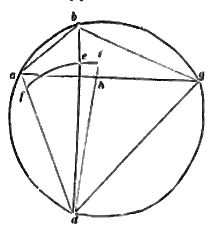
CVM per has tabulas, qualiter arcus circulorum inueniri debeant, demonstrare proposuerim, ut ipsa doctrina melius habeatur ostendendum est: quod si in circulo duo arcus inequales fuerint, erit proportio maioris arcus ad suam cordam maior proportione minoris arcus ad suam; quod patet, et etiam ad oculum deprehendi potest in tabulis suprascriptis: proportio quidem arcus semicirculj ad suam cordam, scilicet ad dyametrum circulj, est sicut .66 ad 42; et hec est sicut .11 ad .7; et proportio arcus septe (sic) partis circulj ad suam cordam est sicut 22 ad 21: maior quippe est proportio de 11 ad .7 quam de 22 ad .21. Similiter in omnibus arcubus suprascriptarum tabularum inuenies, proportionem maioris arcus ad suam cordam superhabundare proportionem minoris arcus ad suam cordam. Sed ut hoc geometrice demonstretur, adiaceat circulus .abgd.; et in ipso sint duo arcus inequales .ab. et .bg.; et sit arcus .bg. maior; et protrahatur corda arcui .abg., que sit recta .ag.; et diuidatur angulus, qui sub rectis .abg. in duo equa á linea .bd., que secat cordam .ag. super punctum .e.; et copulentur recte .ad. gd.; et quia angulus, qui sub rectis .abg. diuisus est in duo equa á linea .bd., equalis est angulus, qui sub .abd. angulo .dbg.; quare equalis est arcus .ad. arcui .dg.; cum habeatur in tertio EVCLIDIS, equales angulos super equas periferias consistere, cum ad centrum uel ad periferiam sint constituti; quare equalis est recta .ad. recte .dg. Comunis adiaceat recta .db. Erunt quidem due recte .ad. et .db. duabus rectis .bd. et .dg. equales. Sed basis .ba minor est base .bg.; quare angulus, qui sub .gdb rectis maior est angulo, qui sub .bda.; uel quia maior est periferia .gb. periferia .ba., maior est angulus, qui fit á rectis .gd. et .db. angulo, qui fit á rectis .bd. et .da.; quia est sicut periferia .gb. ad periferiam .ba., ita angulus qui sub rectis .gdb. ad angulum qui sub rectis .bda. Et quoniam equalis est recta .ad. recte .dg., si á puncto .d. cathetus ducatur super lineam .ag., in medio ipsius cadet. Cadet ergo inter .eg. puncta, scilicet super lineam .eg.; quia maior .ge. recte .ae., cum sit sicut recta .gb. ad rectam .ba., ita .ge. ad .ea.: cadat quidem cathetus super punctum .h. á puncto .d.; et quia rectus est angulus, qui sub .dhe., maior est recta .de. quam .dh., et maior est recta .da. quam .de.: iaceant utreque rectarum .di. et .df. equales recte .de.; et centro .d. spatio rectarum .di. et .de. circinetur arcus .ief.; maior est enim sector .die. trigono rectilineo .dhe., et sector .dif. minor est trigono .dea.; quare proportio sectoris .die. ad sectorem .def. maior est proportione trigoni .dhe. ad trigonum .dea. Sed proportio sectoris .d.i.e. ad sectorem .d.e.f. est sicut proportio anguli .ide. ad angulum rectilineum .edf.; ergo proportio anguli .ide. ad angulum .idf. maior est proportione trianguli .dhe. ad trigonum rectilineum .dae. Sed proportio trigoni .hde. ad trigonum .ade. est sicut recta .he. ad .ea., cum ambo trigona sint sub eadem altitudine, que est ex .d. in .h. Nam cathetus .dh. perpendicularis est trigonis .hde. et .ade.; ergo proportio anguli .ide. ad angulum .eda. est maior proportione recte .he. ad rectam .ea.: et si composuerimus, erit proportio anguli .ida. ad angulum .eda. maior proportione .ah. recte ad rectam .ae. Sed angulus .gdi. equalis est angulo .adh.; et recta .gh. equalis est recte .ah.; quare proportio anguli .gdi. ad angulum .eda. maior est proportione recte .gh. ad rectam .ae. Sed proportio anguli .i.d.e. ad angulum .ade. inuenta est maior proportione .he. recte ad rectam .ea. Quare proportio totius anguli .gde. ad angulum .eda. maior est proportione recte
f. 0105 · p. 98
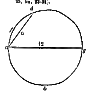
.ge. ad rectam .ea. Sed proportio anguli .gde. ad angulum .ade. est sicut proportio arcus .gb. ad arcum .ba.; et proportio .ge. ad .ea. est sicut proportio corde .gb. ad cordam .ba. Ergo proportio arcus .gb. ad arcum .ba. est maior proportione corde .gb. ad cordam .ba.: permutatim ergo erit proportio arcus .gb. ad cordam .gb. maior proportione arcus .ba. ad cordam .ba.; quod oportebat ostendere. His itaque intellectis, si per cordam datam alicuius circulj; cuius dyameter sit nota, arcum ipsius corde inuenire desideras; ipsam cordam per dyametrum tabularum, scilicet per 42, multiplica, et quod prouenerit, diuide per dyametrum circulj dati, et quod prouenerit, erit corda tabularum similis date corde: accipe arcum eius in tabulis, et multiplica eum per dyametrum dati circulj, et quod prouenerit, diuide per dyametrum tabularum, et habebis arcum quesite corde. Ad cuius rei euidentiam esto circulus .abg., cuius dyameter .bg. sit perticarum .10.; et in ipso data sit corda .ab. 5 perticarum; et uis habere notitiam ex arcu .abe.; multiplica .ab. cordam per 42, et diuides per dyametrum .bg., prouenient .21. pro corda tabularum similis corde .ab.: quam quere in tabulis, et accipe arcum, qui est indirecto ipsius; et qui est minor semicirculo, cum queras notitiam ex arcu .aeb., qui est etiam minor semicirculo; et est minor arcus corde ipsius perticarum .22.; quas si multiplicaueris per 10, scilicet per dyametrum .bg.; et summam diuiseris per 42, prouenient 5/21 5 pro arcu .aeb.: et si uolueris habere notitiam maioris arcus .b.d.g.a., inuenias maiorem arcum in tabulis, qui est in directo corde inuente; et inuenies, ipsum esse .110 perticarum: multiplicabis eas similiter per 10, et diuides per 42, et uenient pertice 4/21 26 pro arcu .b.d.g.a. Item sit corda .ab. perticarum .8., et pedum .3., et unciarum 2/7 16.; et dyameter .bg. sit .10., ut diximus: multiplica ergo perticas .8, et pedes .3, et uncias 2/7 16 per 42; et summam diuides per 10., uenient 36, et pedes .2., que sunt corda tabularum similes corde date .ba.; quare arcum eius minorem, si minorem uis scire, uel maiorem; si de maiori, scilicet ex arcu .bdga. notitiam uis habere; et est minor arcus ipsius corde. 42; que multiplica per 10, scilicet per dyametrum .bg.; et quod prouenerit, diuide per dyametrum tabularum, qui est 42., et prouenient 10 pro arcu .aeb.: et si maiorem arcum corde perticarum 36, et pedum 2., que est .90, multiplica per .10.; et summam diuiserimus per 42, uenient 3/7 21 pro arcu maioris semicirculj .bdg. RVRSVS adiaceat circulus alter .abgd., cuius dyameter .ag. sit .12; et uis corda .ad. sit perticarum .6, et unius pedis; et queritur notitia ex arcu .afd., qui est minor semicirculo; multiplica itaque 6, et pedem unum per 42, erunt pertice 259; quas diuide per 12, scilicet per .ag., uenient pertice .21, et pedes .3, et uncie .9. pro corda tabularum similis corde .ad.; que corda non inuenitur in tabulis, sed cadit inter cordam arcus perticarum 22, et cordam arcus perticarum .23., scilicet inter 21 et 21, et pedes .5., et uncias 2, et puncta .16. Vnde ut habeamus arcum inuente corde, uolumus per figuram geometricam demonstrare. Adiaceat semicirculus .ezitk., cuius dyameter .ek. sit perticarum .42, scilicet dyameter tabularum; et ex ipso accipiatur arcus .ez. et .et., quorum .ez. sit .22, et .et. sit .23; et protrahantur corde .ez. et .et., erit corda .ez. perticarum .21.; et corda .et. perticarum 21, et pedum .5., et unciarum .2., et punctorum .16., ut superius in tabulis continetur; inter quas cordas cadit corda inuenta, cuius arcum querimus in tabulis. Vnde scimus, ipsum arcum cadere inter arcum .ez., et arcum .et.: cadat itaque in puncto .i.; et protrahatur corda .ei., que erit perticarum .21, et pedum 3, et
f. 0106 · p. 99

unciarum .9., ut superius inuentum est. Et ex his omnibus uolumus inuenire quantitatem arcus .ei. Sed nos scimus ex premissis, quod proportio arcus .ez. ad cordam .ez. est minor proportione arcus .ei. ad cordam .ei.: sed si ponamus proportiones arcus .ei. ad cordam .ei. eam quam habet arcus .ez. ad cordam .ez., erit arcus .ei. perticarum .22, et pedum .3, et unciarum .12., que proueniunt ex diuisa multiplicatione corde .ez. in cordam .ei. per arcum .ez. Sed proportio arcus .ei. ad cordam .ei. est maior proportione arcus .ez. ad cordam .ez.; ergo arcus .ei. est plus inuentarum perticarum 22, et pedum 3, et unciarum 12. Item si ponamus arcum .ei. ad cordam .ei. in proportione arcus .et. ad cordam.et., erit arcus .ei. perticarum .22, et pedum .4, et unciarum .4., et punctorum 13. Sed proportio arcus .ei. ad cordam .ei. est minor proportione arcus .et. ad cordam .et.; ergo arcus .ei. est minor perticarum 22, et pedum 4, et unciarum 4, et punctorum .13.: et superius inuentum est, arcum .ei. esse plus perticarum 22, et pedum 3, et unciarum .12. Vnde si dimidiauerimus differentiam que est á perticis 22, et pedibus .3, et unceis .12 usque in perticas 22, et pedes .4., et uncias 4, et puncta .13.; et illam medietatem que prouenit addemus super perticas 22, et pedes 3, et uncias .12, habebimus secundum propinquitatem quantitatem arcus .ei. Vel aliter agregemus arcus .ez. et .et., erit .45.; et agregemus cordas .ez. et .et., erunt pertice .42., et pedes .5, et uncie .2., et puncta .16.; in quibus diuidamus multiplicationem de .45. in cordam .ei., scilicet in perticas .21, et pedes 3, et uncias .9., et habebimus perticas .22, et pedes .4., et unciam .1., et puncta .6. pro arcu .ei. Vel aliter abscindamus ex cordis .ei. et .et. quantitatem corde .ez.; et remaneat ex corda .ei. quantitas .oi., que est pedum 1/2 3; et ex corda .et. remaneat quantitas .nt., que est pedum .5., et unciarum .2., et punctorum .16.: et ponamus arcum .zi. ad arcum .zt., scilicet ad perticam unam, sicut .oi. ad .nt., hoc est multiplicabimus arcum .tz., qui est unius perticę, scilicet .2160 punctorum per .oi., scilicet per puncta .1260., et diuidemus sumam per .nt., scilicet per puncta 1856., habebimus pro arcu .zi. pedes .4., et uncia una (sic), et puncta .6.: quibus additis cum arcu .ez., qui est perticarum .22., habebimus perticas 22, pedes .4., et unciam .1., et puncta .6. pro arcu .ezi., qui est similis arcui quesito .ad. superioris figurę. Quare si multiplicauerimus ipsum per sextam dyametrj .ag., scilicet per .2., et diuiserimus per sextam dyametrj tabularum, scilicet per .7., uenient pertice 6, et pedes .2, et uncie .15, et puncta .15 pro arcu .ad. ET si arcum .abd., qui est maior semicirculo, per cordam .ad habere uis, extrahes cordam .e.i. ex corda .et., remanebunt puncta .596.; que multiplica per arcum .tz., scilicet per puncta .2160.; et quod peruenerit, diuide per .nt., scilicet per .1856., extrahe puncta .596, que sunt pes .1., et uncie .16, et puncta .14. pro arcu .ti.; que si addideris arcum maiorem tabularum, cuius corda est linea .et.; et ipse arcus est .109. perticarum, habebimus perticas .109, et pedem .1., et uncias .16., et puncta .14. pro arcu tabularum: que si multiplicauerimus per 12, et diuides per 42.; aut si multiplicaueris ipsum per sextam de .12., et diuiseris summam per sextam de .42, habebis perticas .31, et pedem .1., et uncias .7., et puncta 6/7 6 pro arcu .abd. ET si per arcum .afd notum cordam .ad. ignotam habere uis, multiplica arcum .afd. per dyametrum tabularum, et sumam diuide per dyametrum .ag., et habebis perticas .22, et pedes .4., et unciam .1., et puncta .6. pro arcu suprascripto .ezi., qui est arcus cadens in tabulis inter arcum .ez., et arcum .ezt. Vnde ut inueniamus cordam ipsius
f. 0107 · p. 100
.ei., que erit similis corde .ad. dati circulj .abgd. ex inuento arcu .ezi.; et extrahes arcum .ez., remanebunt pedes .4., et uncie .1., et puncta .6., que sunt in summa puncta 1466.; que multiplica per differentiam, que est inter cordam .ez., et cordam .et., que sunt note ex tabulis; et est illa differentia linea .nt., que est punctorum 1856; et diuides summam per puncta unius pertice, scilicet per arcum .t.i.z., exibunt pedes 1/2 3. pro linea .oi.; quibus superadde lineam .eo., que est equalis corde .ez., habebis perticas 22, et pedes 1/2 3. pro corda .ei., que est similis corde tue .ad.: quare multiplicabis eam per sextam de 12, et diuides eam per sextam de 42., exibunt pertice .6, et pes unus pro corda .ad.; et sic secundum ea que diximus, cum dyametri circulorum erunt noti, poterimus per datas cordas notas in ipsis arcus eorum ignotos reperire, et cetera.
CVM itaque arcus per cordas: et cordas per arcus, per ea que diximus, inuenire sciueris; et uolueris aream alicuius sectoris circulj inuenire, arcum eius inuenire studeas, et dimidium ipsius per semidyametrum circulj multiplica; et quod prouenerit, erit area ipsius sectionis. Verbi gratia: sit sector .abgd. contentus sub rectis .ab. et .ad. et arcu .bgd., quoniam sector est figura .abgd., erit unaqueque rectarum .ab. et .ad semidyameter circulj; quare punctus .a. est centrum circulj, de quo recisus est sector .abgd., qui sit circulus .gbed.; et sint arcus .be. et .ez. equales arcui .bgd.; et compleantur recte .ae. et .az., erit itaque unus quisque sectorum .abe. et .aez. equalis sectori .abgd.: quare est sicut arcus .db. ad arcum .be., ita sector .abgd. ad sectorem .abe.: similiter et sector .aez; equalis est sectorj .adb.; quare est sicut arcus .db. ad arcum .ez., ita sector .abgd. ad sectorem .aez.; tres itaque sectores .abgd. et .abe. et .aez. sibi inuicem sunt equales.
Duo enim illorum reliquo sunt dupli. Quare sector .adbe. duplus est sectorj .aez.; et arcus .dbe. duplus est arcui .ez.; quare est sicut arcus .dbe. ad arcum .ez., ita sector .adbe. ad sectorem .aez. Vnde si totum circulum diuiserimus in sectores, inueniemus quod proportio unius eorum ad totum circulum est sicut arcus ipsius ad totam lineam circumferentem circulj; sed proportio arcus cuiuscumque sectoris ad totam lineam circumferentem est sicut dimidium arcus ipsius ad dimidium linee circumferentis. Nam proportio numeri facti ex semidyametro circulj in semiarcum sectoris est ad numerum factum ex semidyametro in dimidium lineę circumferentis, sicut semiarcus sectoris ad dimidium lineę circumferentis. Sed ex facto á semidyametro, et in medietatem linee circumferentis linee prouenit embadum circulj. Ergo est sicut multiplicatio semidyametri circulj in dimidium arcus sectoris ad embadum circulj, ita sector est ad embadum circulj; ergo aree sectorum omnium colliguntur ex multiplicationis (sic) semidyametri suorum circulorum in dimidium arcus ipsorum; et huc uolui demonstrare. Et ut hoc in numeris declarescat; sit quelibet rectarum .ab. et .ad. perticarum .5.; et arcus .bgd. sit perticarum .8; erit ergo dyameter tota perticarum .10.; multiplicabis itaque semidyametrum .ad. per dimidium arcus .bgd., scilicet .5 per 4, uenient 20 pro area sectoris .abgd.: et si aream sectoris .abez. habere uis, multiplicabis semidyametrum .ae. in dimidium arcus .bez., uenient 40. pro area sectoris .abez. ET si aream tantum alicuius sectoris minoris semicirculo habere uis, ut aream sectoris .abg., cuius corda .ag. sit perticarum 16; et sagitta .bd. sit perticarum 4; dyametrum circulj, unde ipsa sectio est, inuenire studeas hoc modo: protrahes lineam .bd. in directo usque ad
f. 0108 · p. 101


punctum .e.; et sit proportio recte .de. ad rectam .da. sicut .da. ad .db.; quare .ed. erit .16, scilicet duplum linee .da.; cum .da. sit duplum linee .db. Vel aliter multiplicetur .ad. in .dg., scilicet .8 per 8., erunt 64; que diuidantur per rectam .bd., scilicet per .4., uenient .16 pro linea .de., ut diximus; erit ergo tota dyameter .be. 20.; et sumatur centrum circulj punctus .f.; et copulentur .fa. fg., et erit sector .fabg.: quare si multiplicauerimus .fb. in dimidium arcus .abg., scilicet in arcu .bg., ueniet area sectoris .fabg.; de qua si abstulerimus aream trigoni rectilinei .fag., que colligitur ex .fd. in .dg., remanebit utique area sectionis contente sub .ag. recta, et arcu .abd. Et si aream relique portionis circulj, que continetur sub recta .ag., et arcu .aeg., habere desideras, semidyametrum, scilicet .fe., in medietatem arcus .aeg. multiplica, et prouenienti sume aream trigoni .fag. superadde, et habebis embadum sectionis .aeg.; et sic studeas operari in similibus.
ET si occurreret tibi metiendi campum habentem figuram sectoris, uidelicet quod sit composita ex triangulo, et circulj portione, ut campum .abgd., qui componitur ex triangulo .abd., et sectione circulj .bgd., que cognoscitur, sectorem non esse si linee .ab. et .ad. inequales sibi inuicem sint; uel si protracta recta infra figuram, ut linea .ag. inequalis fuerit uni rectarum .ab. et .ad.; cuius embadum habebis, si areas sectionis .bgd., et triangulj .abd in unum coniunxeris. ITEM si uolueris mensurare campum habentem figuram piscis. Videlicet que sit composita ex duabus circulj sectionibus, ut figuram .ezit., que componitur ex duabus sectionibus circulj, que sunt .ezi. et .e.t.i., accipies siquidem embadum unius cuiusque sectionis; et quod ex ipsa coniunctione prouenit, erit embadum figure .e.z.i.t. RVRSVS est campus, cui figura elana, uel obliqua dicitur, que circundatur ab una tantum linea minime circulum faciente, cuius duo dyametri .ag. et .bd. se se secundum rectum angulum secantes sibi inuicem sunt inequales: hanc itaque poteris mensurare, si eam in figuris rectilineis soluere procuraueris; ex quibus prima, et maior erit quadrilaterum rectilineum contentum sub rectis .ba. et .bg. et .da. et .dg., et remanebunt ex ipsa figura pectora quatuor, quorum unum continetur sub recta .ab., et curua .aeb. Aliud namque est contentum á recta .bg., et curua .bzg. Tertium uero est sub recta .gd., et curua .gid. Quartum quidem continetur sub rectis .da. et curua .dta.; in quibus quatuor pectoribus si protraxerimus triangulos .eab. et .zbg. et .igd. et .tad. rectilineos, non remanebit ex tota figura nisi parum quod continetur sub pectoribus .8.: et si in quolibet ipsorum
f. 0109 · p. 102

protrahatur triangulus; et in residuis pectoribus illud idem operari studueris, resoluetur tota figura elana suprascripta dicta in figuris rectilineis; et non remanebit ex ea aliquid sensibile; quarum rectilinearum figurarum omnium, si embada in unum reduxerimus, nimirum embadum totius figurę incontanter habebimus. Aliter dyametros .ag. et .bd. in unum coniunge, et ipsorum dimidium per 1/7 3 multiplica; et quod prouenerit erit quantitas curue linee .a.b.g.d.; cuius dimidium si per dimidium medietatis duorum dyametrorum multiplicaueris, embadum suprascripte figurę prouenerit. Et ut hec in numeris habeantur, sit dyameter .bd. 16., et dyameter .ag. 12; quibus insimul iunctis faciunt .28.; quorum dimidium si per 1/7 3 diuiseris, uenient .44. pro curua linea .abgd.; cuius dimidium, scilicet .22., si per medietatem medietatis dyametrorum, scilicet per .7., multiplicaueris, reddent .154 pro embado ipsius.
SI in circulo trigonum describatur, cuius tres anguli periferiam circulj contingant, possibile est per notitiam ipsius trigoni laterum dyametrum inuenire. Ad cuius rei euidentiam adiaceat trigonum .a.b.g. descriptum in circulo .abdg., cuius tres anguli contingunt cingulum in punctis .a.b.g.: á puncto quidem .a. protrahatur dyameter .ad. secans latus trigonj .bg. super punctum .e. Dico per notitiam laterum trigoni .abg. esse possibile quantitatem dyametri .ad. inuenire. Adiaceant quidem primum duo latera trigonj .ab. et .ag. sibi inuicem equalia; et compleantur recte .bd. et .dg.; et erit unumquodque trigonorum .abd. et .agd. orthogonium, cum unumquodque ipsorum sit in semicirculo: et quia latus .ab. est equale lateri .ag., equalis erit latus .bd. lateri .dg.; quare periferia .bd. periferie .dg. est equalis. Super equales ergo periferias equales anguli consistunt; quare angulus, qui sub .bad. angulo qui sub .dag. est equalis; quare basis .be. basi .eg. est equalis. Ergo dyameter .ad. secat rectam .eg. in duo equalia; quare ad rectos angulos ipsa secare necesse est, ut EVCLIDES in tertio suo libro demonstrat; orthogonia quidem sunt, et equalia trigona .aeb. et .aeg., et similia, cum anguli unius equales sint angulis alterius; et quia trigonum .adb. habet angulum .bad. comunem cum trigono .abe.; et angulus .aeb. angulo .abd. est equalis, cum unusquisque ipsorum sit rectus: reliquus uero qui sub .adb. reliquo qui sub .abe. est equalis; equiangula ergo sunt trigona .abd. et .aeb. Similiter ostendetur, trigonum .agd. equiangulum esse cum trigono .aeg. Quatuor ergo trigona .aeb. aeg. abd. agd. sibi inuicem sunt similia. Similia enim trigona circa equales angulos habent latera proportionalia. Quare est sicut .da. subtendens angulum rectum, qui sub .abd. ad .ab. continentem ipsum, ita .ab., uel .ag., qui subtendens subtendentes angulos rectos ad rectam .ae.; quare multiplicatio .ad. in cathetum .ae. equatur unicuique quadratorum linearum .ab. et .ag., uel multiplicationi ex .ab. in .ag.
Quare si multiplicauerimus .ab. in .ag., uel acceperimus quadratum lineę .ab., uel linee .ag., et summam diuiserimus per cathetum .ae., proueniet quantitas dyametri .ad.; et est nota cathetus .ae., cum sint nota latera trigoni .abg.; quare et dyameter .ad. erit nota. Que ut demonstrentur in numeris, sit quelibet rectarum .ab. et .ag. perticarum 10, et recta .bg. sit 12. Quare cathetus .ae. erit 8: ex ductu quidem .ab. in .ag., uel ex quadrato lineę .ab. uel .ag. proueniunt 100; quibus diuisis per .ae., scilicet per .8., uenient 1/2 12 pro dyametro .ad.: uel aliter quia due recte .ad. et .bg. se se inuicem secant in circulu .abdg., erit multiplicatio .ae. in .ed. sicut
f. 0110 · p. 103

multiplicatio .be. in .eg.; quare si multiplicauerimus .be. in .eg., et diuiserimus per .ae., scilicet 36 per 8, uenient 1/2 4 pro linea .ed. Quare tota .ad. dyameter erit 1/2 12, ut prediximus. Sed sit unaqueque rectarum .ab et .ag. cum dyametro .ad. nota; et recta .bg. sit ignota; quoniam orthogonium est trigonum .abd.; et ab angulo ipsius recto super basem .ad. ad rectos angulos protracta est recta .be., erunt trigona .abe. et .bed. sibi inuicem similia, nec non et toti trigono .abd.; quare est sicut .da. ad .ab., ita .ab. ad .ae.; quare si diuiserimus quadratum lineę .ab., quod est 100, per dyametrum .ad., uenient .8. pro catheto .ae.; quorum quadratum si auferatur ex quadratu lateris .ab., remanebunt 36 pro quadrato lineę .be.: uel si multiplicauerimus .ae. per .ed., hoc est .8. per 1/2 4, uenient similiter 36 pro quadrato lineę .be.; ergo .be. est .6., et tota .bg. est .12.: uel aliter quia trigonum .aeb. est simile triguno .adb., erit sicut .ad. ad .db., ita .ab. ad .be.; habent enim latera circa equales angulos proportionalia: est quidem angulus, qui sub .abe., equalis angulo qui sub .adb.; quare si multiplicauerimus .db. in .ba., hoc est 1/2 7. in .10; et diuiserimus per .ad., uenient .6. pro linea .be., que est medietas lineę .bg. SED non sint equales recte .ab. et .ag.; sit minor earum .ab. in hac alia cernitur figura: et protrahatur in trigono .abg. cathetus .az.; et quia in sectione .bdga. sunt duo anguli, quorum unus est qui sub .bga., et alter qui sub .bda., erunt ipsi anguli sibi inuicem equales; et angulus qui sub .azg. angulo qui sub .abd. est equalis, cum sit uterque eorum rectus; reliquus sub .zag. reliquo qui sub .bad. est equalis: equiangula enim sunt trigona .azg. et .abd. Similiter ostendetur, trigonum .azb. esse simile trigono .agd.: sunt enim in sectione contenta a recta .ga., et arcu .abdg. anguli qui sub .abg. et .adg. Quare ipsi anguli sibi inuicem sunt equales; et anguli .azb. et .agd. sunt recti; quare reliquus qui sub .zab. reliquo qui sub .gad. est equalis. Simile est ergo trigonum .azb. trigono .agd.; et quia similia sunt trigona .abd. et .azg., erit sicut .da. ad .ab., ita .ga. ad .az. Quare si multiplicauerimus .ab. in .ag., et diuiserimus per .az., proueniet dyameter .ad. Exemplum in numeris: sit .ab. 13., et .ag. 15, et .bg. sit .14.; quare .bz erit .5., et .zg. erit .9., et .az. erit .12. Ex .ab quidem in .ag. ueniunt .195.; quibus diuisis per .az., scilicet per 12, proueniunt 1/4 16 pro dyametro .ad. Sed sit nota dyameter .ad. cum unaquaque rectarum .ab. et .ag., recta uero .bg. que est corda arcus .bag., sit ignota; quia similia sunt trigona .adg. et .azb., circa equales angulos habent latera proportionalia; quare est sicut .ad. ad .dg., ita .ab. ad .bz.; quare multiplicatio .ab. in .dg. equa est multiplicationi .ad. in .bz. Rursus quia similia sunt trigona .abd. et .azg., erit sicut .ad. ad .db., ita .ag. ad .gz.; quare multiplicatio .ag. in .db. equatur multiplicationi .ad. in .zg. Sed multiplicatio .ab. in .gd. fuit equa multiplicationi .ad. in .bz.; ergo multiplicatio .ab. in .gd. cum multiplicatione .ag. in .db. equatur duabus multiplicationibus, que sunt ex .ad. in .bz., et ex .ad. in .zg.; que due multiplicationes equantur facto ex .ad. in .bg.; ergo multiplicatio .ab. in .dg. cum .ag. in .db. equatur facto ex .ad. in .bg.; ergo si multiplicationem ex .ab. in .dg. coniunxerimus cum facto ex .ag. in .bd., et summam diuiserimus per .ad., ueniet nota corda .bg., ut prediximus. Que demonstrentur in numeris: ex quadrato quidem dyametri .ad. auferatur quadrata (sic) linearum .ab et .ag., et remanebunt nota quadrata linearum .bd. et .dg., cum orthogonia sint trigona .abd. et .agd.; et erit .bd. 3/4 9; et recta .gd. erit 1/4 6. Vnde si mul-
f. 0111 · p. 104


tiplicauerimus 1/4 6. per .13., hoc est gd. per .ab., et 3/4 9 per 15, hoc est .bd. per ag., habebimus 1/2 227; quibus diuisis per dyametrum .ad., hoc est per 1/4 16, reddunt .14. pro corda .bg.; et quibus diuisis per 1/4 16, scilicet per dyametrum .ad., uenient 14 pro corda .bg.: et hoc est ualde utile in reperiendo corda cuilibet arcui agregato ex duabus arcubus, quorum corde sint note. Fuerunt quidem note corde arcuum .ba. et .ag., scilicet recte .ab. et .ag.; per quarum notitiam inuenimus cordam .bg. arcui .abg., qui fuit agregatus ex arcu .ba. et .ag.; et hoc demonstrauit TAOLOMEVS in compositione tabule arcuum, et cordarum in almagesti per alium modum. Demonstrauit quidem TAOLOMEVS per consimilem figuram, quod omnis quadrilateri qualitercumque cadentis in circulo, si duo dyametri protrahantur in ipso, multiplicatio unius dyametri in alium equatur duabus multiplicationibus oppositorum laterum; quod sic probatur. In circulo quidem .abcd. sit quadrilaterum .abcd.; et in ipso sint dyametri ipsius quadrilateri .ac. et .bd se inuicem secantes super punctum .e. Dico quod multiplicatio .ac. in .bd. equatur duabus multiplicationibus, que fiunt ex ab. in .cd., et ex .ad. in .bc. Anguli quidem .bae. et .ead. aut sunt equales, aut inequales: sint prius equales; et ostendetur, trigonum .aed. simile esse trigono .abc., cum anguli qui sub .adb. et .acb. sint sibi inuicem equales. Sunt enim in eadem sectione reliquus qui sub .aed. reliquo qui sub .abc. similiter est equalis; quare est sicut .ac ad cb., ita ad. ad .de.: erit ergo multiplicatio .ad. in .cb. equalis .ac. in de.
Similiter ostendetur, trigonum .aeb. simile esse trigono .adc.; quare erit sicut .ac. ad .cd., ita .ab. ad .be.: multiplicatio ergo .ac. in .eb. est equalis multiplicationj .ab. in cd.; ergo multiplicatio .ad. in .bc. cum .ab. in .cd. equatur multiplicationi .ac. in .bd., ut predixi. Sed sit angulus .bae. maior angulo .ead.; et iaceat angulus .bai. equalis angulo .ead.; comunis accipiatur angulus .iae., erit angulus .bae. equalis angulo .iad.; quare ostendetur, trigonum .iad. simile esse trigono .abc.; et trigonum .aib. simile esse trigono .adc., et prouenient de inceps que diximus superius; et ostendetur, multiplicatio dyametri .ac. in dyametrum .bd. equari duabus multiplicationibus oppositorum laterum. Vnde si una ex ipsis cordis fuerit ignota, per notitiam reliquorum poteris ipsam inuenire. Verbi gratia: sit ignotus unus ex dyametris, reliquus uero cum lateribus quadrilateri sit notus.
Multiplicabo quidem .ab. in .cd.; et addam id quod prouenerit cum facto ex .ad. in .bc.; et summam que prouenerit diuidam per dyametrum notum. Et si fuerit ignotum latus .ab., ex multiplicatione .ac. in .bd. extraham factum ex .ad. in .bc.; residuumque diuidam per .cd., et ueniet .ab.; et sic intelligas in reliquis.
Si in circulo, cuius dyameter sit 8, latus trigoni equilateri cadentis in circulo inuenire desideras, ex quadrato totius dyametri quartam partem remoue, uel quadratum semidyametri triplica, et habebis .48. pro quadrato unius cuiusque laterum trigoni cadentis in ipso circulo: quod si in dimidium sui catheti multiplicaueris, scilicet per .3, uenient tres radices de .48., hoc est una radix de .432. pro embado ipsius trigonj, quod est perticarum .20., et pedum .4., et unciarum 3/4 12. Vnde habetur quod proportio areę unius cuiusque trigonj cadentis in ipso circulo ad quadratum sui dyametri est sicut .20, et pedes .4, et uncie 3/4 12 ad 64.: quare si multiplicauerimus ea per quadratum, cuius uolueris dyametri, et diuiserimus per 64, habebimus aream trigonis (sic) cadentis in ipso circulo. Et quia trigonum cadens in circulo est medietas exagoni cadentis in
f. 0112 · p. 105

ipso circulo, erit proportio areę exagoni ad quadratum dyametri sui circulj sicut .41, et pedes 3, et uncie 1/2 7 ad 64.; quibus multiplicatis per quadratum dyametrj cuius uis circulj, si summa diuidatur per 64, ueniet utique embadum exagoni cadentis in ipso circulo. Et si in circulo .abgd. eius dyameter .bd. sit .8.; et uis latus penthagonicum, seu decagonicum cadens in ipso circulo reperire, super dyametrum .b.d. á centro .e. cathetus erigatur .ea.; et diuidatur .ed. in duo equa super punctum .z.; et copuletur recta .az.; et iaceat recta .z. equalis recte .az., et copuletur recta .ai. Dico quidem quod recta .ai. latus est penthagonicum: et recta .ie. latus est decagonicum; quod sic probatur: quia linea .ed. diuisa est in duo equa super .z.; et indirecto ipsius adiuncta est linea .ei., erit multiplicatio .ei. in .id. cum quadrato linee .ez. est equalis quadrato lineę .zi. Sed .zi. recta iacet equalis recte .az.; ergo factum ex .ie. in .di. cum quadrato linee .ez. equatur quadrato linee .az. Sed quadrato linee .az. equantur quadrata linearum .ae. et .ez.; ergo factum ex .ie. in .id. cum quadrato lineę .ze. equatur duobus quadratis linearum .ae. et .ez.: comuniter auferatur quadratum linee .ez., remanebit multiplicatio .ei. in .id. equalis quadrato semidyametri .ae., hoc est quadrato semidyametri .de., cum .de. sit equalis linee .ae.; ergo linea .d.i. diuisa est media, et extrema proportione.
Est enim ut .id. ad .de., ita .de. ad .ei.; et est latus exagonicum linea .de.: cum itaque lateri exagonici adiungatur recta, que cum tota diuisa sit secundum mediam, et extremam proportionem in puncto coniunctionis ipsarum, ipsa recta, que coniungitur lateri exagonico, est latus decagonicum, ut EVCLIDES in tertio decimo libro demonstrat. Quare recta .ei. est latus decagonicum. Et quia, ut idem EVCLIDES in eodem libro ostendit, latus penthagonicum posse super latus exagonicum et decagonicum, erit siquidem recta .ai. latus penthagonicum, cum possit equale quadratorum linearum .ae. et .ei., scilicet quadratis lateris exagonici, et decagonici, quod .ai. latus. Monstrabo cum numeris, esse lineam minorem, scilicet radicem abscisionis quartę.
Verbi gratia: dyameter .bd. est .8.; quare utraque rectarum .ae. et .ed. est .4.; quorum dimidium, scilicet .ze., est .2. Vnde si adiunxerimus quadrata linearum .ae. et .ez., habebimus .20. pro quadrato uniuscuiusque linearum .az. .zi.; ergo recta .ei. constat ex radice minus numero: est enim ipsa radix de .20. duobus inde demtis: quam si in se multiplicauerimus, uenient 24., minus IIIIor radicibus de .20.; que IIIIor radices sunt una radix sexdecupli de 20., scilicet de .320.; que si addiderimus cum quadrato linee .ae., scilicet cum .16., habebuntur .40, minus radice de 320. pro quadrato lineę .ai.; quorum radix est linea .ai.: et quia ipsa est radix numeri, minus radice, dicimus, ipsam esse lineam minorem, cum differentia, que est inter quadratum de 40, scilicet inter .1600. et .320. non sit quadratus numerus, cuius recisi radix secundum propinquitatem sic accipitur: radix de 320., que est circa 18, minus nona, extrahitur de .40., remanent 1/9 22., quorum radix, que est .4., et pedes 4, et uncie 3., et puncta .17., secundum maximam propinquitatem est linea .ai., scilicet latus penthagonicum cadens in circulo suprascripto. Ex hoc enim facile possunt haberi omnia latera penthagonica quorumlibet circulorum; quia est sicut 4, et pedes 2., et uncie .3, et puncta 17 ad 8., ita erit latus penthagonicum cuius uis circulj ad suum dyametrum. Vnde si multiplicauerimus dyametrum cuiuslibet circulj per 4, et pedes 2, et uncias 3, et puncta 17,
f. 0113 · p. 106
et diuiserimus per 8., habebimus latus decagonicum ipsius circulj. Si vero cordam anguli penthagonici .be. in penthagono .abcde., circa quod penthagonum sit circulus .abgde. descriptus, inuenire desideras. Dyametrum ipsius circulj .bz. protrahe, que sit .8.; et copulabis .ze., que erit latus decagonicum: et quia angulus .zeb. est in semicirculo .zeb.; ideo est rectus. Quare si ex quadrato dyametri .bz., quod est .64., auferatur quadratum lateris decagonici .ze., quod inuenimus esse superius .24., minus radice de 320.; quorum radix dicitur linea maior, cum sit radix binomij quarti, remanebunt 40, et radix de 320., que est longitudo corde .be. Vnde potest haberi, quod quorumcumque nominum fuerit quadratum penthagonici, eorumdem nominum erit corda anguli penthagonici. Sed latus penthagonicum est radix recisi quarti, scilicet numeri, minus radice; et quadratum cordę est binomium quartum; et quia minus est reciso suo binomio; idcirco radix quarti recisi dicitur linea minor: et radix quarti binomij dicitur maior.
Aliter protrahatur dyameter .ati. secans cordam .be. super punctum .t.; et copulabo rectam .ib., et erit trigonum .iba. orthogonium; et est diuisum á catheto .bt. in duo trigona sibi inuicem similia et toti; quare est sicut .ia. ad .ab., ita .ab. ad .at.: quare si diuiserimus quadratum lineę .ab., quod est .40, minus radice de .320., per dyametrum .ai., scilicet per .8., habebuntur .5, minus radice de .5. pro linea .at.: quibus extractis ex tota .ai., remanebunt .3, et radix de .5. pro linea .ti.: unde si multiplicauerimus .ti. in .ta., et quadruplicauerimus illud quod prouenerit, habebuntur similiter .40, et radix de .320 pro quadrato linee .be.: est enim radix de 320. 18 minus 1/9; quibus additis cum .40, faciunt 58, minus nona, pro quadrato linee .be., quorum radix est .7, et pedes .3, et uncie .11, et puncta .14. Per quam etiam cordam poteris habere notitiam similium cordarum cadentium in quolibet circulo, si ipsam per dyametrum ipsius circulj duxeris, et summam diuiseris per .8. Et ut habeamus embadum suprascripti penthagoni, multiplicabimus 3/4 dyametri, scilicet .6 per 5/6 corde .be.; uel 5/6 de .6, que sunt .5., multiplica per totam cordam .be., et uenient circa perticas .38, et denarios 1/2 1. mensurę pro embado penthagoni .abgde.: per quod etiam possumus habere notitiam embadorum omnium penthagonorum cadentium in quibuslibet circulis: si multiplicauerimus perticas 38, et denarios 1/2 1. per quadrata dyametrorum ipsorum circulorum, et diuiserimus per quadratum prepositi circulj, scilicet per 64.; quia et EVCLIDES in principio duodecimi libri ostendit similia rectilinea in circulis ad se inuicem sunt sicuti ad dyametrorum tetragona: permutatim ergo est sicut quadratum dyametri unius circulj ad multilaterum cadens in ipsum, ita quadratum alterius circulj ad simile multilaterum cadens in ipsum: possumus etiam aliter habere notitiam corde .be.; et habebitur ex ea que probantur in quarto decimo libro EVCLIDIS, quod corda anguli penthagonici cum latere penthagonico possunt quincuplum tetragoni semidyametri circulj: quare si acceperimus quincuplum quadrati medietatis dyametri, habebimus .80.; de quibus si extraxerimus quadratum lateris penthagonici, scilicet 40, minus radice de 320, remanebunt 40, et radix de 320. pro quadrato corde .be., ut prediximus: uel si multiplicauerimus dyametrum per 5/64, habebimus .40. pro maiori nomine: et si ex quadrato quadrati dyametri acceperimus 5/64, hoc est de 4096, habebimus 320; quorum radix est minus nomen; et sic poteris facere in alijs circulis.
Embadum quidem trigoni equilateri et equianguli cadentis in circulo, cuius
f. 0114 · p. 107

dyameter est .8.; inuenimus esse superius perticas quadratas .20, et pedes .4., et uncias 3/4 12. Embadum quidem tetragonj est 32, scilicet dimidium de 64., scilicet ex tetragono dyametri. Penthagoni uero 1/24 38. Exagoni quoque .41, et pedes .3, et uncie 1/2 7. Octagoni embadum quidem est perticarum 45, et pedis .1, et uncie 4/9 9, que habentur ex multiplicatione dupli dyametri in medietatem lateris tetragoni, scilicet ex 16 in radice de .8. Embadum quoque decagonj est perticarum 47, et unciarum 1/2 2, que habentur ex multiplicatione quincuplationis quarte partis dyametrj in latus penthagonicum, scilicet ex .10., in perticas .4, et pedes .4., et uncias .3, et puncta .17. Embadum namque dodecagonj est .48 perticarum, que proueniunt ex multiplicatione medietatis dyametrj in medietate omnium laterum exagoni cadentis in ipso circulo. Cvmque omnium harum notitiam habueris: poteris embadum similium figurarum cadentium in alijs circulis de facilj habere: si in memor non fueris ex predictis. Explicatis itaque que ad circulorum demonstrationes pertinent; nunc ad diminutionem camporum, qui in ascensione montium iacent, accedamus.
Incipit pars quinta in dimensione camporum qui in montibus iacent.
CVM itaque campum aliquem qui sit in ascensione, siue in decliuibus montium metiri desideras, latera superficiei iacentis in plano sub ipso diligenter inquiras, per que embadum ipsius planę superficiei habere studeas.
Nam ipsum erit embadum quarti campi. Non enim mensurantur montes secundum superficies apparentes in eis; cum domus, et edificia, arbores, nec non et semina non secundum rectum angulum super ipsas superficies eleuentur. Vnde queruntur embada ipsorum planorum, super que apparentes superficies montium iacent: et super que plana predicta omnia secundum rectum angulum eleuantur. Nam qualiter per latera decliuarum superficierum habeas notitiam laterum planarum superficierum existentium sub ipsis, uolo presentialiter demonstrare. Adiaceat quidem linea .ab. pro latere alicuius decliuis superficiei iacentis in monte; et sit linea .bg. latus plani existentis sub latere .ab.; et cadat super .bg. perpendiculariter recta .ag. faciens angulum qui ad .g. rectum: oportet quidem per notitiam apparentis lateris .ab. occultum latus .bg., nec non et notitiam perpendicularis .ag. uerissime reperire. Quod dupliciter fit. Primus enim modus: et quo sapientes agrimensores utuntur: ut in puncto .a. caput metientis perticę ponas, extendens eam uersus .b. super lineam .ab., et caput perticę, quod est super .a. immobiliter tene: aliud uero sursum erige donec ipsa pertica iaceat equidistanter linee .gb.; quod scitur per quoddam instrumentum, quod uocatur archipendulum, ut inferius demonstrabo: et tunc per inferius caput perticę lapillum cadere relinquas super lineam .ab.; et ubi lapillus ceciderit, ibi cum eadem pertica incipias eodem ordine cum pertica mensurare; et sic facies donec expleueris mensurando totam lineam .ab.
Verbi gratia: sit pertica primo posita .ae., que equidistet lateri .gb.; et per .e. punctum cadat lapillus super punctum .c.; super quem punctum ponat iterum caput perticę, tenendo eam cum archipendulo equidistantem cum linea .gb., que sit .cf.; et à puncto .f. cadat lapillus super punctum .h., et à puncto .h. uersus .b.; et ponas iterum perticam equidistantem linee .bg., que sit .hi.; et per .i. cadat lapillus super punctum .b. Nam quotiens pertica sit posita cadens super lineam .ab., totiens pertica
f. 0115 · p. 108


una erit in latere .gb. Verbi gratia: quia pertica .ae. equidistat lateri .gb., erit angulus .eag. rectus, cum sit rectus angulus, qui ad .g.: et quia .ec. est casus lapillj, si emiserimus lineam per .c. á puncto .e. super lineam .gb., que sit linea .ek., erit recta .ek. cathetus super rectam .gb.: quare recta .ek. equidistans est: et equalis recte .ag.; quare .gk. equalis est longitudini perticę .ae. Similiter si per .h. protraxerimus lineam .f.l., inuenies, eisdem dispositis, lineam .kl. equari pertice .ef. Rursus si per casum lapillj cadentis ab .i. in .b. punctum protraxerimus lineam .ib., erit ipsa equidistans, et equalis linee .hl.; quare et .lb. equalis est .hi., scilicet pertice; ergo quotiens pertica accepta fuit equidistanter lineę .gb. super lineam .ab., totiens unius perticę longitudo erit linea .gb., ut prediximus. Est enim archipendulus instrumentum ligneum habens formam trianguli equicrurij; et ab uno angulorum pendit filum cum plumbo: cumque posueris basem ipsius archipendulj super perticam, et ab angulo superiori plumbum cum filo ceciderit super dimidium basis ipsius: tunc pertica stabit equidistanter illj plano, quod mensurare uolueris; quod potueris ad oculum deprehendere in subiecta figura, in qua ponitur pro pertica linea .po., super quam erectus est archipendulus .abg.; et á puncto .a. cadit filum cum plumbo .ad. per punctum .e., qui est in medio .bg. Et si in antecedente figura apparens latus .ab. recte descenderit, non oportebit ponere perticam cum archipendulo nisi semel; quia cum posueris perticam .ae. equidistantem lateri .gb.; et super casum .ec. erecxeris arundinem equalem lineę .ec., erit triangulus .aec. similis triangulo .abg.; quia cum in equidistantibus .ae. et .bg. recta incidit .ab., erit angulus .aec. equalis angulo .abg: similiter quia in equidistantibus .ag. et .ec. recta incidit .ab., erit angulus .gab. equalis angulo .eca.; quare reliquus qui sub .aec. reliquo qui sub .agb. remanet equalis: quare proportionaliter erit sicut .ac. ad totam .ab., ita pertica .ae. ad totam .gb. Vnde si multiplicauerimus .ab. in .ae., et diuiserimus per .ac., proueniet utique linea .gb.; hoc est si feceris perticam equalem lineę .ac., et cum ipsa mensurabis totam lineam .ab., habebis similiter lineam .gb.; quia quot equales linee .ac. sunt in linea .ab., tot equales pertice .ae. sunt in latere .gb.: similiter quot equales linee .ac. sunt in linea .ab., tot equales linee .ec. sunt in altitudine .ag. Vnde si multiplicauerimus .ab. per .ec., et diuiserimus per .ac., proueniet utique altitudo catheti .ag.: et hec inuestigatio catheti est multum utilis in reperiendis altitudinibus pyramidum.
SAPIENTES uero antiqui ordinabant cum arundinibus triangulum similem in hunc modum. Descripta itaque figura suprascripta .agb., cuius latus .ab. iaceat in apparentia montis, per quod uolebant habere longitudinem plani .bg., nec non et altitudinem .ag.; erigebant itaque super radicem montis arundinem .bc. orthogonaliter cuiuscumque magnitudinis, super quam ponebant aliam arundinem facientem angulum .c. rectum, cuius caput alter iacebat super lineam .ab.; que arundo sit linea .ce.; et sic triangulus .cbe. erat similis triangulo .abg.; quare erat sicut .be. ad .ba., ita .ec. ad .bg.: multiplicabant igitur .ab. per .ce., et diuidebant per .be.; et sic habebant notitiam lateris .bg. Similiter quia erat sicut .be. ad .ba., ita .cb. ad .ag.; multiplicabant .ab. per .bc., et diuidebant per .be.; et sic habebant altitudinem .ag. Et si campus in monte positus habuerit formam superficiei alicuius portionum colupne, ita quod apparens superficies sit gimbosa, ut superficies .abde., cuius latera .ab. et .de. sint arcus
f. 0116 · p. 109

circulj; reliqua uero latera .ad. et .be. sint recta; et sit latus .be. in uertice montis; latus quoque .ad. sit inuersus radicem. Intelligam primum latera plani existentis sub ipsa superficie .agdz. et .gz., nec non et altitudines .bg. et .ez. cadentes orthogonaliter super planum .adzg., et in puncta .g.z.; quare anguli .agb. et .dze. sunt recti: mensurabo siquidem super arcus .ba. et .ed. cum pertica et archipendulo, prohiciendo lapillos super ipsos arcus, incipiendo á punctis .be., que sunt in eminentia campi, et descendendo usque ad puncta .ad.; et sic habebo quantitates .ag. et dz.: et quia latus .ad. est rectus, nec non et in plano superficiei .gadz., mensurabo ipsum sicuti mensurantur latera planorum.
Deinde mensurabo latus latus (sic) .be. si fuerit equidistans et equale lateri .gz.; quod cognoscitur si catheti .bg. et .ez. fuerint equales; et sic habebo notitiam lateris .gz. Nam qualiter cognoscatur utrum catheti .bg. et .ez. sibi inuicem sint equales uel non, in subscripta figura demonstrabitur: uel poterit ad oculum deprehendi, si puncta .b.e. fuerint in eodem plano: si autem aliquis eorum fuerit altior, erit linea .be. in puncto .e. ascendens, uel descendens. Esto .e. punctus altior puncto .b.; quare super latus .eb. mensurabo cum pertica et archipendulo ordine suprascripto; et sic habebo notitiam lateris .zg.: et si planum .adzg. fuerit orthogonium, multiplicabo .ga. in .ad., et habebo aream quadrilateri .az., quod erit area apparentis gibosę superficiei: et si planum .az. orthogonium non fuerit: studebo inuenire dyametrum .gd., cuius notitiam habebo, si super arcum .bd. mensurabo cum pertica et archipendulo: deinde aream trigonorum .gad. et .dzg. in unum coniungam, et habebo quesitum.
Et si gibositas campi fuerit declinans ad utramque partem, ut arcus .cfh., cuius altior pars sit punctus .f. Intelligam rursus latus plani .ca. orthogonaliter coniungi cum altitudine .af.: et si arcus .fc. equalis fuerit arcui .fh., duplum linee .ca. erit corda arcus .cfh., scilicet longitudo lateris totius plani cadentis sub arcu .cfh., dum tamen arcus .cfh. non sit maior semicirculo: quia si esset maiur semicirculo, tunc dyameter circulj esset longitudo superficiei apparentis. Sed sit arcus .fh. minor arcu .fc.; et intelligam lineam .hi. coniungi orthogonaliter cum linea .fi.; et intelligam, lineam .cak. equidistantem esse linee .ih., et equalem .ak. linee .ih.: quare si protrahatur .hk., erit equalis et equidistans lineę .ia. et .hk.; quare angulus qui ad .k. est rectus; quare tota linea .ck. erit latus plani cadentis sub arcu .cfh.; et .hk. est altitudo, que est ab .a. in .i.: his itaque intellectis mensurabo cum pertica et archipendulo .abf. in .c., et ab .f. in .h., et habebo longitudinem lateris .ck.: uel aliter erigam arundinem super punctum .c. orthogonaliter, que sit .cb.; et aptabo cum ipsa aliam arundinem tantę magnitudinis, que cum fecerit in .b. punctum angulum rectum, aliud latus tangat arcum .fc.; que arundo sit linea .bg. Inuestigabo igitur quam subtilius potero longitudines arundinum .cb. et .bg., et coniungam quadrata earum: et coniuncto radicem inueniam, que erit longitudo cordę .cg.; quam diuida (sic) in duo equa super punctum .d.; et á puncto .d. intelligam, cathetum .de. eleuatum esse super cordam .cg.: quare .e. punctus diuidet arcum .cg. in duo media. Et quia ut in undecimo habetur libro, esse omnem triangulum in superficie una; si rectam .de. protraham á parte .e. per superficiem .bcg., cadet super unum ex lateribus .cb. et .bg., uel in angulum .b. contenptum ab ipsis. Quando .cb. et .bg. fuerint equales, tunc cadet
f. 0117 · p. 110super punctum .b.. et si una ipsarum fuerit maior, tunc cadet super maiorem ipsarum. Esto siquidem maior .cb. quam .bg.; et protrahatur in intellectu linea .de. donec concurrat cum linea .cb. in puncto .l.; erunt siquidem trigona .cbg. et .edl. orthogonia et similia, cum habeant angulum .lcd. comunem: quare erit sicut .bc. ad .bg., ita .cd. ad .dl.: quare multiplicabo .bg. per .cd., et diuidam per .bc., et habebo notam .dl. Item est sicut .bc. ad .cg., ita .cd. ad .cl.: quare multiplicabo .cg. per .cd., et diuidam per .bc., et habebo quantitatem lineę .cl.; quam accipiam subtiliter, et ibo; et accipiam arundinem rectam, que cadat ab .l. in .e., cuius longitudinem tollam ex inuenta .ld., et remanebit sagitta .ed. nota: quare si multiplicauero .cd. in .dg., et diuidam per .de.; et quod prouenerit addam cum .ed., habebo dyametrum circulj, cuius est arcus .cfh.: cumque per inuentum dyametrum cordam dupli arcus .gf. inueneris per ea que in tabulis diximus; et ipsius cordę dimidium acceperis, habebis sane notitiam lineę .gam.: cui si addideris longitudinem arundinis .bg., habebis notitiam totius lineę .bm., hoc est lineę .ce. Similiter si per eundem dyametrum inueneris cordam duplj arcus .fh., dimidium eius erit linea .hi., que est equalis lineę .ak.; et sic habebis notitiam totius rectę .ck., scilicet longitudinem plani existentis sub gibosa superficie. Cumque latera planorum, super que apparentes superficies montium eleuantur, inuenire sciueris, poteris eorum embada per ipsa latera subtiliter inuenire: cum ipsa plana sunt ex tribus lateribus, uel ex IIIIor, uel ex pluribus: uel rotunda: uel ex aliqua parte circulj: uel quod etiam habeat formam obliquam deuiantiam a uera rotunditate. Cumque formam ipsius plani habueris per ea que in hac tertia distinctione dicta sunt, embadum ipsius inuenire poteris: quare huic distinctioni finem imponens, ad quartam distinctionem accedamus, in qua docebimus diuidere campos cuiuscumque sint formę.